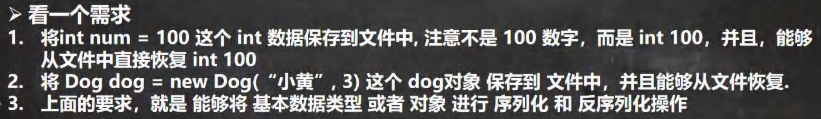
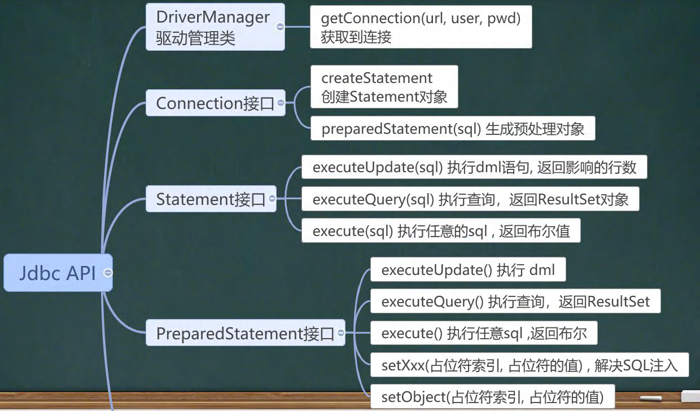
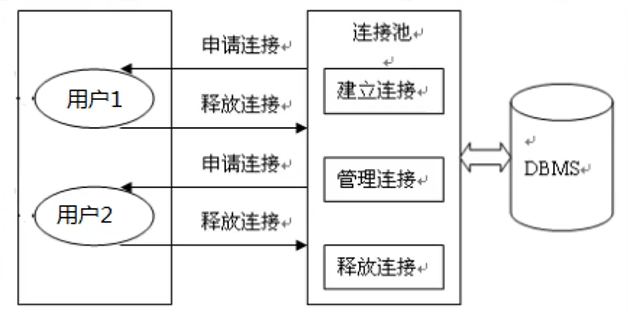
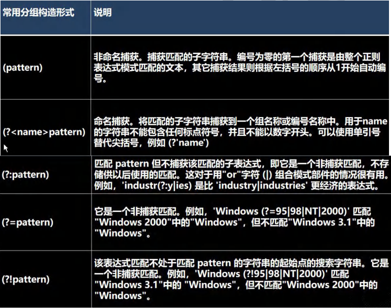

本文最后更新于：2023年7月4日 晚上
Java 转义字符 Java 常用的转义字符 1 2 3 4 5 6 7 在控制台，输入 tab 键，可以实现命令补全" :一个" ' ：一个' "韩顺平教育\r 北京" );
变量
变量表示内存中的一个存储区域 [不同的变量，类型不同，占用的空间大小不同]
比如： int 4 个字节，double 就是 8 个字节
该区域有自己的名称[变量名] 和类型[数据类型]
变量必须先声明，后使用，即有顺序
该区域的数据/值可以在同一类型范围内不断变化
变量在同一个作用域内不能重名
变量 = 变量名 + 值 + 数据类型 【变量三要素】
程序中 +号的使用
当左右两边都是数值型时，则做加法运算
当左右两边有一方为字符串，则做拼接运算
运算顺序为从左到右
1 2 3 4 System.out.println(10 + 98 ); "100" + 98 ); 100 + 3 + "hello" ); "hello" + 100 + 3 );
数据类型 每一种数据都定义了明确的数据类型，在内存中分配了不同大小的内存空间(字节)。
整数类型 整型的类型 整型的使用细节
Java 各整数类型有固定的范围和字段长度，不受具体OS[操作系统]的影响，以保证java程序的可移植性
Java 的整型常量（具体值）默认为 int 型，声明 long 型常量须后加 ‘l’ 或 ‘L’
Java 程序中变量常声明为 int 型，除非不足以表示大数，才使用 long
bit（比特）：计算机中的最小存储单位。
byte（字节）：计算机中基本存储单元，1 byte = 8 bit
浮点类型 基本介绍 Java 的浮点类型可以表示一个小数，比如 123.4 ，7.8 ，0.12 等等
浮点型的分类
说明
关于浮点数在机器中存放形式的简单说明，浮点数 = 符号位 + 指数位 + 尾数位
尾数部分可能丢失，造成精度损失(小数都是近似值)。
浮点型使用细节
与整数类似，Java 浮点类型也有固定的范围和字段长度，不受具体OS的影响。
[float 4 个字节，double 8 个字节]
Java 的浮点型常量（具体值）默认为 double 型，声明 float 型常量，须后加 ‘f’ 或 ‘F’
浮点型常量有两种表示形式
十进制数形式：如：5.12 512.0f .572 （必须有小数点）
科学计数法形式：如：5.12e2（5.12*10的2次方） 5.12E-2（5.12/10的2次方）
通常情况下，应该是使用 double 型，因为它比 float 型更精确
浮点数使用陷阱：2.7 和 8.1/3 比较
1 2 3 4 5 6 7 8 9 10 11 12 13 14 15 16 17 double num11 = 2.7 ;double num12 = 8.1 /3 ; if ( num11 == num12) { "num11 == num12 相等" );double num1=2.7 ;double num2=8.1 /3 ;if (Math.abs(num7-num8)<0.00001 ){ "相等~~" );
字符类型(char) 基本介绍 字符类型（char）可表示单个字符，char 是两个字节（Java 中 char 使用 Unicode 编码，可以存放汉字）
1 2 3 4 char c1 = 'a' ;char c2 = '\t' ;char c3 = '韩' ;char c4 = 97 ;
字符类型使用细节
字符常量是用单引号（’’）括起来的单个字符，例如 char c1 = ‘a’; char c2 = ‘\t’; char c3 = ‘韩’; char c4 = 97;
Java 中还允许使用转义字符 ‘\‘ 来将其后的字符转变为特殊字符型常量。例如 char c = ‘\n’; ‘\n’ 表示换行符
在java中，char的本质是一个整数，在输出时，时unicode码对应的字符
可以直接给char赋一个整数，然后输出时，会按照对应的unicode字符输出 [97 -> a]
char 类型是可以进行运算的，相当于一个整数，因为它都对应有 Unicode 码。
1 2 3 4 5 6 7 8 9 10 11 12 13 14 15 16 17 18 19 20 21 public class CharDetail {public static void main (String[] args) {char c1 = 97 ;char c2 = 'a' ; int )c2);char c3 = '韩' ;int )c3);char c4 = 38889 ;'a' + 10 );char c5 = 'b' + 1 ;int )c5);
面向对象编程 for循环 1 2 3 4 5 6 7 8 9 10 11 12 int [] nums = {1 , 2 , 9 };"=====普通的for=====" );for (int i = 0 ; i < nums.length; i++) {"=====增强的for=====" );for (int i : nums) {"i=" + i);
增强 for 不能做删除元素等操作，否则会出错
三元运算符 是一个整体
IDEA 显示所有的快捷键的的快捷键 ctrl + j
包 包的三大作用
区分相同名字的类
当类很多时，可以很好的管理类 [看Java api 文档，一个包里面存放相对应的接口和类等等]
控制访问范围
包的基本语法 说明：
package：关键字，表示打包
com.java_study：表示包名，实际上就是文件夹 com\java_study\
包的本质分析（原理） 包的本质实际上就是创建不同的文件夹来保存类文件
包的快速入门 1 2 3 4 5 6 7 8 9 10 11 12 13 14 15 16 17 18 19 20 21 22 23 24 25 26 27 package com.use;import com.xiaoqiang.Dog;public class Test {public static void main (String[] args) {Dog dog = new Dog ();Dog dog1 = new com .xiaoming.Dog(); package com.xiaoming;public class Dog {package com.xiaoqiang;public class Dog {
包的命名
常用的包
java.lang.* //lang包是基本包，默认引入，不需要再手动引入
java.util.* //util包，系统提供的工具包，工具类，使用 Scanner
java.net.* //网络包，网络开发
java.awt.* //是做java的界面开发，GUI
包的使用细节
如何引入包
import 包.类 //只引入该包里面的这一个类
import 包.* //该包里面的所有类都引入
1 2 3 4 5 6 7 8 9 10 package com.java_study.pkg;import java.util.Scanner; import java.util.*; public class Import01 {public static void main (String[] args) {
注意事项和使用细节
package 的作用是声明当前类所在的包，需要放在class的最上面，一个类中最多只有一条package语句
import指令 位置放在package的下面，在类定义前面，可以有多句且没有顺序要求
同包的不同类之间可以直接使用，不需要导入
访问修饰符 基本介绍 java 提供四种访问控制修饰符号，用于控制 方法和属性 的访问权限：
public：对外公开
protected：对子类和同一个包中的类公开
默认：向同一个包的类公开
private：只有本类可以访问，不对外公开
1 2 3 4 5 6 7 8 9 10 11 12 13 14 15 16 17 18 19 20 21 22 23 24 25 26 27 28 29 30 31 32 33 34 35 36 37 38 39 40 41 42 43 44 45 46 47 48 49 50 51 52 53 54 55 56 57 58 59 60 61 62 63 64 65 66 67 68 69 70 71 72 73 74 75 76 77 78 79 80 81 82 83 84 package com.java_study.modifier;import com.java_study.pkg.D;public class Test {public static void main (String[] args) {A a = new A ();B b = new B ();D d = new D ();class Test2 {package com.java_study.modifier;public class A {public int n1 = 100 ;protected int n2 = 200 ;int n3 = 300 ;private int n4 = 400 ;public void func1 () {"n1=" + n1 + " n2=" + n2 + " n3=" + n3 + " n4=" + n4);public void m1 () {}protected void m2 () {}void m3 () {}private void m4 () {}public void method1 () {package com.java_study.modifier;public class B {public void func2 () {A a = new A ();"n1=" + a.n1 + " n2=" + a.n2 + " n3=" + a.n3);package com.java_study.pkg;import com.java_study.modifier.A;public class D {public void func4 () {A a = new A ();"n1=" + a.n1);
注意事项
修饰符可以用来修饰类中的属性，成员方法以及类
只有 默认 和 public 才能修饰类 成员方法的访问规则和属性完全一样
关于在子类中的访问权限后面再学
封装 封装就是把抽象出的数据[属性]和对数据的操作[方法]封装在一起，数据背保护在内部，程序的其它部分只有通过被授权的操作[方法]，才能对数据进行操作。
封装的理解与好处
封装的实现步骤
将属性进行私有化 private [不能直接修改属性]
提供一个公共的 set 方法，用于对属性输入判断并赋值
提供一个公共的 get 方法，用于获取属性的值
1 2 3 4 5 6 7 8 9 10 11 12 13 14 15 16 17 18 19 20 21 22 23 24 25 26 27 28 29 30 31 32 33 34 35 36 37 38 39 40 41 42 43 44 45 46 47 48 49 50 51 52 53 54 55 56 57 58 59 60 61 62 63 64 65 66 67 68 69 70 71 72 73 74 75 76 77 78 79 80 81 82 83 84 package com.java_study.encap;public class Encapsulation01 {public static void main (String[] args) {Person person = new Person ();"jack" );18 );30000 );class Person {public String name; private int age; private double salary; public Person () {public Person (String name, int age, double salary) {public String getName () {return name;public void setName (String name) {if (name.length() >=2 && name.length()<=6 ){this .name = name;else {"名字长度不对，需要 2-6 个字符，默认为 无名" );this .name = "无名" ;public int getAge () {return age;public void setAge (int age) {if (age>=1 && age<=120 ){this .age = age;else {"年龄应在 1-120 之间，默认值为18" );this .age = 18 ;public double getSalary () {return salary;public void setSalary (double salary) {if (salary>=0 ){this .salary = salary;else {this .salary = 0 ;public String info () {return "信息为 name=" + name + " age=" + age + " 薪水=" + salary;
继承 继承基本介绍和示意图 继承可以解决代码复用，让我们的编程更加靠近人类思维。当多个类存在相同的属性(变量)和方法时，可以从这些类中抽象出父类，在父类中定义这些相同的属性和方法，所有的子类不需要重新定义这些属性和方法，只需要通过 extends 来声明继承父类即可。
继承的基本语法 1 2 3 class 子类 extends 父类 {
子类会自动拥有父类定义的属性和方法
父类 又叫 超类，基类
子类 又叫 派生类
快速入门
1 2 3 4 5 6 7 8 9 10 11 12 13 14 15 16 17 18 19 20 21 22 23 24 25 26 27 28 29 30 31 32 33 34 35 36 37 38 39 40 41 42 43 44 45 46 47 48 49 50 51 52 53 54 55 56 57 package com.java_study.extend;public class Extends01 {public static void main (String[] args) {Pupil pupil = new Pupil ();"银角大王~" ;11 ;50 );"=======" );Graduate graduate = new Graduate ();"金角大王~" ;23 ;80 );package com.java_study.extend;public class Student {public String name;public int age;private double score;public void setScore (double score) {this .score = score;public void showInfo () {"学生 " + name + " 年龄 " + age + " 成绩 " + score);package com.java_study.extend;public class Graduate extends Student {public void testing () {"大学生 " + name + " 正在考大学数学" );package com.java_study.extend;public class Pupil extends Student {public void testing () {"小学生 " + name +" 正在考小学数学" );
继承的细节问题(重要) 继承的好处：
继承的细节问题（重要）：
子类继承了父类所有的属性和方法，并且可以直接访问父类中非私有的属性和方法，
但是子类不能直接访问父类中的私有属性和方法，要通过父类中的公有方法去访问
子类必须调用父类的构造器，完成父类的初始化
当创建子类对象时，不管使用子类的哪个构造器，默认情况下总会去调用父类的无参构造器 ，
如果父类没有提供无参构造器，则必须在子类的构造器中用 super 去指定使用父类的哪个构造器完成对父类
的初始化工作。否则，编译不会通过
如果希望指定去调用父类的某个构造器，则可以显式地调用一下
super 在使用时，需要放在构造器第一行
super() 和 this() 都只能放在构造器第一行，因此这两个方法不能共存在一个构造器里面
java 所有类都是 Object 类的子类, Object 是所有类的基类
父类构造器的调用不限于直接父类，将一直往上追溯直到 Object 类(顶级父类)
子类最多只能继承一个父类(指直接继承)，即 java 中是 单继承机制。
思考：如何让 A 类继承 B 类和 C 类？ 【A 继承 B， B 继承 C】
不能滥用继承，子类和父类之间必须满足 is-a 的逻辑关系
1 2 3 4 5 6 7 8 9 10 11 12 13 14 15 16 17 18 19 20 21 22 23 24 25 26 27 28 29 30 31 32 33 34 35 36 37 38 39 40 41 42 43 44 45 46 47 48 49 50 51 52 53 54 55 56 57 58 59 60 61 62 63 64 65 66 67 68 69 70 71 72 73 74 75 76 77 78 79 80 81 82 83 84 85 86 87 88 89 90 91 92 93 94 95 96 97 98 99 100 101 102 103 package com.hspedu.extend_;public class ExtendsDetail {public static void main (String[] args) {"===第 3 对象====" );Sub sub3 = new Sub ("king" , 10 ); package com.hspedu.extend_;public class Base extends TopBase { public int n1 = 100 ;protected int n2 = 200 ;int n3 = 300 ;private int n4 = 400 ;public Base () { "父类 Base()构造器被调用...." );public Base (String name, int age) {"父类 Base(String name, int age)构造器被调用...." );public Base (String name) {"父类 Base(String name)构造器被调用...." );public int getN4 () {return n4;public void test100 () {"test100" );protected void test200 () {"test200" );void test300 () {"test300" );private void test400 () {"test400" );public void callTest400 () {package com.hspedu.extend_;import java.util.Arrays;public class Sub extends Base { public Sub (String name, int age) {super ("king" , 20 );"子类 Sub(String name, int age)构造器被调用...." );public Sub () {super ("smith" , 10 );"子类 Sub()构造器被调用...." );public Sub (String name) {super ("tom" , 30 );"子类 Sub(String name)构造器被调用...." );public void sayOk () {" " + n2 + " " + n3);"n4=" + getN4());package com.hspedu.extend_;public class TopBase { public TopBase () {"构造器 TopBase() 被调用..." );
继承的本质分析(重要) 当子类对象创建好后，将会建立 查找的关系
(1) 首先看子类是否有该属性
(2) 如果子类有这个属性，并且可以访问，则返回信息
(3) 如果子类没有这个属性，就看父类有没有这个属性
（如果父类有该属性，并且可以访问，就返回信息..）
（如果父类有该属性，但不可访问，则会报错，不会继续找上级父类）
(4) 如果父类没有就按照(3)的规则，继续找上级父类，直到 Object…
子类创建的内存布局：
代码：
1 2 3 4 5 6 7 8 9 10 11 12 13 14 15 16 17 18 19 20 21 22 23 24 25 26 27 28 29 30 31 32 33 34 35 36 37 38 package com.java_study.extend;public class ExtendsTheory {public static void main (String[] args) {Son son = new Son ();class GrandPa { String name = "大头爷爷" ;String hobby = "旅游" ;int age = 99 ; class Father extends GrandPa {String name = "大头爸爸" ;private int age = 39 ;public int getAge () {return age;class Son extends Father { String name = "大头儿子" ;
super
super 代表父类的引用，用于访问父类的属性、方法、构造器
基本语法
super 的相关细节 super 带来的好处
调用父类的构造器的好处（分工明确，父类属性由父类初始化，子类的属性由子类初始化）
当子类中有和父类中的成员（属性/方法）重名时，为了访问父类的成员，必须通过 super 。
如果没有重名，使用 super、this、直接访问 是一样的效果
super 的访问不限于直接父类，如果爷爷类和本类中有同名的成员，也可以使用 super 去访问爷爷类的成员
如果多个基类（上级类）中都有同名的成员，使用 super 访问遵循就近原则，同时遵循继承的访问权限规则
注意：如果查找属性的过程中，找到了但不能访问，则报错 cannot access；如果查找属性的过程中，没有找到，则提示属性不存在
1 2 3 4 5 6 7 8 9 10 11 12 13 14 15 16 17 18 19 20 21 22 23 24 25 26 27 28 29 30 31 32 33 34 35 36 37 38 39 40 41 42 43 44 45 46 47 48 49 50 51 52 53 54 55 56 public class B extends A {public int n1 = 888 ;public void test () {"super.n1=" + super .n1);super .cal();public void hi () {super .n1 + " " + super .n2 + " " + super .n3 );public void cal () {"B 类的 cal() 方法..." );public void sum () {"B 类的 sum()" );this .cal(); this .n1);super .n1);public void ok () {super .test100();super .test200();super .test300();public B () {super ("jack" );
super 和 this 的比较
方法重写/覆盖
简单地说：方法重写（覆盖） 就是子类有一个方法，和父类的某个方法的 名称、返回类型、参数 均一致，那么就称子类的这个方法覆盖了父类的方法（其中的父类不要求是直接父类）
注意事项与细节 方法重写需要满足的条件
多态
方法或对象具有多种形态
多态的具体体现
方法的多态 重写和重载均体现多态
对象的多态（ 核心，困难，重点）
一个对象的编译类型和运行类型可以不一致 编译类型在定义对象是就已经确定了，不能改变
运行类型是可以变化的
编译类型看 定义时 = 号的 左边，运行类型看 = 号的 右边
1 2 Animal animal = new Dog (); new Cat ();
1 2 3 4 5 6 7 8 9 10 11 12 13 14 15 16 17 18 19 20 21 22 23 24 25 26 27 package com.java_study.poly_.objectPoly;public class PolyObject {public static void main (String[] args) {Animal animal = new Dog (); new Cat (); package com.java_study.poly_.objectPoly;public class Dog extends Animal {@Override public void cry () {"Dog cry()" );package com.java_study.poly_.objectPoly;public class Cat extends Animal {@Override public void cry () {"Cat cry()" );
多态注意事项与细节 多态的前提： 两个对象（类）存在继承关系
多态的向上转型
多态的向下转型
语法：
只能强转父类的引用，不能强转父类的对象
要求父类的引用当前必须指向目标类型的对象
向下转型后，可以调用子类类型中所有的成员
（用 引用的指向 的思想来思考）
案例：向上转型和向下转型
1 2 3 4 5 6 7 8 9 10 11 12 13 14 15 16 17 18 19 20 21 22 23 24 25 26 27 28 29 30 31 32 33 34 35 36 37 38 39 40 41 42 43 44 45 46 47 48 49 50 51 52 53 54 55 56 57 58 59 60 61 package com.java_study.poly_.detail_;public class PolyDetail {public static void main (String[] args) {Animal animal = new Cat ();Object obj = new Cat (); "=============" );Cat cat = (Cat) animal; package com.java_study.poly_.detail_;public class Animal {String name = "动物" ;int age = 10 ;public void eat () {System.out.println("吃" );}public void run () {System.out.println("跑" );}public void sleep () {System.out.println("睡" );}public void show () {System.out.println("hello,你好" );}package com.java_study.poly_.detail_;public class Cat extends Animal {public void eat () { "猫吃鱼" );public void catchMouse () { "猫抓老鼠" );package com.java_study.poly_.detail_;public class Dog extends Animal {public void eat () { "狗吃骨头" );
多态的属性问题
属性没有重写之说，属性的值看编译类型 instanceOf 比较操作符 ，用于判断对象的 运行类型 是否为 XX类型 或 XX类型 的 子类型
1 2 3 4 5 6 7 8 9 10 11 12 13 14 15 16 17 18 package com.java_study.poly_.detail_;public class PolyDetail02 {public static void main (String[] args) {Base base = new Sub ();Sub sub = new Sub ();class Base { int count = 10 ;class Sub extends Base {int count = 20 ;
1 2 3 4 5 6 7 8 9 10 11 12 13 14 15 16 17 18 package com.java_study.poly_.detail_;public class PolyDetail03 {public static void main (String[] args) {BB bb = new BB ();instanceof BB); instanceof AA); AA aa = new BB ();instanceof AA); instanceof BB); class AA {} class BB extends AA {}
动态绑定机制（很重要）
当调用对象方法的时候，该方法会和该对象的 内存地址/运行类型 绑定
当调用对象属性时，没有动态绑定机制，哪里声明，哪里使用（用谁的方法就用谁的属性）
1 2 3 4 5 6 7 8 9 10 11 12 13 14 15 16 17 18 19 20 21 22 23 24 25 26 27 28 29 30 31 32 33 34 35 36 37 package com.java_study.poly_.dynamic_;public class DynamicBinding {public static void main (String[] args) {A a = new B (); class A {public int i = 10 ;public int sum () {return getI() + 10 ; public int sum1 () { return i + 10 ; public int getI () { return i;class B extends A { public int i = 20 ;public int getI () { return i;
多态数组 数组的定义类型为父类类型，里面保存的实际元素类型为子类类型
1 2 3 4 5 6 7 8 9 10 11 12 13 14 15 16 17 18 19 20 21 22 23 24 25 26 27 28 29 30 31 32 33 34 35 36 37 38 39 40 41 42 43 44 45 46 47 48 49 50 51 52 53 54 55 56 57 58 59 60 61 62 63 64 65 66 67 68 69 70 71 72 73 74 75 76 77 78 79 80 81 82 83 84 85 86 87 88 89 90 91 92 93 94 95 96 97 98 99 100 101 102 103 104 105 106 107 108 109 110 111 112 113 114 115 116 117 118 119 120 121 122 123 124 125 package com.java_study.polyarr_;public class PolyArray {public static void main (String[] args) {new Person [5 ];0 ] = new Person ("jack" ,20 );1 ] = new Student ("marry" ,18 ,100 );2 ] = new Student ("smith" ,17 ,30.1 );3 ] = new Teather ("scott" ,30 ,20000 );4 ] = new Teather ("king" ,50 ,30000 );for (int i = 0 ; i < person.length; i++) {if (person[i] instanceof Teather) {Teather teather = (Teather) person[i]; else if (person[i] instanceof Student) {package com.java_study.polyarr_;public class Person {private String name;private int age;public Person (String name, int age) {this .name = name;this .age = age;public String getName () {return name;public void setName (String name) {this .name = name;public int getAge () {return age;public void setAge (int age) {this .age = age;public String say () {return name + "\t" + age;package com.java_study.polyarr_;public class Teather extends Person {private double salary;public Teather (String name, int age, double salary) {super (name, age);this .salary = salary;public double getSalary () {return salary;public void setSalary (double salary) {this .salary = salary;@Override public String say () {return "老师 " + super .say() + " salary = " + salary;public void teach () {"老师 " + getName() + " 正在授课" );package com.java_study.polyarr_;public class Student extends Person {private double score;public Student (String name, int age, double score) {super (name, age);this .score = score;public double getScore () {return score;public void setScore (double score) {this .score = score;@Override public String say () {return "学生 " + super .say() + " score = " + score;public void study () {"学生 " + getName() + " 正在学习" );
多态参数
Object 类详解 equals 方法
== 和 equals 的对比
== 是一个比较运算符，既可以判断基本类型，又可以判断引用类型
== ：如果判断基本类型，判断的是值是否相等
== ：如果判断引用类型，判断的是地址是否相等，而不是判断是否为同一个类的对象
equals 是Object类中的方法，只能判断引用类型
默认判断的是地址是否相等，子类中往往重写该方法，用于判断内容是否相等
1 2 3 4 5 6 7 8 9 Integer integer1 = new Integer (1000 );Integer integer2 = new Integer (1000 );String str1 = new String ("java_study" );String str2 = new String ("java_study" );
案例：
1 2 3 4 5 6 7 8 9 10 11 12 13 14 15 16 17 18 19 20 21 22 23 24 25 26 27 28 29 30 31 32 33 34 35 36 37 38 39 40 41 42 43 44 package com.java_study.object_;public class EqualExercise01 {public static void main (String[] args) {Person person1 = new Person ("jack" , 10 , '男' );Person person2 = new Person ("jack" , 10 , '男' );class Person {private String name;private int age;private char gender;@Override public boolean equals (Object obj) {if (this == obj) return true ;if (obj instanceof Person) { Person p = (Person) obj;return this .name.equals(p.name) && this .age == p.age && this .gender == p.gender;return false ;public Person (String name, int age, char gender) {this .name = name;this .age = age;this .gender = gender;public String getName () {return name;}public void setName (String name) {this .name = name;}public int getAge () {return age;}public void setAge (int age) {this .age = age;}public char getGender () {return gender;}public void setGender (char gender) {this .gender = gender;}
hashCode 方法
提高具有哈希结构的容器的效率
两个引用，如果指向的是同一个对象，则哈希值肯定是一样的
两个引用，如果指向的是不同对象，则哈希值是不一样的（此处不严谨）
哈希值主要根据地址号来的，不能完全的将哈希值等价于地址
后面在集合中 hashCode 如果需要的话也会重写（在讲解集合时学习重写 hashCode 方法）
1 2 3 4 5 6 7 8 9 10 11 12 13 14 15 package com.java_study.object_;public class HsahCode {public static void main (String[] args) {AA aa = new AA ();AA aa2 = new AA ();AA aa3 = aa;"aa.hashCode()=" + aa.hashCode()); "aa2.hashCode()=" + aa2.hashCode()); "aa3.hashCode()=" + aa3.hashCode()); class AA {}
toString 方法
基本介绍
默认返回：全类名 + @ + 哈希值的十六进制
子类往往重写 toString 方法，用于返回对象的属性信息
重写 toString 方法，打印对象或拼接对象时，都会自动调用该对象的 toString 形式
当直接输出一个对象时，toString 方法会被默认的调用
例如 System.out.plintln(monster); //就会默认调用 monster.toString()
1 2 3 4 5 6 7 8 9 10 11 12 13 14 15 16 17 18 19 20 21 22 23 24 25 26 27 28 29 30 31 32 33 34 35 36 37 38 39 40 41 42 43 44 45 46 47 package com.java_study.object_;public class ToString {public static void main (String[] args) {Monster monster = new Monster ("小妖怪" , "巡山" , 1000 );class Monster {private String name;private String job;private double sal;public Monster (String name, String job, double sal) {this .name = name;this .job = job;this .sal = sal;@Override public String toString () {return "Monster{" +"name='" + name + '\'' +", job='" + job + '\'' +", sal=" + sal +'}' ;
finalize 方法（已弃用）
当对象被回收时，系统自动调用该对象的 finalize 方法。子类可以重写该方法，做一些释放资源的操作
什么时候被回收：当某个对象没有任何引用时，则 jvm 就认为这个对象是一个垃圾对象，就会使用垃圾回收
机制来销毁该对象，在销毁该对象前，会先调用 finalize 方法。
垃圾回收机制的调用，是由系统来决定(即有自己的 GC 算法)
也可以通过 System.gc() 主动触发垃圾回收机制
提示： 我们在实际开发中，几乎不会运用 finalize，所以更多就是为了应付面试
1 2 3 4 5 6 7 8 9 10 11 12 13 14 15 16 17 18 19 20 21 22 23 24 25 26 27 28 29 30 31 package com.java_study.object_;public class Finalize_ {public static void main (String[] args) {Car car = new Car ("宝马" );null ;"程序退出了...." );class Car {private String name;public Car (String name) {this .name = name;@Override protected void finalize () throws Throwable {super .finalize();"我们销毁汽车" + name);"释放了内存空间" );
断点调试(Debug)
断点调试是指在程序的某一行设置一个断点，调试时，程序运行到这一行就会停住，然后你可以一步一步往下调试，调试过程中可以看到各个变量当前的值，出错的话，调试到出错的代码行即显示错误，停下，进而分析从而找到这个Bug
断点调试也能帮助我们查看 java 底层源代码的执行过程，提高程序员的 java 水平
重要提示 ：在断点调试过程中，是运行状态，是以对象的 运行类型 来执行的
快捷键
F9(resume,执行到下一个断点)
类变量和类方法 类变量 类变量也叫静态变量/静态属性，是该类的所有对象共享的变量，任何一个该类的对象去访问它时，取到的都是相同的值，同样任何一个该类的对象去修改它时，修改的也是同一个变量。
类变量（静态变量）被同一个类的所有对象实例共享
static 类变量，在类加载的时候就生成了
说明： 类变量是随着类的加载而创建的，所以没有创建对象实例也可以访问
JDK8以前，类变量是放在方法区的静态域
JDK8以后，类变量是放在堆里面的，通过反射机制加载一个叫该类的Class对象… …
如何定义类变量 定义语法：
1 2 访问修饰符 static 数据类型 变量名; static 访问修饰符 数据类型 变量名;
如何访问类变量
类变量注意事项和细节
什么时候需要用类变量
当我们需要让某个类的所有对象都共享一个变量时，就可以考虑使用类变量（静态变量）
类变量与普通属性的区别
类变量时该类的所有对象共享的，而实例变量是每个对象独享的
类变量可以通过 类名.类变量名 或者 对象名.类变量名 来访问（推荐使用 类名.类变量名）
类变量是在类加载时就初始化了，因此即使没有创建对象，只要类加载了就可以使用类变量
类变量的生命周期时随类的加载开始，随着类的消亡而销毁
类方法
类方法注意事项和细节
类方法和普通方法都是随着类的加载而加载，将结构信息存储在方法区
类方法中无 this 的参数，普通成员方法中隐含着 this 的参数
类方法可以通过类名调用，也可以通过对象名调用
普通成员方法与对象有关，不可以通过类名调用，需要通过对象名调用（对象名.方法名(参数)）
类方法中不允许使用和对象有关的关键字，比如 this 和 super
普通成员方法可以使用和对象有关的关键字，比如 this 和 super
类方法（静态方法）只能访问 静态变量 和 静态方法 (不能直接访问，可以在方法内先创建一个对象再访问)
普通成员方法 既可以访问 非静态成员，也可以访问 静态成员
注意：类方法 通过创建本类对象的方式也可以访问 非静态成员
小结：静态方法只能访问静态成员，非静态方法可以访问静态成员和非静态成员（均需要遵守访问权限）
补充：Java中的静态方法不能被子类重写
特点：静态方法属于类的方法，也属于对象的方法，但是静态方法随类的存在。
结论：Java中的静态方法不能被子类重写，实际上，子类的静态方法隐藏了父类的静态方法，因此父类的子类的静态方法同时存在，只不过父类通过类名（或对象名）调用的是父类的静态方法，子类通过类名（或对象名）调用的是子类的静态方法。
1 2 3 4 5 6 7 8 9 10 11 12 13 14 15 16 17 18 19 20 21 22 23 24 25 26 27 28 29 30 31 32 33 34 35 36 37 38 39 40 41 42 43 44 45 46 package com.hspedu.static_;public class StaticMethodDetail {public static void main (String[] args) {new D ().say();class D {private int n1 = 100 ;private static int n2 = 200 ;public void say () {public static void hi () {public static void hello () {public void ok () {
深入理解 main 方法 解释 main 方法的形式：public static void main(String[] args) {}
main 方法是由 java虚拟机 调用的
java 虚拟机需要调用类的main()方法，所以该方法的访问权限必须是public
java 虚拟机在执行main()方法时不必创建对象，所以该方法必须是static
该方法接受String类型的数组参数，该数组中保存执行java命令时传递给所运行的类的参数
java 执行的程序 参数1 参数2 参数3 [举例说明]
特别提示
在main()方法中，我们可以直接调用main方法所在类的静态方法或静态属性（不需要权限）
但是，不能直接访问该类中的非静态成员，必须创建该类的一个实例对象后，才能通过这个对象去访问类中的非静态成员
1 2 3 4 5 6 7 8 9 10 11 12 13 14 15 16 17 18 19 20 21 22 23 24 25 26 27 package com.hspedu.static_.main_;public class Main01 {private static String n1 = "学习Java" ;public static void hi1 () {"Main01的hi1方法" );private int n2 = 10000 ;public void hi2 () {"Main01的hi2方法" );public static void main (String[] args) {Main01 main01 = new Main01 ();
代码块 代码块又称为初始化块，属于类中的成员[ 即 是类的一部分 ]，类似于方法，将逻辑语句封装再方法体中，通过{}包围起来；但和方法不同，没有方法名，没有返回，没有参数，只有方法体，而且不用通过对象或类显式调用，而是加载类时，或者创建对象时隐式调用。
基本语法：
说明：
修饰符 可选，要写的话也只能写 static 代码块分为两类，使用 static 修饰的叫静态代码块，没有 static 修饰的，叫普通代码块/非静态代码块
逻辑语句可以分为任何逻辑语句（输入、输出、方法调用、循环、判断等）
{}; 中的分号 ( ; ) 可以写上，也可以省略
用处：
相当于另外一种形式的构造器（对构造器的补充机制），可以做初始化的操作
场景：如果多个构造器中都有重复的语句，可以抽取到初始化块中，提高代码的复用性
代码块注意事项与细节
普通的代码块，在创建对象实例时，会被隐式的调用；每创建一次，就会调用一次。
如果只是使用类的静态成员时，普通代码块并不会执行。
static代码块也叫静态代码块，作用就是对类进行初始化，而且它随着类的加载而执行，并且只会执行一次。
类什么时候被加载 [ 重要 ]
创建对象实例时（new）
加载子类时，父类也会被加载
使用类的静态成员时（静态属性、静态方法）
注：每个类最多只会加载一次
创建一个对象时，在 一个类中 的调用顺序是（重难点）：
调用静态代码块和静态属性初始化（同优先级，按定义顺序来调用）
调用普通代码块和普通属性的初始化（同优先级，按定义顺序来调用）
调用构造方法
注意：静态代码块和静态属性初始化的调用优先级一样，如果有多个静态代码块和多个静态变量初始化，则按它们定义的顺序调用； 同样，普通代码块和普通属性初始化的调用优先级一样，如果有多个普通代码块和多个普通属性初始化，则按定义顺序调用。
构造方法（构造器）的最前面其实隐含了 super() 和 调用普通代码块及普通属性初始化，而静态相关的代码块和属性初始化在类加载时就执行完毕，因此是优先于构造器和普通代码块执行的
1 2 3 4 5 6 7 8 9 class A {public A () {
继承关系中 静态代码块、静态属性初始化、普通代码块、普通属性初始化、构造方法 的调用顺序：
父类的静态代码块和静态属性（同优先级，按定义顺序来调用）
子类的静态代码块和静态属性（同优先级，按定义顺序来调用）
父类的普通代码块和普通属性初始化（同优先级，按定义顺序来调用）
父类的构造方法
子类的普通代码块和普通属性初始化（同优先级，按定义顺序来调用）
子类的构造方法
静态代码块直接调用的话只能调用调用静态成员(静态属性和静态方法)，普通代码块可以调用任意成员
1 2 3 4 5 6 7 8 9 10 11 12 13 14 15 16 17 18 19 20 21 22 23 24 25 26 27 28 29 30 31 32 33 34 35 36 37 38 39 40 41 42 43 44 45 46 47 48 49 50 51 52 53 54 55 56 57 58 59 60 61 62 63 64 65 66 67 68 69 70 71 72 73 74 75 76 77 78 79 80 81 82 83 84 85 86 87 88 89 90 91 92 93 94 95 96 97 98 99 100 package com.hspedu.codeblock_;public class CodeBlockDetail04 {public static void main (String[] args) {new B02 ();"==========" );new C02 ();class A02 { private static int n1 = getVal01();static {"A02的一个静态代码块.." );"A02的第一个普通代码块.." );public int n3 = getVal02();public static int getVal01 () {"A02的静态属性初始化" );return 10 ;public int getVal02 () {"A02的普通属性初始化" );return 10 ;public A02 () {"A02的构造器" );class B02 extends A02 { private static int n3 = getVal03();static {"B02的一个静态代码块.." );public int n5 = getVal04();"B02的第一个普通代码块.." );public static int getVal03 () {"B02的静态属性初始化" );return 10 ;public int getVal04 () {"B02的普通属性初始化" );return 10 ;public B02 () {"B02的构造器" );class C02 {private int n1 = 100 ;private static int n2 = 200 ;private void m1 () {private static void m2 () {static {
单例设计模式 PS：目前公认的设计模式有（23种）
什么是单例模式
采用一定的方法保证在整个的软件系统中，对某个类只能存在一个对象实例，并且该类只提供一个取得其对象实例的方法。
单例模式有两种方式：（1）饿汉式 （2）懒汉式
单例设计模式应用实例：
步骤如下：
构造器私有化（防止直接new）
类的内部创建对象
向外暴露一个静态的公共方法 getInstance
代码实现
1 2 3 4 5 6 7 8 9 10 11 12 13 14 15 16 17 18 19 20 21 22 23 24 25 26 27 28 29 30 31 32 33 34 35 36 37 38 39 40 41 42 43 44 45 46 47 48 49 50 51 52 53 package com.hspedu.single_;public class SingleTon01 {public static void main (String[] args) {GirlFriend instance = GirlFriend.getInstance();GirlFriend instance2 = GirlFriend.getInstance();class GirlFriend {private String name;private static GirlFriend gf = new GirlFriend ("小红红" );private GirlFriend (String name) {"構造器被調用." );this .name = name;public static GirlFriend getInstance () {return gf;@Override public String toString () {return "GirlFriend{" +"name='" + name + '\'' +'}' ;
1 2 3 4 5 6 7 8 9 10 11 12 13 14 15 16 17 18 19 20 21 22 23 24 25 26 27 28 29 30 31 32 33 34 35 36 37 38 39 40 41 42 43 44 45 46 47 48 49 50 51 package com.hspedu.single_;public class SingleTon02 {public static void main (String[] args) {Cat instance = Cat.getInstance();Cat instance2 = Cat.getInstance();class Cat {private String name;public static int n1 = 999 ;private static Cat cat ; private Cat (String name) {"構造器調用..." );this .name = name;public static Cat getInstance () {if (cat == null ) {new Cat ("小可愛" );return cat;@Override public String toString () {return "Cat{" +"name='" + name + '\'' +'}' ;
饿汉式 VS 懒汉式
二者最主要的区别在于创建对象的时机不同：
饿汉式是在类加载时就创建了对象实例，而懒汉式是在使用时才创建对象实例
饿汉式不存在线程安全问题，懒汉式存在线程安全问题。
饿汉式存在浪费资源的可能，而懒汉式不存在这个问题。
final关键字 final 可以修饰 类、属性、方法 和 局部变量
使用 final 的情景：
当不希望类被继承时，可以用 final 修饰
当不希望父类的某个方法被子类覆盖/重写（override）时，可以用 final 修饰
当不希望类的某个属性的值被修改，可以用 final 修饰
当不希望某个局部变量被修改，可以使用 final 修饰
final 注意事项和细节
final 修饰的属性又叫常量，一般用 XX_XX_XX 来命名
final 修饰的属性在定义时，必须赋初值，并且以后不能再修改，赋值可以在如下位置之一
定义时：如 public final double TAX_RATE = 0.08;
在构造器中
在代码块中
如果 final 修饰的属性是静态的，则初始化的位置只能是
（1）定义时 （2）在静态代码块中（不能在构造器中赋值）
final 类不能继承，但是可以实例化对象
如果类不是 final 类，但是含有 final 方法，则该方法虽然不能重写，但是可以被继承
一般来说，如果一个类已经是 final 类了，就没有必要再将方法修饰成 final 方法了
final 不能修饰构造方法（即构造器）
final 和 static 往往搭配使用，效率更高，不会导致类加载（底层编译器做了优化处理）
1 2 3 4 5 6 7 8 9 10 11 12 13 14 15 16 17 18 package com.hspedu.final_;public class FinalDetail02 {public static void main (String[] args) {class BBB {public final static int num = 10000 ;static {"BBB 静态代码块被执行" );
抽象类 当父类的某些方法，需要声明，但是又不确定如何实现时，可以将其声明为抽象方法，那么这个类就是抽象类
抽象类的介绍：
用 abstract 关键字来修饰一个类时，这个类就叫抽象类
用 abstract 关键字来修饰一个方法时，这个方法就是抽象方法
1 访问修饰符 abstract 返回类型 方法名(参数列表);
抽象类的价值更多作用是在于设计，是设计者设计好后，让子类继承并实现抽象类()
抽象类，是考官比较爱问的知识点，在框架和设计模式使用较多
抽象类注意事项和细节
抽象类不能被实例化
抽象类不一定要包含 abstract 方法。也就是说，抽象类可以没有 abstract 方法 一旦类包含了 abstract 方法，则这个类必须声明为 abstract abstract 只能修饰类和方法，不能修饰属性和其它的
抽象类可以有任意成员 [抽象类本质还是类] ，比如：非抽象成员、构造器、静态属性等等（可用于继承）
抽象方法不能有主体，即不能实现
如果一个类继承了抽象类，则它必须实现抽象类的所有抽象方法，除非它自己也声明为 abstract 类
抽象方法不能使用 private、final 和 static 来修饰，因为这些关键字都是和重写相违背的
抽象类最佳实践 —— 模板设计模式
1 2 3 4 5 6 7 8 9 10 11 12 13 14 15 16 17 18 19 20 21 22 23 24 25 26 27 28 29 30 31 32 33 34 35 36 37 38 39 40 41 42 43 44 45 46 47 48 49 50 51 52 53 package com.hspedu.abstract_;public class TestTemplate {public static void main (String[] args) {AA aa = new AA ();BB bb = new BB ();package com.hspedu.abstract_;abstract public class Template { public abstract void job () ;public void calculateTime () {long start = System.currentTimeMillis();long end = System.currentTimeMillis();"任务执行时间 " + (end - start));package com.hspedu.abstract_;public class AA extends Template {@Override public void job () { long num = 0 ;for (long i = 1 ; i <= 800000 ; i++) {package com.hspedu.abstract_;public class BB extends Template {@Override public void job () {long num = 0 ;for (long i = 1 ; i <= 80000 ; i++) {
接口 基本介绍 接口就是给出一些没有实现的方法并封装到一起，到某个类要使用时，再根据具体情况把这些方法写出来
语法：
1 2 3 4 5 6 7 8 9 interface 接口名 {
小结：接口是更加抽象的抽象的类，抽象类里的方法可以有方法体，接口里的所有方法都没有方法体 [JDK7.0]。
接口一线了程序设计的多态和高内聚低耦合的设计思想
补充：JDK8.0 后接口类可以有 静态方法 和 默认方法 ，也就是说接口中可以有方法的具体实现
1 2 3 4 5 6 7 8 9 10 11 12 public interface AInterface {public int n1 = 10 ;public void hi () ;default public void ok () {System.out.println("ok ..." );}public static void cry () {System.out.println("cry ...." );}
接口的应用场景之一：统一规范
接口注意事项和细节
接口不能被实例化
接口中所有的方法是 public 方法，接口中抽象方法，可以不用 abstract 修饰
（修饰符 ‘public’ 对于接口成员是冗余的，可以不写 ）
一个普通类实现接口，就必须将该接口的所有方法都实现
抽象类实现接口，可以不用实现接口的方法
一个类同时可以实现多个接口
接口中的属性，只能是 final 的，而且是 public static final 修饰符。
1 比如： int a = 1 ; 实际上是 public static final int a = 1 ; （必须初始化）
接口中属性的访问形式：
接口不能继承类，但是可以继承多个别的接口
1 interface A extends B ,C {}
接口的修饰符只能是 public 和 默认，这点和类的修饰符是一样的
实现接口 VS 继承类 接口和继承解决的问题不同
继承的价值主要在于：解决代码的复用性和可维护性
接口的价值主要在于：设计好各种规范 (方法) ，让其它类去实现这些方法，更加灵活
继承是满足 is - a 的关系，而接口只需满足 like - a 的关系
接口再一定程度上实现代码解耦 [即：接口规范性 + 动态绑定机制]
小结: 当子类继承了父类，就自动的拥有父类的功能
1 2 3 4 5 6 7 8 9 10 11 12 13 14 15 16 17 18 19 20 21 22 23 24 25 26 27 28 29 30 31 32 33 34 35 36 37 38 39 40 41 42 43 44 45 46 47 48 49 50 51 package com.hspedu.interface_;public class ExtendsVsInterface {public static void main (String[] args) {LittleMonkey wuKong = new LittleMonkey ("悟空" );interface Fishable {void swimming () ;interface Birdable {void flying () ;class Monkey {private String name;public Monkey (String name) {this .name = name;public void climbing () {" 会爬树..." );public String getName () {return name;class LittleMonkey extends Monkey implements Fishable ,Birdable {public LittleMonkey (String name) {super (name);@Override public void swimming () {" 通过学习，可以像鱼儿一样游泳..." );@Override public void flying () {" 通过学习，可以像鸟儿一样飞翔..." );
接口多态特性
练习 1 2 3 4 5 6 7 8 9 10 11 12 13 14 15 16 17 18 19 20 21 package com.hspedu.interface_;public class InterfaceExercise02 {interface A { int x = 0 ; } class B { int x = 1 ; } class C extends B implements A {public void pX () {" " + super .x);public static void main (String[] args) {new C ().pX();
内部类（重难点） 如果定义类在局部位置（方法中/代码块）：（1）局部内部类 （2）匿名内部类
定义在成员位置：（1）成员内部类 （2）静态内部类
内部类的分类
定义在外部类局部位置上（比如说方法内、代码块）
局部内部类（有类名）
匿名内部类（没有类名）（重点）
定义在外部类的成员位置上
成员内部类（无 static 修饰）
静态内部类（有 static 修饰）
局部内部类 局部内部类是定义在外部类的局部位置，比如方法体中，并且有类名
可以直接访问外部类的所有成员，包含私有成员
不能添加访问修饰符，因为它的地位就是一个局部变量，而局部变量是不能使用访问修饰符的
但是可以使用 final 修饰，因为局部变量也可以使用 final
作用域：仅仅在定义它的方法或代码块中
局部内部类 — 访问 —> 外部类的成员 [ 访问方式：直接访问 ]
外部类 — 访问 —> 局部类内部的成员 [ 访问方式：先创建对象再访问（注：必须在作用域内） ]
外部其他类 — 不能访问 —> 局部内部类（因为局部内部类地位是一个局部变量）
如果外部类和局部内部类的成员重名时，默认遵循就近原则。
如果想访问外部类的成员，则可以使用（外部类名.this.成员）去访问
1 2 3 4 5 6 7 8 9 10 11 12 13 14 15 16 17 18 19 20 21 22 23 24 25 26 27 28 29 30 31 32 33 34 35 36 package com.javaStudy.innerclass;public class LocalinnerClass {public static void main (String[] args) {Outer02 outer02 = new Outer02 ();class Outer02 { private int n1 = 100 ;private void m2 () {"Ouner02 m2()" );public void m1 () { class Inner02 { private int n1 = 200 ;public void f1 () {"n1=" + n1);"就近n1=" + n1 + " 外部类的n1=" + Outer02.this .n1);Inner02 inner02 = new Inner02 ();
匿名内部类（重难点） （1）本质是类 （2）内部类 （3）该类没有名字 （4）同时还是一个对象
匿名内部类的基本语法:
匿名内部类的语法比较奇特，因为匿名内部类既是一个类的定义，同时它本身也是一个对象，因此从语法上看，它既有 定义类 的特征，也有 创建对象 的特征，因此可以调用匿名内部类方法
可以直接访问外部类的所有成员，包含私有成员
不能添加访问修饰符，因为它的地位就是一个局部变量
作用域：仅仅在定义它的方法或代码块中
匿名内部类 — 访问 —> 外部类成员 [ 访问方式：直接访问 ]
外部其他类 — 不能访问 —> 匿名内部类 （因为匿名内部类地位是一个局部变量）
如果外部类和匿名内部类的成员重名时，匿名内部类访问成员默认遵循就近原则
如果想访问外部类的成员，则可以使用（外部类名.this.成员）去访问
（在匿名内部类中，外部类名.this 即是 该外部类对象的引用）
1 2 3 4 5 6 7 8 9 10 11 12 13 14 15 16 17 18 19 20 21 22 23 24 25 26 27 28 29 30 31 32 33 34 35 36 37 38 39 40 41 42 43 44 45 46 47 48 49 50 51 52 53 54 55 56 57 58 59 60 61 62 63 64 65 66 67 68 69 70 71 72 73 74 75 76 77 78 79 80 81 82 83 84 85 86 87 88 89 90 91 92 93 94 95 package com.javaStudy.innerclass;public class AnonymousinnerClass {public static void main (String[] args) {Outer04 outer04 = new Outer04 ();class Outer04 { private int n1 = 10 ;public void method () { IA tiger = new IA (){@Override public void cry () {"老虎叫唤..." );"tiger的运行类型：" + tiger.getClass());Father father = new Father ("jack" ){@Override public void test () {"匿名内部类重写了test方法" );"father的运行类型：" + father.getClass());Animal animal = new Animal (){@Override void eat () {"小狗吃骨头..." );interface IA { public void cry () ;class Father { public Father (String name) { "接收到name：" + name);public void test () { abstract class Animal {abstract void eat () ;
1 2 3 4 5 6 7 8 9 10 11 12 13 14 15 16 17 18 19 20 21 22 23 24 25 26 27 28 29 30 31 32 33 34 35 36 37 38 39 40 41 42 43 44 45 46 47 48 49 50 51 52 package com.javaStudy.innerclass;public class AnonymousInnerClassDetail {public static void main (String[] args) {Outer05 outer05 = new Outer05 ();class Outer05 {private int n1 = 99 ;private int n2 = 100 ;public void f1 () {Person p = new Person () {private int n2 = 111 ;@Override public void hi () {"匿名内部类重写了hi方法" );"访问外部类私有成员n1：" + n1);"就近n2：" + n2);"外部类n2：" + Outer05.this .n2);new Person (){@Override public void ok (String str) {super .ok(str);"jack" );class Person { public void hi () {"Person hi()" );public void ok (String str) {"Peson ok()：" + str);
匿名内部类最佳实践 当做实参直接传递，简洁高效
1 2 3 4 5 6 7 8 9 10 11 12 13 14 15 16 17 18 19 20 21 22 23 24 25 26 27 28 29 30 31 package com.hspedu.innerclass;public class InnerClassExercise01 {public static void main (String[] args) {new IL () {@Override public void show () {"这是一副名画~~..." );new Picture ());public static void f1 (IL il) {interface IL {void show () ;class Picture implements IL {@Override public void show () {"这是一副名画XX..." );
1 2 3 4 5 6 7 8 9 10 11 12 13 14 15 16 17 18 19 20 21 22 23 24 25 26 27 28 29 30 31 32 33 34 35 36 37 38 39 40 41 42 43 44 45 46 package com.hspedu.innerclass;public class InnerClassExercise02 {public static void main (String[] args) {CellPhone cellPhone = new CellPhone ();new Bell () {@Override public void ring () {"懒猪起床了" );new Bell () {@Override public void ring () {"小伙伴上课了" );interface Bell { void ring () ;class CellPhone {public void alarmClock (Bell bell) {
成员内部类 成员内部类是定义在外部类的成员位置，并且没有static修饰
可以直接访问外部类的所有成员，包括私有成员
可以添加任意访问修饰符(public、protected、默认、private)，因为它的地位就是一个成员
作用域和外部类的其它成员一样，为整个类体
成员内部类 — 访问 —> 外部类成员 [ 访问方式：直接访问 ]
外部类 — 访问 —> 成员内部类 [ 访问方式：先创建对象再访问，私有属性也可访问 ]
外部其他类 — 访问 —> 成员内部类 [ 两种方式 下面案例展示 ]
如果外部类和内部类的成员重名时，内部类访问的话，默认遵循就近原则
如果想访问外部类的成员，则可以使用（外部类名.this.成员）去访问
1 2 3 4 5 6 7 8 9 10 11 12 13 14 15 16 17 18 19 20 21 22 23 24 25 26 27 28 29 30 31 32 33 34 35 36 37 38 39 40 41 42 43 44 45 46 47 48 49 50 51 52 53 54 package com.hspedu.innerclass;public class MemberInnerClass01 {public static void main (String[] args) {Outer08 outer08 = new Outer08 ();Inner08 inner08 = outer08.new Inner08 ();Inner08 inner08Instance = outer08.getInner08Instance();class Outer08 { private int n1 = 10 ;public String name = "张三" ;private void hi () { System.out.println("hi()方法..." ); }public class Inner08 { private double sal = 99.8 ;private int n1 = 66 ;public void say () {"n1 = " + n1 + " name = " + name + " 外部类的n1=" + Outer08.this .n1);public Inner08 getInner08Instance () {return new Inner08 ();public void t1 () {Inner08 inner08 = new Inner08 ();
静态内部类 静态内部类是定义在外部类的成员位置，并且有 static 修饰
可以直接访问外部类的所有静态成员，包含私有成员，但不能直接访问非静态成员
可以添加任意访问修饰符（public、protected、默认、private），因为它的地位就是一个成员
作用域：同其它成员，为整个类体
静态内部类 — 访问 —> 外部类（比如静态属性）[ 访问方式：直接访问所有静态成员 ]
外部类 — 访问 —> 静态内部类 [ 访问方式：先创建对象再访问 ]
外部其它类 — 访问 —> 静态内部类
如果外部类和静态内部类的成员重名时，静态内部类访问的话，默认遵循就近原则
如果想访问外部类的成员，则可以使用（外部类名.成员）去访问
1 2 3 4 5 6 7 8 9 10 11 12 13 14 15 16 17 18 19 20 21 22 23 24 25 26 27 28 29 30 31 32 33 34 35 36 37 38 39 40 41 42 43 44 45 46 47 48 49 50 51 package com.javaStudy.innerclass;public class StaticInnerClass {public static void main (String[] args) {Outer10 outer10 = new Outer10 ();Inner10 inner10 = new Outer10 .Inner10();Inner10 inner101 = outer10.getInner10();Inner10 inner10_ = Outer10.getInner10_();class Outer10 {private int n1 = 10 ;private static String name = "张三" ;private static String name2 = "张三" ;private static void cry () {"Outer10 cry()..." );public static class Inner10 {private static String name2 = "李四" ;public void say () {"name：" + name);"name2：" + name2);public Inner10 getInner10 () {return new Inner10 ();}public static Inner10 getInner10_ () {return new Inner10 ();}public void m1 () {Inner10 inner10 = new Inner10 ();
枚举 枚举是一组常量的集合，可以这样理解：枚举属于一种特殊的类，里面只包含一组有限的特定的对象
枚举的两种实现方式
自定义类实现枚举
不需要提供 setXXX 方法，因为枚举对象值通常为只读
对枚举对象/属性使用 final + static 共同修饰，实现底层优化
枚举对象名通常使用全部大写，常量的命名规范
枚举对象根据需要，也可以有多个属性
一般步骤：
构造器私有化
本类内部创建一组对象 比如：[四个 春夏秋冬]
对外暴露对象（通过为对象添加 public final static 修饰符）
可以提供 get 方法，但是不要提供 set
enum 关键字实现枚举 一般步骤：
(1) 使用关键字 enum 来替代 class
(2) public static final Season SPRING = new Season(“春天”, “温暖”)
(3) 如果有多个常量(对象)，使用逗号( , )间隔即可
(4) 如果使用 enum 实现枚举，要求把定义的常量对象写在行首
enum 关键字实现枚举注意事项 ：
当我们使用 enum 关键字开发一个枚举类时，默认会继承 Enum 类，而且是一个 final 类
传统的 public static final Season2 SPRING = new Season2(“春天”,”温暖”); 简化成 SPRING(“春天”,”温暖”)
这里必须知道，它调用的是哪个构造器
如果使用无参构造器创建枚举对象，则实参列表和小括号都可以省略
当有多个枚举对象时，使用 逗号 ( , ) 间隔，最后有一个分号结尾
枚举对象必须放在枚举类的行首
1 2 3 4 5 6 7 8 9 10 11 12 13 14 15 16 17 18 19 20 21 22 23 24 25 26 27 28 29 30 31 32 33 34 35 36 37 38 39 40 41 42 43 44 45 46 47 package com.javaStudy.enum_;public class Enumeration03 {public static void main (String[] args) {enum Season2 {"春天" ,"温暖" ),WINTER("冬天" ,"含量" ),AUTUMN("秋天" ,"凉爽" ),SUMMER("夏天" ,"炎热" );private String name;private String desc;private Season2 () {} private Season2 (String name, String desc) {this .name = name;this .desc = desc;public String getName () {return name;public String getDesc () {return desc;@Override public String toString () {return "Season{" +"name='" + name + '\'' +", desc='" + desc + '\'' +'}' ;
课堂练习
补充（原注释）：[ 返回值: the name of this enum constant ]
enum 常用方法 说明：使用关键字 enum 时，会隐式继承 Enum 类, 这样我们就可以使用 Enum 类相关的方法。
toString：Enum 类已经重写过了，返回的是当前对象名，子类可以重写该方法，用于返回对象的属性信息
name：返回当前对象名（常量名），子类中不能重写
ordinal：返回当前对象的位置号，默认从 0 开始
values：返回当前枚举类中所有的常量
valueOf：将字符串转换成枚举对象，要求字符串必须为已有的常量名，否则报异常！
compareTo：比较两个枚举常量，比较的就是编号！
1 2 3 4 5 6 7 8 9 10 11 12 13 14 15 16 17 18 19 20 21 22 23 24 25 26 27 28 29 30 31 32 33 34 35 36 37 38 39 40 41 public class EnumMethod {public static void main (String[] args) {Season2 autumn = Season2.AUTUMN;"===遍历取出枚举对象(增强for)====" );for (Season2 season: values) {Season2 autumn1 = Season2.valueOf("AUTUMN" );"autumn1=" + autumn1);
enum 实现接口
使用 enum 关键字后，就不能再继承其它类了，因为 enum 会隐式继承 Enum，而 Java 是单继承机制。
枚举类和普通类一样，可以实现接口，如下形式。
1 enum 类名 implements 接口 1 ，接口 2 {}
1 2 3 4 5 6 7 8 9 10 11 12 13 14 15 16 17 18 19 20 21 public class EnumDetail {public static void main (String[] args) {class A {interface IPlaying {public void playing () ;enum Music implements IPlaying {@Override public void playing () {"播放好听的音乐..." );
注解
注解(Annotation) 也被称为元数据，用于修饰解释 包、类、方法、属性、构造器、局部变量等数据信息
和注释一样，注解不影响程序逻辑，但注解可以被编译或运行，相当于嵌入在代码中的补充信息
在 JavaSE 中，注解的使用目的比较简单，例如标记过时的功能，忽略警告等。
在 JavaEE 中，注解占据了更重要的角色，例如用来配置应用程序的任何切面，代替 JacaEE 旧版中所遗留的臃肿代码和 XML 配置等
基本的 Annotation 介绍 使用 Annotation 时要在其前面增加 @ 符号, 并把该 Annotation 当成一个修饰符使用, 用于修饰它支持的程序元素
三个基本的 Annotation：
@Override: 限定某个方法，是重写父类方法, 该注解只能用于方法
@Deprecated: 用于表示某个程序元素(类, 方法等)已过时
@SuppressWarnings: 抑制编译器警告
@Override 使用说明 @Override: 限定某个方法，是重写父类方法, 该注解只能用于方法
@Override 表示知道重写父类的方法（从编译层面验证），如果父类没有该方法，则会报错
如果不写 @Override 注解，也可以构成重写
@Override 只能修饰方法，不能修饰其它类、包、属性等
查看 @Override 注解源码为 @Target(ElementType.METHOD)，说明只是修饰方法
@Target 是修饰注解的注解，称为元注解
关于@interface的补充说明：@补充interface不是interface，而是注解类（JDK5.0之后加入的）
案例：
1 2 3 4 5 6 7 8 9 10 11 12 13 14 15 16 17 18 19 20 21 22 23 24 25 26 27 28 class Father {public void fly () {int i = 0 ;"Father fly..." );public void say () {}class Son extends Father {@Override public void fly () {"Son fly...." );@Override public void say () {}
@Deprecated 使用说明 @Deprecated: 用于表示某个程序元素(类, 方法等)已过时（即不再推荐使用，但是仍然可以使用）
用于表示某个程序元素（类，方法等）已过时（即不再推荐使用，但是仍然可以使用）
可以修饰方法、类、字段、包、参数 等等
@Target(value={TYPE, FIELD, METHOD, PARAMETER, CONSTRUCTOR, LOCAL_VARIABLE})
@Deprecated 的作用可以做到新旧版本的兼容与过渡
@SuppressWarnings 使用说明 @SuppressWarnings: 抑制编译器警告
说明各种值：
unchecked 是忽略没有检查的警告
rawtypes 是忽略没有指定泛型的警告（传参时没有指定泛型的警告错误）
unused 是忽略没有使用某个变量的警告错误
@SuppressWarnings 可以修饰的元素为
(1) 放置的位置就是 TYPE, FIELD, METHOD, PARAMETER, CONSTRUCTOR, LOCAL_VARIABLE
生成@SuppressWarnings时，不用背，直接点击左侧的黄色提示就可以选择
关于SuppressWarnings 作用范围是和你放置的位置相关
1 2 3 4 5 6 7 8 9 10 11 12 13 14 15 16 17 18 19 20 21 22 23 24 25 26 27 28 29 30 31 32 33 34 35 36 37 38 39 40 41 42 43 44 45 46 47 48 49 50 51 52 53 54 55 56 57 58 59 60 61 62 63 64 65 66 67 68 69 70 package com.hspedu.annotation_;import java.util.ArrayList;import java.util.List;@SuppressWarnings({"rawtypes", "unchecked", "unused"}) public class SuppressWarnings_ {public static void main (String[] args) {List list = new ArrayList ();"jack" );"tom" );"mary" );int i;1 ));public void f1 () {List list = new ArrayList ();"jack" );"tom" );"mary" );int i;1 ));
JDK 的元 Annotation(元注解， 了解) 元注解的基本介绍：
JDK 的元 Annotation 用于修饰其他 Annotation
元注解： 本身作用不大，讲这个原因希望同学们，看源码时，可以知道他是干什么的
元注解的种类 (使用不多，了解, 不用深入研究)
Retention //指定注解的作用范围，三种 SOURCE,CLASS,RUNTIME
Target // 指定注解可以在哪些地方使用
Documented //指定该注解是否会在 javadoc 体现
Inherited //子类会继承父类注解
@Retention 注解：
@Retention 的三种值
RetentionPolicy.SOURCE: 编译器使用后，直接丢弃这种策略的注解。
RetentionPolicy.CLASS: 编译器将把注解记录在 class 文件中，当运行 Java 程序时，JVM 不会保留注解。
这是默认值
RetentionPolicy.RUNTIME:编译器将把注解记录在 class 文件中，当运行 Java 程序时, JVM 会保留注解。
程序可以通过反射获取该注解
@Target 注解：
用于修饰 Annotation 定义，用于指定被修饰的 Annotation 能用于修饰哪些程序元素
@Target 也包含一个名为 value 的成员变量
例如：
//Deprecated.class 中
@Target({TYPE, FIELD, METHOD, PARAMETER, CONSTRUCTOR, LOCAL_VARIABLE})
代表可在 TYPE, FIELD, METHOD, PARAMETER, CONSTRUCTOR, LOCAL_VARIABLE 等类型中使用
@Target 的源码说明
@Documented 注解
@Documented 用于指定被该元 Annotation 修饰的 Annotation 类将被 javadoc 工具提取成文档，即在生成文档时，可以看到该注解
说明：定义为 Documented 的注解必须设置 Retention 值为 RUNTIME
@Inherited 注解
异常 Exception Java 语言中，将程序执行中发生的不正常情况称为 “异常” 。
注：开发过程中的语法错误和逻辑错误不是异常
执行过程中所发生的异常事件可分为两大类
Error (错误)：Java 虚拟机无法解决的严重事件。如 JVM 系统内部错误、资源耗尽等严重情况。
比如：StackOverflowError[栈溢出] 和 OOM(out of memory)，Error 是严重错误，程序会崩溃
Exception：其它因编程错误或偶然的外在因素导致的一般性问题，可以使用针对性的代码进行处理。
例如空指针访问，试图读取不存在的文件，网络连接中断等等
Exception 分为两大类：运行时异常 和 编译时异常
异常体系图
异常分为两大类，运行时异常 和 编译时异常
运行时异常，编译器检查不出来。一般是指编程时的逻辑错误，是程序员应该避免其出现的异常
java.lang.RuntimeException 类及它的子类都是运行时异常 （如 除0异常）
对于运行时异常，可以不做处理，因为这类异常很普遍，若全处理可能会对程序的可读性和运行效率产生影响
编译时异常，是编译器要求必须处置的异常（不然编译不能通过）
常见的运行时异常
NullPointerException 空指针异常
ArithmeticException 数学运算异常
ArrayIndexOutOfBoundsException 数组下标越界异常
ClassCastException 类型转换异常
NumberFormatException 数字格式不正确异常
NullPointerException 空指针异常
当应用程序试图在需要对象的地方使用 null 时，抛出该异常
ArithmeticException 数学运算异常
当出现异常的运算条件时，抛出此异常
ArrayIndexOutOfBoundsException 数组下标越界异常
用非法索引访问数组时抛出的异常。如果索引为负或大于等于数组大小，则该索引为非法索引
1 2 3 4 5 int [] arr = {1 ,2 ,4 };for (int i = 0 ; i <= arr.length; i++) {
ClassCastException 类型转换异常
当试图将对象强制转换为不是实例的子类时，抛出该异常。
1 2 3 4 5 6 7 8 9 10 public class ClassCastException_ {public static void main (String[] args) {A b = new B (); B b2 = (B)b; C c2 = (C)b; class A {}class B extends A {}class C extends A {}
NumberFormatException 数字格式不正确异常
当应用程序试图将字符串转换成一种数值类型，但该字符串不能转换为适当格式时，抛出该异常
（使用异常我们可以确保输入是满足条件数字）
1 2 3 4 5 6 7 8 public class NumberFormatException_ {public static void main (String[] args) {String name = "学习Java" ;int num = Integer.parseInt(name);
编译异常 编译异常是指在编译期间，就必须处理的异常，否则代码不能通过编译
常见的编译异常
SQLException //操作数据库时，查询表可能发生的异常
IOException //操作文件时，发生的异常
FileNotFoundException //当操作一个不存在的文件时，发生的异常
ClassNotFoundException //加载类，而该类不存在时，发生的异常
EOFException //操作文件，到文件末尾，发生的异常
IllegalArguementException //参数异常
1 2 3 4 5 6 7 8 9 10 11 12 13 14 15 16 public class Exception02 {public static void main (String[] args) {try {new FileInputStream ("d:\\aa.jpg" );int len;while ((len = fis.read()) != -1 ) {catch (IOException e) {
异常处理 异常处理就是当异常发生时，对异常处理的方式
异常处理的方式：
try-catch-finally 程序员在代码中捕获发生的异常，自行处理
throws 将发生的异常抛出，交给调用者（方法）来处理，最顶级的处理者就是 JVM
示意图
try-catch 异常处理 Java 提供 try 和 catch 块来处理异常。try块 用于包含可能出错的代码，catch块 用来处理 try块 中发生的异常。
可以根据需要在程序中有多个 try…catch 块
如果没有出现异常，则执行 try块 中所有语句，不执行 catch块 中语句，如果有 finally，最后还需要执行 finally里面的语句
如果出现异常，则 try块 中异常发生后，try块剩下的语句不再执行。将执行 catch块 中的语句，如果有finally，最后还要执行 finally 里面的语句
基本语法
1 2 3 4 5 6 7 8 9 try {catch (异常) {finally {
try-catch 注意事项
如果异常发生了，则异常发生后面的 try块 的代码不会执行，直接进入到catch块
如果异常没有发生，则顺序执行 try 的代码块，不会进入到 catch
如果希望不管是否发生异常，都执行某段代码（比如关闭连接，释放资源等），则需使用 finally { }
可以有多个 catch 语句，捕获不同的异常（进行不同的业务处理），要求父类异常在后，子类异常在前
比如（Exception 在后，NullPointerException 在前），如果发生异常，只会匹配一个 catch
可以进行 try-finally 配合使用，这种用法相当于没有捕获异常，因此程序会直接崩掉/退出。
应用场景，就是执行一段代码，不管是否发生异常，都必须执行某个业务逻辑
1 2 3 4 5 6 7 8 9 10 11 12 13 14 15 16 17 18 19 20 21 22 23 24 25 26 27 28 29 30 31 public class TryCatchDetail02 {public static void main (String[] args) {try {Person person = new Person ();int n1 = 10 ;int n2 = 0 ;int res = n1 / n2; catch (NullPointerException e) {"空指针异常=" + e.getMessage());catch (ArithmeticException e) {"算术异常=" + e.getMessage());catch (Exception e) {finally {class Person {private String name = "jack" ;public String getName () {return name;
1 2 3 4 5 6 7 8 9 10 11 12 13 14 15 16 17 18 public class TryCatchDetail03 {public static void main (String[] args) {try {int n1 = 10 ;int n2 = 0 ;finally {"执行了finally.." );"程序继续执行.." );
课堂练习
try-catch 最佳实践之一
1 2 3 4 5 6 7 8 9 10 11 12 13 14 15 16 17 18 19 20 21 22 23 24 25 26 import java.util.Scanner;public class TryCatchExercise04 {public static void main (String[] args) {Scanner scanner = new Scanner (System.in);int num = 0 ;String inputStr = "" ;while (true ) {"请输入一个整数:" ); try {break ;catch (NumberFormatException e) {"你输入的不是一个整数:" );"你输入的值是=" + num);
throws 异常处理 如果一个方法（方法中的语句执行时）可能生成某种异常，但是并不能确定如何处理这种异常，则此方法应显式地声明抛出异常，表明该方法将不对这些异常进行处理，而由方法的调用者负责处理
在方法声明中用 throws 语句可以声明抛出异常的列表，throws 后面的异常类型可以是方法中产生的异常类型，也可以是它的父类
注意：当 throw 语句执行时，它后面的语句将不执行 ，此时程序转向调用者程序，寻找与之相匹配的 catch 语句，执行相应的异常处理程序。
throws 注意事项和细节
对于编译异常，程序中必须处理，比如 try-catch 或者 throws
对于运行时异常，程序中如果没有处理，默认就是 throws 的方式处理
子类重写父类的方法时，对抛出异常的规定：子类重写的方法，所抛出的异常类型要么和父类抛出的异常一致，要么为父类抛出的异常的类型的子类型
在 throws 过程中，如果有方法 try-catch，就相当于处理异常，就可以不必 throws
1 2 3 4 5 6 7 8 9 10 11 12 13 14 15 16 17 18 19 20 21 22 23 24 25 26 27 28 29 30 31 32 33 34 35 36 37 38 39 40 41 42 43 44 45 46 47 48 49 50 51 52 53 import java.io.FileInputStream;import java.io.FileNotFoundException;public class ThrowsDetail {public static void main (String[] args) {public static void f2 () {int n1 = 10 ;int n2 = 0 ;double res = n1 / n2;public static void f1 () throws FileNotFoundException {public static void f3 () throws FileNotFoundException {FileInputStream fis = new FileInputStream ("d://aa.txt" );public static void f4 () {public static void f5 () throws ArithmeticException { class Father { public void method () throws RuntimeException {class Son extends Father {@Override public void method () throws ArithmeticException {
自定义异常 当程序中出现了某些 ” 错误 “ ，但该错误信息并没有在 Throwable 子类中描述处理，这个时候可以自己设计异常类，用于描述该错误信息
自定义异常的步骤
（1）定义类：自定义异常类名，继承 Exception 或 RuntimeException
（2）如果继承 Exception，属于编译异常
（3）如果继承 RuntimeException，属于运行异常（一般来说，继承 RuntimeException）
1 2 3 4 5 6 7 8 9 10 11 12 13 14 15 16 17 18 19 20 21 22 public class CustomException {public static void main (String[] args) {int age = 180 ;if (!(age >= 18 && age <= 120 )) {throw new AgeException ("年龄需要在 18~120之间" );"你的年龄范围正确." );class AgeException extends RuntimeException {public AgeException (String message) {super (message);
throw 和 throws 的区别
测试题
异常习题
1 2 3 4 5 6 7 8 9 10 11 12 13 14 15 16 17 18 19 20 21 22 23 24 25 26 27 28 29 30 31 32 public class Homework01 {public static void main (String[] args) {try {if (args.length != 2 ) {throw new ArrayIndexOutOfBoundsException ("参数个数不对" );int n1 = Integer.parseInt(args[0 ]);int n2 = Integer.parseInt(args[1 ]);double res = cal(n1, n2);"计算结果是=" + res);catch (ArrayIndexOutOfBoundsException e) {catch (NumberFormatException e) {"参数格式不正确，需要输出整数" );catch (ArithmeticException e) {"出现了除0的异常" );public static double cal (int n1, int n2) { return n1 / n2; }
常用类 包装类 针对八种基本定义相应的引用类型 —— 包装类
有了类的特点，就可以调用类中的方法
包装类和基本数据的转换
jdk5 前的手动装箱和拆箱方式，装箱：基本类型 -> 包装类型，反正，拆箱
jdk5 及以后的自动装箱和拆箱方式
自动装箱底层调用的是 valueOf 方法，比如 Integer.valueOf()
自动拆箱底层调用的是 xxxValue 方法，比如 intValue() 方法
其它包装类的用法类似
1 2 3 4 5 6 7 8 9 10 11 12 13 14 15 16 public class Integer01 {public static void main (String[] args) {int n1 = 100 ;Integer integer = new Integer (n1);Integer integer1 = Integer.valueOf(n1);int n2 = integer.intValue();int n3=300 ;Integer integer2 = n3;int n4 = integer2;
习题
包装类型和 String 类型的相互转换 1 2 3 4 5 6 7 8 9 10 11 12 13 14 15 16 17 18 19 20 public class WrapperVSString {public static void main (String[] args) {Integer i = 100 ;String str1 = i + "" ;String str2 = i.toString();String str3 = String.valueOf(i);String str4 = "12345" ;Integer i2 = Integer.parseInt(str4);Integer i3 = new Integer (str4);"ok~~" );
Integer类和Character类的常用方法 1 2 3 4 5 6 7 8 9 10 11 12 13 14 15 16 public class WrapperMethod {public static void main (String[] args) {'a' ));'a' ));'a' ));'a' ));'a' ));'a' ));'A' ));
Integer 类面试题 1
如果 i 在 IntegerCache.low(-128)~IntegerCache.high(127)，就直接从数组返回
如果不在 -128~127，就直接 new Integer(i)
只要有基本数据类型 判断的是值是否相同
1 2 3 4 5 6 7 8 9 10 11 12 13 14 15 16 17 18 19 20 21 22 23 24 25 26 27 public class WrapperExercise02 {public static void main (String[] args) {Integer i = new Integer (1 );Integer j = new Integer (1 );Integer m = 1 ; Integer n = 1 ; Integer x = 128 ; Integer y = 128 ;
1 2 3 4 5 6 7 8 9 10 11 12 13 14 15 16 17 18 19 20 21 22 23 24 25 26 27 28 29 30 31 32 33 public class WrapperExercise03 {public static void main (String[] args) {Integer i1 = new Integer (127 );Integer i2 = new Integer (127 );Integer i3 = new Integer (128 );Integer i4 = new Integer (128 );Integer i5 = 127 ;Integer i6 = 127 ;Integer i7 = 128 ;Integer i8 = 128 ;Integer i9 = 127 ; Integer i10 = new Integer (127 );127 ;int i12=127 ;128 ;int i14=128 ;
String 类
String 对象用于保存字符串，也就是一组字符序列
字符串常量对象是用双引号括起来的字符序列。例如：”你好”、”12.97”、”bey” 等
字符串的字符使用Unicode字符编码，一个字符（不管是字母还是汉字）占两个字节
String 类较常用构造方法（其它看手册）
1 2 3 4 5 String s1 = new String ();String s2 = new String (String original);String s3 = new String (char [] a);String s3 = new String (char [] a, int startIndex, int count);String s5 = new String (byte [] b);
说明：
String 类实现了 接口 Serializable [String 可以串行化:可以在网络传输]
String 类实现了 接口 Comparable [String 对象可以比较大小]
String 有属性 private final char value[]; 用于存放字符串内容
一定要注意：value 是一个 final 类型，不可以修改(需要功力)：
即 value 不能指向新的地址，但是单个字符内容是可以变化
1 2 3 4 5 6 7 8 9 10 11 12 13 14 15 16 17 18 19 20 21 22 23 24 25 26 public class String01 {public static void main (String[] args) {String name = "jack" ;"tom" ;final char [] value = {'a' ,'b' ,'c' };char [] v2 = {'t' ,'o' ,'m' };0 ] = 'H' ;
String 创建剖析
方式一：直接赋值 String s1 = “hsp”;
先从常量池查看是否有 “hsp” 数据空间，如果有则直接指向；如果没有则先创建如何指向
s1 最终指向的是常量池的空间地址
方式二：调用构造器 String s2 = new String(“hsp”)
先在堆中创建空间，里面维护了 value 属性，指向常量池的 hsp 空间
如果常量池中有 “hsp” 则直接通过value指向，如果没有则先创建再指向
s2 最终指向的是堆中的空间地址
因此 s1 != s2
两种方式的内存分布图：
测试题
字符串的特性
String 是一个 final 类，代表不可变的字符序列
字符串是不可变的。一个字符串对象一旦被分配，其内容是不可变的
面试题
1 2 3 4 5 6 7 8 9 10 11 12 13 14 15 16 17 18 public class StringExercise08 {public static void main (String[] args) {String a = "hello" ; String b = "abc" ;String c = a + b;String d = "helloabc" ;String e = "hello" + "abc" ;
！！！
String 类的常见方法 String 类是保存字符串常量的。每次更新都需要重新开辟空间，效率较低，因此 java 设计者还提供了 StringBuilder 和 StringBuffer 来增强 String 的功能，并提高效率。
equals //区分大小写，判断内容是否相等
equalslgnoreCase //忽略大小写的判断内容是否相等
length //获取字符的个数，字符串的长度
indexOf //获取字符或子字符串在字符串中第1次出现的索引，索引从0开始，如果找不到则返回-1
lastIndexOf //获取字符在字符串中最后1此出现的索引，索引从0开始，如果找不到则返回-1
substring //截取指定范围的字串
trim //去前后空格
charAt //获取某索引处的字符，注意不能使用 Str[index] 这种方法
toUpperCase //转成大写
toLowerCase //转成小写
concat //拼接字符串
replace //替换字符串中的字符
split //分割字符串，对于某些分割字符，我们需要转义 比如 | \\ 等
compareTo //比较两个字符串的大小
toCharArray //转换成字符数组
format //格式化字符串，%s 字符串、%c 字符、%d 整型、%.2f 浮点型
案例：将一个人的信息格式化输出
1 2 3 4 5 6 7 8 9 10 11 12 13 14 15 16 17 18 19 20 21 22 23 24 25 26 27 28 29 30 31 32 33 34 35 36 37 38 39 40 41 42 43 44 45 46 47 48 49 50 51 52 53 54 55 56 57 58 59 60 61 62 63 64 65 66 67 68 69 70 71 72 73 74 75 76 77 78 79 80 81 82 83 84 85 86 87 88 89 90 91 92 93 94 95 96 97 98 99 100 101 102 103 104 105 106 107 108 109 public class StringMethod01 {public static void main (String[] args) {String str1 = "hello" ;String str2 = "Hello" ;String username = "johN" ;if ("john" .equalsIgnoreCase(username)) {"Success!" ); else {"Failure!" );"韩顺平" .length()); String s1 = "wer@terwe@g" ;int index = s1.indexOf('@' );"weIndex=" + s1.indexOf("we" )); "wer@terwe@g@" ;'@' );"ter的位置=" + s1.lastIndexOf("ter" )); String name = "hello,张三" ;6 )); 2 ,5 )); public class StringMethod02 {public static void main (String[] args) {String s = "heLLo" ;String s1 = "宝玉" ;"林黛玉" ).concat("薛宝钗" ).concat("together" );"宝玉 and 林黛玉 林黛玉 林黛玉" ;String s11 = s1.replace("宝玉" , "jack" );String poem = "锄禾日当午,汗滴禾下土,谁知盘中餐,粒粒皆辛苦" ;"," );"E:\\aaa\\bbb" ;"\\\\" );"==分割后内容===" );for (int i = 0 ; i < split.length; i++) {"happy" ;char [] chs = s.toCharArray();for (int i = 0 ; i < chs.length; i++) {String a = "jcck" ;String b = "jack" ;String c = "jac" ;String name = "john" ;int age = 10 ;double score = 56.857 ;char gender = '男' ;String info = "我的姓名是" + name + "年龄是" + age + ",成绩是" + score + "性别是" + gender + "。希望大家喜欢我！" ;String formatStr = "我的姓名是%s 年龄是%d，成绩是%.2f 性别是%c.希望大家喜欢我！" ;String info2 = String.format(formatStr, name, age, score, gender);"info2=" + info2);
StringBuffer 类 java.lang.StringBuffer 代表可变的字符序列，可以对字符串内容进行增删
StringBuffer 很多方法与 String 相同，但 StringBuffer 是可变长度的
StringBuffer 是一个容器
1）StringBuffer 实现了 Serializable, 即StringBuffer的对象可以串行化
2）StringBuffer 的直接父类 是 AbstractStringBuilder
3）在父类 AbstractStringBuilder 中有属性 char[] value,不是final
4）StringBuffer 是一个 final类，不能被继承
5）因为StringBuffer 字符内容是存在 char[] value, 所有在变化(增加/删除)
1 2 3 4 5 6 7 8 9 10 11 12 13 public class StringBuffer01 {public static void main (String[] args) {StringBuffer stringBuffer = new StringBuffer ("hello" );
Srting VS StringBuffer
String 保存的是字符串常量，里面的值不能更改，每次 String 类的更新实际上就是更改地址，效率较低
StringBuffer 保存的是字符串变量，里面的值可以更改，每次 StringBuffer 的更新实际上可以更新内容，不用每次更新地址，效率较高（因为StringBuffer 字符内容是存在在堆中的 char[] value 中的）
StringBuffer 构造器 1 2 3 4 5 6 7 8 9 10 11 12 public class StringBuffer02 {public static void main (String[] args) {StringBuffer stringBuffer = new StringBuffer ();StringBuffer stringBuffer1 = new StringBuffer (100 );StringBuffer hello = new StringBuffer ("hello" );
String 和 StringBuffer 相互转换 1 2 3 4 5 6 7 8 9 10 11 12 13 14 15 16 17 18 19 public class StringAndStringBuffer {public static void main (String[] args) {String str = "hello tom" ;StringBuffer stringBuffer = new StringBuffer (str);StringBuffer stringBuffer1 = new StringBuffer ();StringBuffer stringBuffer3 = new StringBuffer ("韩顺平教育" );String s1 = new String (stringBuffer3);String s2 = stringBuffer3.toString();
StringBuffer 类常见方法
增 append(string)
删 delete(start, end)
改 replace(start, end, string)
查 indexOf(string)
插 insert(string)
获取长度 length()
1 2 3 4 5 6 7 8 9 10 11 12 13 14 15 16 17 18 19 20 21 22 23 24 25 26 27 28 29 30 31 32 public class StringBufferMethod {public static void main (String[] args) {StringBuffer s = new StringBuffer ("hello" );',' ); "张三丰" ); "赵敏" ).append(100 ).append(true ).append(10.5 ); 11 , 14 );9 , 11 , "周芷若" );int indexOf = s.indexOf("张三丰" );9 , "赵敏" );
测试题 1 2 3 4 5 6 7 8 9 10 11 12 13 public class StringBufferExercise01 {public static void main (String[] args) {String str = null ;StringBuffer sb = new StringBuffer (); StringBuffer sb1 = new StringBuffer (str);
1 2 3 4 5 6 7 8 9 10 11 12 13 14 15 16 17 18 19 20 21 22 23 24 25 26 27 28 public class StringBufferExercise02 {public static void main (String[] args) {String price = "8123564.59" ;StringBuffer sb = new StringBuffer (price);for (int i = sb.lastIndexOf("." ) - 3 ; i > 0 ; i -= 3 ) {"," );
StringBuilder 类 一个可变的字符序列。此类提供一个与 StringBuffer 兼容的 API，但不保证同步（即StringBuilder 不是线程安全的）。该类被设计用作 StringBuffer 的一个简易替换，用在字符串缓冲区被单个线程使用的时候。如果可能，建议优先采用该类，因为在大多数实现中，它比 StringBuffer 要快
StringBuilder 和 StringBuffer 均代表可变的字符序列，方法是一样的，所以使用和 StringBuffer 一样
在 StringBuilder 上的主要操作是 append 和 insert 方法，可重载这些方法，以接受任意类型的数据
1）StringBuilder 继承 AbstractStringBuilder 类
2）实现了 Serializable ,说明StringBuilder对象是可以串行化(对象可以网络传输，也可以保存到文件中)
3）StringBuilder 是 final 类, 不能被继承
4）StringBuilder 对象字符序列仍然是存放在其父类 AbstractStringBuilder 的 char[] value;
5）StringBuilder 的方法，没有做互斥的处理，即 没有 synchronized 关键字，因此在单线程的情况下使用
String、StringBuffer 和 StringBuilder 的比较
StringBuilder 和 StringBuffer 非常类似，均代表可变的字符序列，而且方法也一样
String：不可变的字符序列，效率低，但是复用率高
StringBuffer：可变字符序列、效率较高（增删）、线程安全
StringBuilder：可变字符序列、效率最高（增删）、线程不安全
String 使用注意事项说明：
string s = “a”; //创建了一个字符串
s += “b”; //实际上原来的”a”字符串对象已经丢弃了，现在又产生了一个字符串 s + “b”（也就是”ab”）。
//如果多次执行这些改变串内容的操作，会导致大量副本字符串对象存留在内存中，降低效率
//如果这样的操作放到循环中，会极大影响程序的性能
//因此：如果我们要对字符串做大量修改，不要使用 String
String、StringBuffer 和 StringBuilder 的选择
如果字符串存在大量的修改操作，并在单线程的情况，使用 StringBuilder
如果字符串存在大量的修改操作，并在多线程的情况，使用 StringBuffer
如果字符串很少修改，被多个对象引用，使用 String （比如配置信息等）
1 2 3 4 5 6 7 8 9 10 11 12 13 14 15 16 17 18 19 20 21 22 23 24 25 26 27 28 29 30 31 public class StringVsStringBufferVsStringBuilder {public static void main (String[] args) {long startTime = 0L ;long endTime = 0L ;StringBuffer buffer = new StringBuffer ("" );for (int i = 0 ; i < 80000 ; i++) {"StringBuffer的执行时间：" + (endTime - startTime));StringBuilder builder = new StringBuilder ("" );for (int i = 0 ; i < 80000 ; i++) {"StringBuilder的执行时间：" + (endTime - startTime));String text = "" ;for (int i = 0 ; i < 80000 ; i++) {"String的执行时间：" + (endTime - startTime));
Math 类 Math 类包含用于执行基本数学运算的方法，如初等指数、对数、平方根和三角函数 等等（均为静态方法）
abs //绝对值
pow //求幂
ceil //向上取整
floor //向下取整
round //四舍五入
sqrt //求开方
random //求随机数
max //求两个数的最大值
min //求两个数的最小值
1 2 3 4 5 6 7 8 9 10 11 12 13 14 15 16 17 18 19 20 21 22 23 24 25 26 27 28 29 30 31 32 33 34 35 36 37 38 39 40 41 42 43 public class MathMethod {public static void main (String[] args) {int abs = Math.abs(-9 );double pow = Math.pow(2 , 4 ); double ceil = Math.ceil(3.9 );double floor = Math.floor(4.001 );long round = Math.round(5.51 );double sqrt = Math.sqrt(9.0 );for (int i = 0 ; i < 100 ; i++) {int )(2 + Math.random() * (7 - 2 + 1 )));int min = Math.min(1 , 9 );int max = Math.max(45 , 90 );"min=" + min);"max=" + max);
Arrays 类 Arrays 谜面包含了一系列静态方法，用于管理或操作数组（比如排序和搜索）
toString 返回数组的字符串形式
Arrays.toString(arr)
sort 排序（自然排序和定制排序） Integer arr[] = {1, -1, 7, 0, 89};
binarySearch 通过二分搜索法进行查找，要求必须排好序
int index = Arrays.binarySearch(arr, 3);
copyOf 数组元素的复制
Integer[] newArr = Arrays.copyOf(arr,arr,length);
fill 数组元素的填充
Integer[] num = new Integer[]{9, 3, 2};
Arrays.fill(num, 99);
equals 比较两个数组元素内容是否完全一致
boolean equals = Arrays.equals(arr, arr2);
asList 将一组值，转换成list
List<Integer> asListt = Arrays.asList(2, 3, 4, 5, 6, 1);
1 2 3 4 5 6 7 8 9 10 11 12 13 14 15 16 17 18 19 20 21 22 23 24 25 26 27 28 29 30 31 32 33 34 35 36 37 38 39 40 41 42 43 44 45 46 47 48 49 50 51 52 53 54 55 56 57 58 59 60 public class ArraysMethod01 {public static void main (String[] args) {1 , 20 , 90 };1 , -1 , 7 , 0 , 89 };new Comparator () {@Override public int compare (Object o1, Object o2) {Integer i1 = (Integer) o1;Integer i2 = (Integer) o2;return i2 - i1;"===排序后===" );
1 2 3 4 5 6 7 8 9 10 11 12 13 14 15 16 17 18 19 20 21 22 23 24 25 26 27 28 29 30 31 32 33 34 35 36 37 38 39 40 41 42 43 44 45 46 47 48 49 public class ArraysMethod02 {public static void main (String[] args) {1 , 2 , 90 , 123 , 567 };int index = Arrays.binarySearch(arr, 567 );"index=" + index);"==拷贝执行完毕后==" );new Integer []{9 ,3 ,2 };99 );"==num数组填充后==" );1 , 2 , 90 , 123 };boolean equals = Arrays.equals(arr, arr2);"equals=" + equals);List asList = Arrays.asList(2 ,3 ,4 ,5 ,6 ,1 );"asList=" + asList);"asList的运行类型" + asList.getClass());
1 2 3 4 5 6 7 8 9 10 11 12 13 14 15 16 17 18 19 20 21 22 23 24 25 26 27 28 29 30 31 32 33 34 35 36 37 38 39 40 41 42 43 44 45 46 47 48 49 50 51 52 53 54 55 56 57 58 59 60 61 62 63 64 65 66 67 68 69 70 71 72 73 74 75 76 77 78 79 80 81 82 83 84 85 86 87 88 89 90 91 92 93 94 import java.util.Arrays;import java.util.Comparator;public class ArrayExercise {public static void main (String[] args) {new Book [4 ];0 ] = new Book ("红楼梦" , 100 );1 ] = new Book ("金瓶梅新" , 90 );2 ] = new Book ("青年文摘20年" , 5 );3 ] = new Book ("java从入门到放弃~" , 300 );new Comparator () {@Override public int compare (Object o1, Object o2) {Book book1 = (Book) o1;Book book2 = (Book) o2;return book2.getName().length() - book1.getName().length();class Book {private String name;private double price;public Book (String name, double price) {this .name = name;this .price = price;public String getName () {return name;}public void setName (String name) {this .name = name;}public double getPrice () {return price;}public void setPrice (double price) {this .price = price;}@Override public String toString () {return "Book{" +"name='" + name + '\'' +", price=" + price +'}' ;
System 类
exit 退出当前程序
arraycopy 复制数组元素，比较适合底层调用，但我们一般使用 Arrays.copy() 完成复制数组
int[] src = {1, 2, 3}
int[] dest = new int[3];
System.arraycopy(src, 0, dest, 0, 3);
currentTimeMillens 返回当前时间距离 1970-1-1 的毫秒数
gc() 运行垃圾回收机制 System.gc();
1 2 3 4 5 6 7 8 9 10 11 12 13 14 15 16 17 18 19 20 21 22 23 24 25 26 27 28 29 30 31 32 33 34 35 public class System_ {public static void main (String[] args) {int [] src={1 ,2 ,3 };int [] dest = new int [3 ]; 0 , dest, 0 , src.length);"dest=" + Arrays.toString(dest));
BigInteger 和 BigDecimal 类
BigInteger 适合保存比较大的整形
BigDecimal 适合保存精度更高的浮点型
BigInteger 和 BigDecimal 常见方法
add 加
subtract 减
multiply 乘
divide 除
1 2 3 4 5 6 7 8 9 10 11 12 13 14 15 16 17 18 19 20 21 22 23 public class BigInteger_ {public static void main (String[] args) {BigInteger bigInteger = new BigInteger ("23788888899999999999999999999" );BigInteger bigInteger2 = new BigInteger ("10099999999999999999999999999999999999999999999999999999999999999999999999999999999" );BigInteger add = bigInteger.add(bigInteger2);BigInteger subtract = bigInteger.subtract(bigInteger2);BigInteger multiply = bigInteger.multiply(bigInteger2);BigInteger divide = bigInteger.divide(bigInteger2);
1 2 3 4 5 6 7 8 9 10 11 12 13 14 15 16 17 18 19 20 21 22 import java.math.BigDecimal;public class BigDecimal_ {public static void main (String[] args) {BigDecimal bigDecimal = new BigDecimal ("1999.11" );BigDecimal bigDecimal2 = new BigDecimal ("3" );
日期类 第一代日期类 Date ：精确到毫秒，代表特定的瞬间
SimpleDateFormat ：格式化（日期->文本）和解析（文本->日期）日期的类
提供两常用的方法（功能）
1）.format() //可以把时间戳Date格式化成指定的范式（格式）字符串
2）.parse() //可以把符合范式的字符串解析成一个Date对象
1 2 3 4 5 6 7 8 9 10 11 12 13 14 15 16 17 18 19 20 21 22 23 24 25 26 27 28 29 30 31 import java.text.ParseException;import java.text.SimpleDateFormat;import java.util.Date;public class Date01 {public static void main (String[] args) throws ParseException {Date d1 = new Date (); "当前日期=" + d1);Date d2 = new Date (9234567 ); "d2=" + d2); SimpleDateFormat sdf = new SimpleDateFormat ("yyyy年MM月dd日 hh:mm:ss E" );String format = sdf.format(d1); "当前日期=" + format);String s = "1996年01月01日 10:20:30 星期一" ;Date parse = sdf.parse(s);"parse=" + sdf.format(parse));
第二代日期类 第二代日期类，主要就是 Calendar 类（日历）
1 public abstract class Calendar extends Object implements Serializable ,Cloneable,Comparable<Calendar>
Calendar 类是一个抽象类，它为特定瞬间与一组诸如 YEAR、MONTH、DAY_OF|MONTH\HOUR 等 日历字段 之间的转换提供了一些方法，并为操作日历字段（例如获得下星期的日期）提供了一些方法
1 2 3 4 5 6 7 8 9 10 11 12 13 14 15 16 17 18 19 20 21 22 23 24 import java.util.Calendar;public class Calendar_ {public static void main (String[] args) {Calendar c = Calendar.getInstance(); "c=" + c);"年：" + c.get(Calendar.YEAR));"月：" + (c.get(Calendar.MONTH) + 1 ));"日：" + c.get(Calendar.DAY_OF_MONTH));"小时：" + c.get(Calendar.HOUR));"分钟：" + c.get(Calendar.MINUTE));"秒：" + c.get(Calendar.SECOND));"-" + (c.get(Calendar.MONTH) + 1 ) + "-" + c.get(Calendar.DAY_OF_MONTH) +" " + c.get(Calendar.HOUR_OF_DAY) + ":" + c.get(Calendar.MINUTE) + ":" + c.get(Calendar.SECOND) );
前两代日期类的不足 JDK 1.0中包含了一个 java.util.Date 类，但是它的大多数方法已经在 JDK 1.1 引入 Calendar 类之后就被弃用了。
而 Calendar 也存在问题：
可变性：像日期和时间这样的类应该是不可变的
偏移性：Date 中的年份是从 1900 开始的，而月份都从 0 开始
格式化：格式化只对 Date 有用，Calendar 则不行
此外，它们也不是线程安全的，不能处理闰秒等（每隔两天，多出 1 s）
第三代日期类 LocalDate（日期/年月日）、LocalTime（时间/时分秒）、LocalDateTime（日期时间/年月日时分秒）JDK8 加入
LocalDate 只包含日期，可以获取日期字段
LocalTime 只包含时间，可以获取时间字段
LocalDateTime 包含日期+时间，可以获取日期和时间字段
第三代日期类更多方法
MonthDay类：检查重复事件
是否是闰年
增加日期的某个部分
使用plus方法测试增加时间的某个部分
使用minus方法测试查看一年前和一年后的日期
其他的方法，使用的时候，再查看API使用即可
DateTimeFormatter 格式日期类
类似于 SimpleDateFormat
DateTimeFormat dtf = DateTimeFormatter.ofPattern(格式);
String str = dtf.format(日期对象);
DateTimeFormatter dateTimeFormatter = DateTimeFormatter.ofPattern(“yyyy-MM-dd HH:mm:ss”);
案例演示：
1 2 3 4 5 6 7 8 9 10 11 12 13 14 15 16 17 18 19 20 21 22 23 24 25 26 27 28 29 30 31 32 33 34 35 36 37 38 39 import java.time.LocalDate;import java.time.LocalDateTime;import java.time.LocalTime;import java.time.format.DateTimeFormatter;public class LocalDate_ {public static void main (String[] args) {LocalDateTime ldt = LocalDateTime.now(); DateTimeFormatter dateTimeFormatter = DateTimeFormatter.ofPattern("yyyy-MM-dd HH:mm:ss" );String format = dateTimeFormatter.format(ldt);"格式化的日期=" + format);"年=" + ldt.getYear());"月=" + ldt.getMonth());"月=" + ldt.getMonthValue());"日=" + ldt.getDayOfMonth());"时=" + ldt.getHour());"分=" + ldt.getMinute());"秒=" + ldt.getSecond());LocalDate now = LocalDate.now(); LocalTime now2 = LocalTime.now();LocalDateTime localDateTime = ldt.plusDays(890 );"890天后=" + dateTimeFormatter.format(localDateTime));LocalDateTime localDateTime2 = ldt.minusMinutes(3456 );"3456分钟前 日期=" + dateTimeFormatter.format(localDateTime2));
Instant 时间戳 类似于 Date
提供了一系列和 Date 类转换的方式
Instant –> Date
Date date = Date.form(instant);
Date –> Instant
Instant instant = date.toInstant();
案例演示：
1 2 3 4 5 6 7 8 9 10 11 12 13 import java.time.Instant;import java.util.Date;public class Instant_ {public static void main (String[] args) {Instant now = Instant.now();Date date = Date.from(now);Instant instant = date.toInstant();
补充 1 2 3 4 5 6 7 8 9 10 11 12 13 14 15 16 17 18 19 20 21 22 23 24 25 26 27 28 29 30 31 32 33 34 35 36 37 38 39 40 41 42 43 44 45 46 import java.text.ParseException;import java.text.SimpleDateFormat;import java.util.Calendar;import java.util.Date;import java.util.Scanner;public class AboutDateAndTime {public static void main (String[] args) throws ParseException {Date date = new Date ();SimpleDateFormat sdf = new SimpleDateFormat ("yyyy-MM-dd" );Calendar cl = Calendar.getInstance(); 1 ); 7 );
集合 前面我们保存多个数据使用的是数组，而数组有不足的地方：
长度开始时必须指定，而且一旦指定，不能更改
保存的必须为同一类型的元素
使用数组进行增加/删除元素时比较麻烦
集合：
可以动态保存任意多个对象（可不同类型），使用比较方便
提供了一系列方便操作对象的方法：add、remove、set、get 等
集合的框架体系：
Java 的集合类很多，主要分为两大类，如图 ：[背下来]
单列集合 双列集合
Collection 接口和常用方法 Collection 接口实现类的特点 1 public interface Collection <E> extends Iterable <E>
Collection 实现子类可以存放多个元素，每个元素可以是 Object
有些 Collection 的实现类，可以存放重复的元素，有些不可以
有些 Collection 的实现类，有些是有序的（List），有些不是有序的（Set）
Collection 接口没有直接的实现子类，是通过它的子接口 Set 和 List 来实现的
方法：
add：添加单个元素
remove：删除指定元素
contains：查找元素是否存在
size：获取元素个数
isEmpty：判断是否为空
clear：清空
addAll：添加多个元素
containsALL：查找多个元素是否都存在
removeAll：删除多个元素
1 2 3 4 5 6 7 8 9 10 11 12 13 14 15 16 17 18 19 20 21 22 23 24 25 26 27 28 29 30 31 32 33 34 35 36 37 38 39 40 41 import java.util.ArrayList;import java.util.List;public class CollectionMethod {@SuppressWarnings({"all"}) public static void main (String[] args) {List list = new ArrayList ();"jack" );10 );true );"list=" + list);0 );true );"list=" + list);"jack" ));"list=" + list);ArrayList list2 = new ArrayList ();"红楼梦" );"三国演义" );"list=" + list);"聊斋" );"list=" + list);
Collection 接口遍历元素方式 方式1：使用 Iterator（迭代器）
Iterator 对象称为迭代器，主要用于遍历 Collection 集合中的元素
所有实现了 Collection 接口的集合类都有一个 iterator() 方法，用以返回一个实现了 Iterator 接口的对象，即可以返回一个迭代器
Iterator 的结构
Iterator 仅用于遍历集合，Iterator 本身并不存放对象
迭代器的执行原理：
Iterator 接口的方法：
1 2 3 4 5 6 7 8 9 10 11 12 13 14 15 16 17 18 19 20 21 22 23 24 25 26 27 28 29 30 31 32 33 34 35 36 37 38 39 40 41 42 43 44 45 46 47 48 49 50 51 52 53 54 55 56 57 58 59 60 61 62 63 64 65 66 import java.util.ArrayList;import java.util.Collection;import java.util.Iterator;public class CollectionIterator {@SuppressWarnings({"all"}) public static void main (String[] args) {Collection col = new ArrayList ();new Book ("三国演义" , "罗贯中" , 10.1 ));new Book ("小李飞刀" , "古龙" , 5.1 ));new Book ("红楼梦" , "曹雪芹" , 34.6 ));Iterator iterator = col.iterator();while (iterator.hasNext()) {Object obj = iterator.next();"obj=" + obj);"===第二次遍历===" );while (iterator.hasNext()) {Object obj = iterator.next();"obj=" + obj);class Book {private String name;private String author;private double price;public Book (String name, String author, double price) {this .name = name;this .author = author;this .price = price;public String getName () {return name;}public void setName (String name) {this .name = name;}public String getAuthor () {return author;}public void setAuthor (String author) {this .author = author;}public double getPrice () {return price;}public void setPrice (double price) {this .price = price;}@Override public String toString () {return "Book{" +"name='" + name + '\'' +", author='" + author + '\'' +", price=" + price +'}' ;
方式2：增强 for
增强 for 循环，可以代替 iterator 迭代器，特点：增强 for 就是简化版的 iterator。
本质一样。只能用于遍历集合或数组。
1 2 3 for (元素类型 元素名 : 集合名或数组名) {
1 2 3 4 5 6 7 8 9 10 11 12 13 14 15 16 17 18 19 20 21 22 23 24 25 26 import java.util.ArrayList;import java.util.Collection;public class CollectionFor {@SuppressWarnings({"all"}) public static void main (String[] args) {Collection col = new ArrayList ();new Book ("三国演义" , "罗贯中" , 10.1 ));new Book ("小李飞刀" , "古龙" , 5.1 ));new Book ("红楼梦" , "曹雪芹" , 34.6 ));for (Object obj : col) {"book=" + obj);
List 接口和常用方法
List 集合类中元素有序（即添加顺序和取出顺序一致）、且可重复
List 集合中的每个元素都有其对应的顺序索引，即支持索引
List 容器中的元素都对应一个整数型的序号记载其在容器中的位置，可以根据序号存取容器中的元素
JDK API 中 List 接口的实现类 有：ArrayList、LinkedList、Vector 等（这三个最为常用）
常用方法：
void add(int index, Object ele)：在index位置插入ele元素
boolean addAll(int index, Collection eles)：从index位置开始将eles中的所有元素添加进来
Object get(int index)：获取指定index位置的元素
int indexOf(Object obj)：返回obj在集合中首次出现的位置
int lastIndexOf(Object obj)：返回obj在当前集合中末次出现的位置
Object remove(int index)：移除指定index位置的元素，并返回此元素
Object set(int index, Object ele)：设置指定index位置的元素为ele , 相当于是替换.
List subList(int fromIndex, int toIndex)：返回从 fromIndex（包含）到 toIndex（不含）位置的子集合
1 2 3 4 5 6 7 8 9 10 11 12 13 14 15 16 17 18 19 import java.util.ArrayList;import java.util.List;public class List_ {@SuppressWarnings({"all"}) public static void main (String[] args) {List list = new ArrayList ();"jack" );"tom" );"mary" );"hsp" );"tom" );"list=" + list);3 ));
1 2 3 4 5 6 7 8 9 10 11 12 13 14 15 16 17 18 19 20 21 22 23 24 25 26 27 28 29 30 31 32 33 34 35 36 37 38 39 40 import java.util.ArrayList;import java.util.List;public class ListMethod {@SuppressWarnings({"all"}) public static void main (String[] args) {List list = new ArrayList ();"张三丰" );"贾宝玉" );1 , "韩顺平" );"list=" + list);List list2 = new ArrayList ();"jack" );"tom" );1 , list2);"list=" + list);"tom" ));"韩顺平" );"list=" + list);"韩顺平" ));0 );"list=" + list);1 , "玛丽" );"list=" + list);List returnlist = list.subList(0 , 2 );"returnlist=" + returnlist);
List 的三种遍历方式
方式一：使用 iterator
1 2 3 4 5 Iterator iter = col.inertaor();while (iter.hasNext){Object o = iter.next();
方式二：使用增强 for
1 2 3 for (Object o:col){
方式三：使用普通 for
1 2 3 4 for (int i=0 ;i<list.size();i++){Object obj = list.get(i);
练习题 1 2 3 4 5 6 7 8 9 10 11 12 13 14 15 16 17 18 19 20 21 22 23 24 25 26 27 28 29 30 31 32 33 34 35 36 37 38 39 40 41 42 43 import java.util.*;@SuppressWarnings({"all"}) public class ListExercise02 {public static void main (String[] args) {List list = new LinkedList ();new Book ("红楼梦" , "曹雪芹" , 100 ));new Book ("西游记" , "吴承恩" , 10 ));new Book ("水浒传" , "施耐庵" , 19 ));new Book ("三国" , "罗贯中" , 80 ));"==排序前==" );for (Object o : list) {System.out.println(o);}"==排序后==" );for (Object o : list) {System.out.println(o);}public static void sort (List list) {int listSize = list.size();for (int i = 0 ; i < listSize - 1 ; i++) {for (int j = 0 ; j < listSize - 1 - i; j++) {Book book1 = (Book) list.get(j);Book book2 = (Book) list.get(j + 1 );if (book1.getPrice() > book2.getPrice()) {1 , book1);
ArrayList 底层结构和源码分析 ArrayList 注意事项
“ permits all elements, including null ”, ArrayList 可以加入 null, 并且可以加入多个
ArrayList 底层是由数组来实现数据存储的
ArrayList 基本等同于 Vector, 除了 ArrayList 是线程不安全（但执行效率高）（看源码）
在多线程情况下，不建议使用 ArrayList （没有实现 synchronized 接口）
ArrayList 的底层分析
ArrayList 中维护了一个 Object 类型的数组 elementData
transient Object[] elementData; //transient 表示瞬间、短暂的，表示该属性不会被序列化
当创建 ArrayList 对象时，如果使用的时无参构造器，则初始 elementData 容量为0，
第1次添加，则扩容 elementData 为 10，如需再次扩容，则扩容 elementData 为1.5倍
如果使用的是指定大小的构造器，则初始 elementData 容量为指定大小，
如需扩容，则直接扩容 elementData 为1.5倍
源码分析：
Vectoer 底层结构和源码分析
vector 底层也是一个对象数组 protected Object[] elementData;
Vector 是线程同步的，即线程安全，Vector 类的操作方法带有 synchronized
1 2 3 4 5 public sysnchronized E get (int index) {if (index >= elementCount)throw new ArrayIndexOutOfBoundsException (index);return elementData(index);
在开发中，需要线程同步安全时，考虑使用 Vector
扩容规则：
如果是无参构造，则会默认指定为10，如需再次扩容。则按 2 倍扩容
如果是指定大小，则每次直接按 2 倍扩容
Vector 和 ArrayList 的比较
1 2 3 4 5 6 7 8 9 10 11 12 13 14 15 16 17 18 19 20 21 22 23 24 25 26 27 28 29 30 31 32 33 34 35 36 37 38 39 40 41 42 43 44 45 46 47 48 49 50 51 52 53 54 55 56 57 import java.util.Vector;@SuppressWarnings({"all"}) public class Vector_ {public static void main (String[] args) {Vector vector = new Vector ();for (int i = 0 ; i < 10 ; i++) {100 );"vector=" + vector);
LinkedList 底层结构
LinkedList 底层实现了双向链表和双端队列特点
可以添加任意元素（元素可以重复，也可以是 null ）
线程不安全，没有实现同步
LinkedList 的底层操作机制
LinkedList 底层维护了一个双向链表
LinkedList 中维护了两个属性 finst 和 last 分别指向 首节点 和 尾节点
每个节点（Node 对象），里面又维护了 prev、next、item 三个属性，其中通过 prev 指向前一个，通过 next 指向后一个节点，最终实现双向链表
所以 LinkedList 的元素的 添加和删除，不是通过数组完成的，相对来说效率较高
模拟一个简单的双向链表
LinkedList 使用案例 1 2 3 4 5 6 7 8 9 10 11 12 13 14 15 16 17 18 19 20 21 22 23 24 25 26 27 28 29 30 31 32 33 34 35 36 37 38 39 40 41 42 43 44 45 46 47 48 49 50 51 52 53 54 55 56 57 58 59 60 61 62 63 64 65 66 67 68 69 70 71 72 73 74 75 76 77 78 79 80 81 82 83 84 85 86 87 88 89 90 91 92 93 94 95 96 97 98 99 100 101 import java.util.Iterator;import java.util.LinkedList;@SuppressWarnings({"all"}) public class LinkedListCRUD {public static void main (String[] args) {LinkedList linkedList = new LinkedList ();1 );2 );3 );"linkedList=" + linkedList);"linkedList=" + linkedList);1 , 999 );"linkedList=" + linkedList);Object o = linkedList.get(1 );"===LinkeList遍历迭代器====" );Iterator iterator = linkedList.iterator();while (iterator.hasNext()) {Object next = iterator.next();"next=" + next);"===LinkeList遍历增强for====" );for (Object o1 : linkedList) {"o1=" + o1);"===LinkeList遍历普通for====" );for (int i = 0 ; i < linkedList.size(); i++) {
ArrayList 和 LinkedList 的比较
Set 接口和常用方法 Set 接口基本介绍
Set 接口的常用方法 同 Collection 的遍历方式一样，因为 Set 接口时 Collection 接口的子接口
Set 接口的遍历方式
可以使用迭代器
增强 for
不能使用索引的方式来获取
1 2 3 4 5 6 7 8 9 10 11 12 13 14 15 16 17 18 19 20 21 22 23 24 25 26 27 28 29 30 31 32 33 34 35 36 37 38 39 40 41 42 43 44 45 46 47 import java.util.HashSet;import java.util.Iterator;import java.util.Set;@SuppressWarnings({"all"}) public class SetMethod {public static void main (String[] args) {Set set = new HashSet ();"john" );"lucy" );"john" );"jack" );"hsp" );"mary" );null );null );"set=" + set);"=====使用迭代器====" );Iterator iterator = set.iterator();while (iterator.hasNext()) {Object obj = iterator.next();"obj=" + obj);null );"=====增强for====" );for (Object o : set) {"o=" + o);
HashSet 说明
HashSet 案例说明 1 2 3 4 5 6 7 8 9 10 11 12 13 14 15 16 17 18 19 20 21 22 23 24 25 26 27 28 29 30 31 32 33 34 35 36 37 38 39 40 41 42 43 44 45 46 47 48 49 50 51 52 import java.util.HashSet;@SuppressWarnings({"all"}) public class HashSet01 {public static void main (String[] args) {HashSet set = new HashSet ();"john" ));"lucy" ));"john" ));"jack" ));"Rose" ));"john" );"set=" + set);new HashSet ();"set=" + set);"lucy" );"lucy" );new Dog ("tom" ));new Dog ("tom" ));"set=" + set);new String ("hsp" ));new String ("hsp" ));"set=" + set);class Dog { private String name;public Dog (String name) {this .name = name;@Override public String toString () {return "Dog{" +"name='" + name + '\'' +'}' ;
HashSet 底层机制说明 图解：
分析 HashSet 底层是 HashMap，而 HashMap 底层是（数组 + 链表 + 红黑树）
1 2 3 4 5 6 7 8 9 10 11 12 13 14 15 16 17 18 19 20 21 22 23 24 25 26 27 28 29 30 public class HashSetStructure {public static void main (String[] args) {new Node [16 ];Node john = new Node ("john" , null );2 ] = john;Node jack = new Node ("jack" , null );Node rose = new Node ("Rose" , null );Node lucy = new Node ("lucy" , null );3 ] = lucy; "table=" + table);class Node { public Node (Object item, Node next) {this .item = item;this .next = next;
分析 HashSet 的添加元素底层是如何实现（hash() + equals()）
概括：
1）先获取元素的哈希值（hashCode方法）
2）对哈希值进行运算，得出一个索引值即为要存放在哈希表中的位置号
3）如果该位置上有其它元素，则需要进行 equals 判断（equals 可以由程序员重写来定义判断标准）
如果相等，则不再添加。如果不相等，则以链表的方式添加。
细节：
1）HashSet 底层是 HashMap
2）添加一个元素时，先得到 hash 值 - 会转成 –> 索引值
3）找到存储数据表 table，看这个索引位置是否已经存放的有元素
4）如果没有，直接加入
5）如果有，调用 equals 比较，如果相同，就放弃添加，如果不相同，则添加到最后
6）在 Java8 中，如果一条链表的元素个数到达 TREEIFY_THRESHOLD（默认是 8），并且 table(数组) 的大小 >= MIN_TREEIFY_CAPACITY（默认64），就会进行树化（红黑树）
1 2 3 4 5 6 7 8 9 10 11 12 13 14 15 16 17 18 19 20 21 22 23 24 25 26 27 28 29 30 31 32 33 34 35 36 37 38 39 40 41 42 43 44 45 46 47 48 49 50 51 52 53 54 55 56 57 58 59 60 61 62 63 64 65 66 67 68 69 70 71 72 73 74 75 76 77 78 79 80 81 82 83 84 85 86 87 88 89 90 91 92 93 94 95 96 97 98 99 100 101 102 103 104 105 import java.util.HashSet;@SuppressWarnings({"all"}) public class HashSetSource {public static void main (String[] args) {HashSet hashSet = new HashSet ();"java" );"php" );"java" );"set=" + hashSet);1. 执行 HashSet()public HashSet () {new HashMap <>();2. 执行 add()public boolean add (E e) {return map.put(e, PRESENT)==null ; 3. 执行 put() , 该方法会先执行 hash(key) 得到key对应的hash值16 )public V put (K key, V value) {return putVal(hash(key), key, value, false , true );4. 执行 putValfinal V putVal (int hash, K key, V value, boolean onlyIfAbsent,boolean evict) {int n, i; if ((tab = table) == null || (n = tab.length) == 0 )if ((p = tab[i = (n - 1 ) & hash]) == null )null );else {if (p.hash == hash &&null && key.equals(k))))else if (p instanceof TreeNode)this , tab, hash, key, value);else {for (int binCount = 0 ; ; ++binCount) {if ((e = p.next) == null ) {null );if (binCount >= TREEIFY_THRESHOLD(8 ) - 1 ) break ;if (e.hash == hash &&null && key.equals(k))))break ;if (e != null ) { V oldValue = e.value;if (!onlyIfAbsent || oldValue == null )return oldValue;if (++size > threshold)return null ;
分析 HashSet 的扩容和转成红黑树机制
1）HashSet 底层是 HashMap，第一次添加时，table 数组扩容到 16，临界值（threshold）是 16*加载因子（loadFactor）是 0.75 = 12 // 临界值（threshold）作为 缓冲，提前扩容
2）如果 table 数组使用了临界值 12，就会扩容到 16 * 2 = 32，新的临界值就是 32 * 0.75 = 24，依次类推
3）在 Java8-17 中，如果一条链表的元素个数到达 TREEIFY_THRESHOLD（默认是 8），并且 table 的大小 >= MIN_TREEIFY_CAPACITY（默认），就会进行树化（红黑树），否则仍然采用数组扩容机制
1 2 3 4 5 6 7 8 9 10 11 12 13 14 15 16 17 18 19 20 21 22 23 24 25 26 27 28 29 30 31 32 33 34 35 36 37 38 39 40 41 42 43 44 45 46 47 48 49 50 51 52 53 54 55 56 57 import java.util.HashSet;@SuppressWarnings({"all"}) public class HashSetIncrement {public static void main (String[] args) {HashSet hashSet = new HashSet ();for (int i = 1 ; i <= 7 ; i++) {new A (i));for (int i = 1 ; i <= 7 ; i++) {new B (i));class B {private int n;public B (int n) {this .n = n;}@Override public int hashCode () {return 200 ;}class A {private int n;public A (int n) {this .n = n;}@Override public int hashCode () {return 100 ;}
HashSet 课堂练习 //alt + ins 快捷键 快速重写 equals 和 hashCode
1 2 3 4 5 6 7 8 9 10 11 12 13 14 15 16 17 18 19 20 21 22 23 24 25 26 27 28 29 30 31 32 33 34 35 36 37 38 39 40 41 42 43 44 45 46 47 48 49 50 51 52 53 54 55 56 57 58 59 60 61 62 63 64 65 66 67 68 import java.util.HashSet;import java.util.Objects;@SuppressWarnings({"all"}) public class HashSetExercise {public static void main (String[] args) {HashSet hashSet = new HashSet ();new Employee ("milan" , 18 ));new Employee ("smith" , 28 ));new Employee ("milan" , 18 ));"hashSet=" + hashSet);class Employee {private String name;private int age;public Employee (String name, int age) {this .name = name;this .age = age;public String getName () {return name;public void setName (String name) {this .name = name;public int getAge () {return age;public void setAge (int age) {this .age = age;@Override public String toString () {return "Employee{" +"name='" + name + '\'' +", age=" + age +'}' ;@Override public boolean equals (Object o) {if (this == o) return true ;if (o == null || getClass() != o.getClass()) return false ;Employee employee = (Employee) o;return age == employee.age &&@Override public int hashCode () {return Objects.hash(name, age);
LinkedHashSet 全面说明
LinkedHashSet 是 HashSet 的子类
LinkedHashSet 底层是一个 LinkedHashMap，底层维护了一个 数组 + 双向链表
LinkedHashSet 根据元素的 hashCode 值来决定元素的存储位置，同时使用链表维护元素的次序（图），这使得元素看起来是以插入顺序保存的（即：取出元素的顺序与添加元素的顺序一致）
LinkedHashSet 不允许添重复元素
LinkedHashSet 底层机制示意图
1 2 3 4 5 6 7 8 9 10 11 12 13 14 15 16 17 18 19 20 21 22 23 24 25 26 27 28 29 30 31 32 33 34 35 36 37 38 39 40 41 import java.util.LinkedHashSet;import java.util.Set;@SuppressWarnings({"all"}) public class LinkedHashSetSource {public static void main (String[] args) {Set set = new LinkedHashSet ();new String ("AA" ));456 );456 );new Customer ("刘" , 1001 ));123 );"HSP" );"set=" + set);class Customer {private String name;private int no;public Customer (String name, int no) {this .name = name;this .no = no;
LinkedHashSet 课后练习题
1 2 3 4 5 6 7 8 9 10 11 12 13 14 15 16 17 18 19 20 21 22 23 24 25 26 27 28 29 30 31 32 33 34 35 36 37 38 39 40 41 42 43 44 45 46 47 48 49 50 51 52 53 54 55 56 57 58 59 60 61 import java.util.LinkedHashSet;import java.util.Objects;@SuppressWarnings({"all"}) public class LinkedHashSetExercise {public static void main (String[] args) {LinkedHashSet linkedHashSet = new LinkedHashSet ();new Car ("奥拓" , 1000 ));new Car ("奥迪" , 300000 ));new Car ("法拉利" , 10000000 ));new Car ("奥迪" , 300000 ));new Car ("保时捷" , 70000000 ));new Car ("奥迪" , 300000 ));"linkedHashSet=" + linkedHashSet);class Car {private String name;private double price;public Car (String name, double price) {this .name = name;this .price = price;public String getName () {return name;}public void setName (String name) {this .name = name;}public double getPrice () {return price;}public void setPrice (double price) {this .price = price;}@Override public String toString () {return "\nCar{" +"name='" + name + '\'' +", price=" + price +'}' ;@Override public boolean equals (Object o) {if (this == o) return true ;if (o == null || getClass() != o.getClass()) return false ;Car car = (Car) o;return Double.compare(car.price, price) == 0 &&@Override public int hashCode () {return Objects.hash(name, price);
Map 接口和常用方法 Map 接口实现类的特点 [很实用] 注意：此处以 JDK8 为例
Map 与 Collection 并列存在，用于保存具有映射关系的数据：Key - Value（Set只用到了Key，value是常量）
Map 中的 key 和 value 可以是任何引用类型的数据，会封装到 HsahMap$Node 对象中
基本数据类型也会进行自动装箱，任何把自动装箱生成的对象封装到 HsahMap$Node 对象中
Map 中的 key 不允许重复，原因和 HashSet 一样
Map 中的 value 可以重复
Map 中的 key 可以为 null，value 也可以为 null，注意 key 为 null 只能有一个，value 为 null 可以多个
常用 String类作为 Map 的 key，但使用其它（int、Object等）也可以
key 和 value 之间存在单向一对一关系，即通过指定的 key 总能找到对应的 value
Map 存放数据的 key-value 示意图，一堆 k-v 是放在一个 HashMap$Node 中的，而 Set 和 Collection 只是建立了一个指向 HashMap$Node 对象的引用，从而方便遍历（Node 实现了 Entry 接口）
（因为 Node 实现了 Entry 接口，有些书上也说 一对 k-v 就是一个 Entry）
1 2 3 4 5 6 7 8 9 10 11 12 13 14 15 16 17 18 19 20 21 22 23 24 25 26 27 28 29 30 31 32 import java.util.HashMap;import java.util.Map;@SuppressWarnings({"all"}) public class Map_ {public static void main (String[] args) {Map map = new HashMap ();"no1" , "韩顺平" );"no2" , "张无忌" );"no1" , "张三丰" );"no3" , "张三丰" );null , null ); null , "abc" ); "no4" , null ); "no5" , null ); 1 , "赵敏" );new Object (), "金毛狮王" );"no2" ));"map=" + map);
1 2 3 4 5 6 7 8 9 10 11 12 13 14 15 16 17 18 19 20 21 22 23 24 25 26 27 28 29 30 31 32 33 34 35 36 37 38 39 40 41 42 import java.util.Collection;import java.util.HashMap;import java.util.Map;import java.util.Set;@SuppressWarnings({"all"}) public class MapSource_ {public static void main (String[] args) {Map map = new HashMap ();"no1" , "韩顺平" );"no2" , "张无忌" );new Car (), new Person ());Set set = map.entrySet();for (Object obj : set) {Entry entry = (Map.Entry) obj;"-" + entry.getValue() );Set set1 = map.keySet();Collection values = map.values();class Car {class Person {
Map 接口常用方法
put：添加
remove：根据键删除映射关系
get：根据键获取值
size：获取元素个数
isEmpty：判断个数是否为0
clear：清除
containsKey：查找键是否存在
1 2 3 4 5 6 7 8 9 10 11 12 13 14 15 16 17 18 19 20 21 22 23 24 25 26 27 28 29 30 31 32 33 34 35 36 37 38 39 40 41 42 43 44 45 import java.util.HashMap;import java.util.Map;@SuppressWarnings({"all"}) public class MapMethod {public static void main (String[] args) {Map map = new HashMap ();"邓超" , new Book ("" , 100 ));"邓超" , "孙俪" );"王宝强" , "马蓉" );"宋喆" , "马蓉" );"刘令博" , null );null , "刘亦菲" );"鹿晗" , "关晓彤" );"hsp" , "hsp的老婆" );"map=" + map);null );"map=" + map);Object val = map.get("鹿晗" );"val=" + val);"k-v=" + map.size());"map=" + map);"结果=" + map.containsKey("hsp" ));class Book {private String name;private int num;public Book (String name, int num) {this .name = name;this .num = num;
Map 接口遍历方法
containKey：查找键是否存在
keySet：获取所有的键
entrySet：获取所有关系 k-v
value：获取所有的值
1 2 3 4 5 6 7 8 9 10 11 12 13 14 15 16 17 18 19 20 21 22 23 24 25 26 27 28 29 30 31 32 33 34 35 36 37 38 39 40 41 42 43 44 45 46 47 48 49 50 51 52 53 54 55 56 57 58 59 60 61 62 63 64 65 66 67 68 import java.util.*;@SuppressWarnings({"all"}) public class MapFor {public static void main (String[] args) {Map map = new HashMap ();"邓超" , "孙俪" );"王宝强" , "马蓉" );"宋喆" , "马蓉" );"刘令博" , null );null , "刘亦菲" );"鹿晗" , "关晓彤" );Set keyset = map.keySet();"-----第一种方式-------" );for (Object key : keyset) {"-" + map.get(key));"----第二种方式--------" );Iterator iterator = keyset.iterator();while (iterator.hasNext()) {Object key = iterator.next();"-" + map.get(key));Collection values = map.values();"---取出所有的value 增强for----" );for (Object value : values) {"---取出所有的value 迭代器----" );Iterator iterator2 = values.iterator();while (iterator2.hasNext()) {Object value = iterator2.next();Set entrySet = map.entrySet();"----使用 EntrySet 的 for增强(第3种)----" );for (Object entry : entrySet) {Entry m = (Map.Entry) entry;"-" + m.getValue());"----使用 EntrySet 的 迭代器(第4种)----" );Iterator iterator3 = entrySet.iterator();while (iterator3.hasNext()) {Object entry = iterator3.next();Entry m = (Map.Entry) entry;"-" + m.getValue());
Map 练习题 1 2 3 4 5 6 7 8 9 10 11 12 13 14 15 16 17 18 19 20 21 22 23 24 25 26 27 28 29 30 31 32 33 34 35 36 37 38 39 40 41 42 43 44 45 46 47 48 49 50 51 52 53 54 55 56 57 58 59 60 61 62 63 64 65 66 67 68 69 70 71 72 73 74 75 76 77 78 79 80 import java.util.HashMap;import java.util.Iterator;import java.util.Map;import java.util.Set;@SuppressWarnings({"all"}) public class MapExercise {public static void main (String[] args) {Map hashMap = new HashMap ();1 , new Emp ("jack" , 300000 , 1 ));2 , new Emp ("tom" , 21000 , 2 ));3 , new Emp ("milan" , 12000 , 3 ));Set keySet = hashMap.keySet();"====第一种遍历方式====" );for (Object key : keySet) {Emp emp = (Emp) hashMap.get(key);if (emp.getSal() >18000 ) {"======迭代器======" );Set entrySet = hashMap.entrySet();Iterator iterator = entrySet.iterator();while (iterator.hasNext()) {Entry entry = (Map.Entry)iterator.next();Emp emp = (Emp) entry.getValue();if (emp.getSal() > 18000 ) {class Emp {private String name;private double sal;private int id;public Emp (String name, double sal, int id) {this .name = name;this .sal = sal;this .id = id;public String getName () {return name;}public void setName (String name) {this .name = name;}public double getSal () {return sal;}public void setSal (double sal) {this .sal = sal;}public int getId () {return id;}public void setId (int id) {this .id = id;}@Override public String toString () {return "Emp{" +"name='" + name + '\'' +", sal=" + sal +", id=" + id +'}' ;
HashMap 阶段小结
Map 接口的常用实现类：HashMap、Hashtable 和 Properties
HashMap 是 Map 接口使用频率最高的实现类
HashMap 以 key-val对 的方式来存储数据（HashMap$Node类型）
key 不能重复，但是值可以重复，允许 null 键 和 null 值
如果添加相同的key，则会覆盖原来的 key-val，等同于修改替换（key 不变，val 变）
与 HashSet 一样，不保证映射的顺序，因为底层是以 hash 表的方式来存储的
(JDK8 的 HashMap 底层：数组 + 链表 + 红黑树)
HashMap 没有实现同步，因此是线程不安全的，方法没有做同步互斥的操作，没有 synchronized
HashMap 底层机制及源码剖析
扩容机制： [和 HashSet 相同]
HashMap 底层维护了 Node 类型的数组 table，默认为 null
当创建对象时，将加载因子（loadfactor）初始化为 0.75
当添加 key-val 时，通过 key 的哈希值得到在 table 的索引，然后判断该索引处是否有元素，如果没有元素则直接添加；如果该索引处有元素，继续判断该元素的 key 和准备加入的 key 是否相等（equals），如果相等，则直接替换 val；如果不相等则需要判断是树结构还是链表结构，做出相应处理；如果添加时发现容量不够，则需要扩容
第 1 次添加，则需要扩容 table 容量为 16，临界值（threshold）为 12（16*0.75）
以后再扩容，则需要扩容 table 容量为原来的 2倍（32），临界值为原来的 2 倍（24），以此类推
在 java8 中，如果一条链的元素个数超过 TREEIFY_THRESHOLD（默认为8），并且 table >= MIN_TREEIFY_CAPACITY（默认 64），就会进行树化（红黑树）
1 2 3 4 5 6 7 8 9 10 11 12 13 14 15 16 17 18 19 20 21 22 23 24 25 26 27 28 29 30 31 32 33 34 35 36 37 38 39 40 41 42 43 44 45 46 47 48 49 50 51 52 53 54 55 56 57 58 59 60 61 62 63 64 65 66 67 68 69 70 71 72 73 74 75 76 77 78 79 80 81 82 83 84 85 86 import java.util.HashMap;@SuppressWarnings({"all"}) public class HashMapSource1 {public static void main (String[] args) {HashMap map = new HashMap ();"java" , 10 );"php" , 10 );"java" , 20 );"map=" + map);
1 2 3 4 5 6 7 8 9 10 11 12 13 14 15 16 17 18 19 20 21 22 23 24 25 26 27 28 29 30 31 32 33 34 35 import java.util.HashMap;@SuppressWarnings({"all"}) public class HashMapSource2 {public static void main (String[] args) {HashMap hashMap = new HashMap ();for (int i = 1 ; i <= 12 ; i++) {new A (i), "hello" );"aaa" , "bbb" );"hashMap=" + hashMap); class A {private int num;public A (int num) {this .num = num;@Override public int hashCode () {return 100 ;@Override public String toString () {return "\nA{" +"num=" + num +'}' ;
Map 接口实现类-Hashtable HashTable 的基本介绍
存放的元素是键值对：即 K-V
hashtable 的键和值都不能为 null，否则会抛出 NullPointerException
hashTable 使用方法基本上和 HashMap 一样
hashTable 是线程安全的（synchronized），hashMap 是线程不安全的
1 2 3 4 5 6 7 8 9 10 11 12 13 14 15 16 17 18 19 20 21 22 23 24 25 26 27 28 import java.util.Hashtable;@SuppressWarnings({"all"}) public class HashTableExercise {public static void main (String[] args) {Hashtable table = new Hashtable ();"john" , 100 ); "lucy" , 100 );"lic" , 100 );"lic" , 88 );"hello1" , 1 );"hello2" , 1 );"hello3" , 1 );"hello4" , 1 );"hello5" , 1 );"hello6" , 1 );
Hashtable 和 HashMap 对比
Map 接口实现类-Properties 基本介绍
Properties 类继承自 Hashtable 类并且实现了 Map 接口，也是使用一种键值对的形式来保存数据
Properties 的使用特点和 Hashtable 类似（key 和 value 不能为 null）
Properties 还可以用于 从 xxx.properties 文件中，加载数据到 Properties 类对象，并进行读取和修改
说明：工作后 xxx.properties 文件通常作为配置文件，这个知识点在IO流举例说明
Java 读写 Properties 配置文件：https://www.cnblogs.com/xudong-bupt/p/3758136.html
1 2 3 4 5 6 7 8 9 10 11 12 13 14 15 16 17 18 19 20 21 22 23 24 25 26 27 28 29 30 import java.util.Properties;@SuppressWarnings({"all"}) public class Properties_ {public static void main (String[] args) {Properties properties = new Properties ();"john" , 100 );"lucy" , 100 );"lic" , 100 );"lic" , 88 );"properties=" + properties);"lic" ));"lic" );"properties=" + properties);"john" , "约翰" );"properties=" + properties);
TreeSet 源码解读 1 2 3 4 5 6 7 8 9 10 11 12 13 14 15 16 17 18 19 20 21 22 23 24 25 26 27 28 29 30 31 32 33 34 35 36 37 38 39 40 41 42 43 44 45 46 47 48 49 50 51 52 53 import java.util.Comparator;import java.util.TreeSet;@SuppressWarnings({"all"}) public class TreeSet_ {public static void main (String[] args) {TreeSet treeSet = new TreeSet (new Comparator () {@Override public int compare (Object o1, Object o2) {return ((String) o1).length() - ((String) o2).length();"jack" );"tom" );"sp" );"a" );"abc" );"treeSet=" + treeSet);
TreeMap 源码解读 1 2 3 4 5 6 7 8 9 10 11 12 13 14 15 16 17 18 19 20 21 22 23 24 25 26 27 28 29 30 31 32 33 34 35 36 37 38 39 40 41 42 43 44 45 46 47 48 49 50 51 52 53 54 55 56 57 58 59 60 61 62 63 64 65 import java.util.Comparator;import java.util.TreeMap;@SuppressWarnings({"all"}) public class TreeMap_ {public static void main (String[] args) {TreeMap treeMap = new TreeMap (new Comparator () {@Override public int compare (Object o1, Object o2) {return ((String) o2).length() - ((String) o1).length();"jack" , "杰克" );"tom" , "汤姆" );"kristina" , "克瑞斯提诺" );"smith" , "斯密斯" );"hsp" , "韩顺平" ); "treemap=" + treeMap);
总结-开发中如何选择集合实现类(记住)
Collections 工具类 基本介绍
Collections 是一个操作 Set、List 和 Map 等集合的工具类
Collections 中提供了一系列静态的方法对集合元素进行排序、查询和修改等操作
排序操作 以下均为 static 方法
reverse(List)：反转 List 中元素的顺序
shuffle(List)：对 Liat 集合元素进行随机排序
sort(List)：根据元素的自然顺序对指定 List 集合元素按升序排序
sort(List, Comparator)：根据指定的 Comparator 产生的顺序对 List 集合元素进行排序
swap(List, int, int)：将指定 list 集合中的 i 处元素和 j 处元素进行交换
1 2 3 4 5 6 7 8 9 10 11 12 13 14 15 16 17 18 19 20 21 22 23 24 25 26 27 28 29 30 31 32 33 34 35 36 37 38 39 40 41 42 43 44 45 46 47 48 49 50 51 52 53 54 55 56 57 58 59 60 61 62 63 64 65 66 67 68 69 70 71 72 73 74 75 76 77 78 import java.util.*;@SuppressWarnings({"all"}) public class Collections_ {public static void main (String[] args) {List list = new ArrayList ();"tom" );"smith" );"king" );"milan" );"tom" );"list=" + list);"list=" + list);"自然排序后" );"list=" + list);new Comparator () {@Override public int compare (Object o1, Object o2) {return ((String) o2).length() - ((String) o1).length();"字符串长度大小排序=" + list);0 , 1 );"交换后的情况" );"list=" + list);"自然顺序最大元素=" + Collections.max(list));Object maxObject = Collections.max(list, new Comparator () {@Override public int compare (Object o1, Object o2) {return ((String)o1).length() - ((String)o2).length();"长度最大的元素=" + maxObject);"tom出现的次数=" + Collections.frequency(list, "tom" ));ArrayList dest = new ArrayList ();for (int i = 0 ; i < list.size(); i++) {"" );"dest=" + dest);"tom" , "汤姆" );"list替换后=" + list);
练习 试分析HashSet和TreeSets分别如何实现去重的
(1)HashSet的去重机制：hashCode() + equals()，底层先通过存入对象，进行运算得到一个 hash 值，通过 hash 值得到对应的索引，如果发现 table 索引所在的位置，没有数据，就直接存放；如果有数据，就进行 equals 比较[遍历比较]，如果比较后，不相同，就加入，否则就不加入.
(2)TreeSet的去重机制：如果你传入了一个 Comparator 匿名对象，就使用实现的 compare 去重，如果方法返回0，就认为是相同的元素/数据，就不添加，如果没有传入一个 Comparator 匿名对象，则以添加的对象实现的Compareable 接口的 compareTo 去重.
一个陷阱： 存放之后更改属性不会改变该元素位置，因此，当再次存放与修改后一样的元素时，若计算出的 hashCode 与更改属性前的 hashCode 不一致，就会计算出新的位置，从而能加入进去
Vector 和 ArrayList 的比较
泛型 泛型的好处
编译时，检查添加元素的类型，提高了安全性
减少了类型转换的次数，提高效率
1 2 3 4 5 6 7 8 9 10 11 12 13 14 15 16 17 18 19 20 21 22 23 24 25 26 27 28 29 30 31 32 33 34 35 36 37 38 39 40 41 42 43 44 45 46 47 48 49 50 51 52 53 54 55 56 57 58 59 60 61 62 63 64 65 66 import java.util.ArrayList;@SuppressWarnings({"all"}) public class Generic02 {public static void main (String[] args) {new ArrayList <Dog>();new Dog ("旺财" , 10 ));new Dog ("发财" , 1 ));new Dog ("小黄" , 5 ));"===使用泛型====" );for (Dog dog : arrayList) {"-" + dog.getAge());class Dog {private String name;private int age;public Dog (String name, int age) {this .name = name;this .age = age;public String getName () {return name;}public void setName (String name) {this .name = name;}public int getAge () {return age;}public void setAge (int age) {this .age = age;}class Cat { private String name;private int age;public Cat (String name, int age) {this .name = name;this .age = age;public String getName () {return name;}public void setName (String name) {this .name = name;}public int getAge () {return age;}public void setAge (int age) {this .age = age;}
泛型的理解 泛（广泛）型（类型）理解：泛型是一种可以表示数据类型的类型（把数据类型赋给泛型）
泛型又称参数化类型，是 JDK5.0 出现的新特性，解决数据类型的安全性问题
在类声明或实例化时，只要指定好需要的具体的类型即可
Java 泛型可以保证如果程序在编译时没有发出警告，运行时就不会产生 ClassCastException 异常
同时，代码更加简洁健壮
泛型的作用是：可以在类声明时通过一个标识表示类中某个属性的类型，或者是某个方法的返回值的类型，或者是参数类型。
1 2 3 4 5 6 7 8 9 10 11 12 13 14 15 16 17 18 19 20 21 22 23 24 25 26 27 28 29 30 31 32 33 34 35 36 37 38 39 40 41 42 43 44 45 46 47 48 public class Generic03 {public static void main (String[] args) {new Person <String>("韩顺平教育" );new Person <Integer>(100 );class Person <E> {public Person (E s) {this .s = s;public E f () {return s;public void show () {
泛型的语法 声明 interface 接口<T>{} 和 class 类<K, V>{}
说明：
其中，T、K、V 不代表值，而是表示类型
任意字母都可以。常用 T 表示（Type的缩写）
实例化 要在类名后面指定类型参数的值（类型）。如：
List<String> strList = new ArrayList<String>();
Iterator<Customer> iterator = customers.iterator();
1 2 3 4 5 6 7 8 9 10 11 12 13 14 15 16 17 18 19 20 21 22 23 24 25 26 27 28 29 30 31 32 33 34 35 36 37 38 39 40 41 42 43 44 45 46 47 48 49 50 51 52 53 54 55 56 57 58 59 60 61 62 63 64 65 66 67 68 69 70 71 import java.util.*;@SuppressWarnings({"all"}) public class GenericExercise {public static void main (String[] args) {new HashSet <Student>();new Student ("jack" , 18 ));new Student ("tom" , 28 ));new Student ("mary" , 19 ));for (Student student : students) {new HashMap <String, Student>();"milan" , new Student ("milan" , 38 ));"smith" , new Student ("smith" , 48 ));"hsp" , new Student ("hsp" , 28 ));"==============================" );while (iterator.hasNext()) {"-" + next.getValue());class Student {private String name;private int age;public Student (String name, int age) {this .name = name;this .age = age;public String getName () {return name;}public void setName (String name) {this .name = name;}public int getAge () {return age;}public void setAge (int age) {this .age = age;}@Override public String toString () {return "Student{" +"name='" + name + '\'' +", age=" + age +'}' ;
泛型注意事项与细节
1）interface List<T>{} 、 public class HashSet<E>{} 等等
说明：T、E 只能是引用类型
List<Integer> list = new ArrayList<Integer>(); //OK
List<int> list = new ArrayList<int>(); //错误
2）在给泛型指定具体类型后，可以传入 该类型 或者 子类类型
3）泛型使用形式
List<Integer> list = new ArrayList<Integer>();
List<Integer> list = new ArrayList<>();（推荐）[说明：编译器会进行类型推断]
如果这样写 List list = new ArrayList(); //默认给它的泛型是 [<E> E 就是 Object ]
1 2 3 4 5 6 7 8 9 10 11 12 13 14 15 16 17 18 19 20 21 22 23 24 25 26 27 28 29 30 31 32 33 34 35 36 37 38 39 40 41 42 43 44 45 46 47 48 49 50 51 52 53 54 55 56 57 58 59 60 61 62 import java.util.ArrayList;import java.util.List;@SuppressWarnings({"all"}) public class GenericDetail {public static void main (String[] args) {new ArrayList <Integer>(); new Pig <A>(new A ());new Pig <A>(new B ());new ArrayList <Integer>();new ArrayList <Integer>();new ArrayList <>();new ArrayList <>();new ArrayList <>();ArrayList arrayList = new ArrayList ();Tiger tiger = new Tiger ();class Tiger <E> {public Tiger () {}public Tiger (E e) {this .e = e;}class A {}class B extends A {}class Pig <E> {public Pig (E e) {this .e = e;}public void f () {
课堂练习 1 2 3 4 5 6 7 8 9 10 11 12 13 14 15 16 17 18 19 20 21 22 23 24 25 26 27 28 29 30 31 32 33 34 35 36 37 38 39 40 41 42 43 44 45 46 47 48 49 50 51 52 53 54 55 56 57 58 59 60 61 62 63 64 65 66 67 68 69 70 71 72 73 74 75 76 77 78 79 80 81 82 83 84 85 86 87 88 89 90 91 92 93 94 95 96 97 98 99 100 101 102 103 104 105 106 107 108 109 110 111 112 113 114 115 116 117 118 119 120 121 122 123 124 125 import java.util.ArrayList;import java.util.Comparator;@SuppressWarnings({"all"}) public class GenericExercise02 {public static void main (String[] args) {new ArrayList <>();new Employee ("tom" , 20000 , new MyDate (1980 ,12 ,11 )));new Employee ("jack" , 12000 , new MyDate (2001 ,12 ,12 )));new Employee ("tom" , 50000 , new MyDate (1980 ,12 ,10 )));"employees=" + employees);new Comparator <Employee>() {@Override public int compare (Employee emp1, Employee emp2) {if (!(emp1 instanceof Employee && emp2 instanceof Employee)) {"类型不正确.." );return 0 ;int i = emp1.getName().compareTo(emp2.getName());if (i != 0 ) {return i;return emp1.getBirthday().compareTo(emp2.getBirthday());"==对雇员进行排序==" );class Employee {private String name;private double sal;private MyDate birthday;public Employee (String name, double sal, MyDate birthday) {this .name = name;this .sal = sal;this .birthday = birthday;public String getName () {return name;public void setName (String name) {this .name = name;public double getSal () {return sal;public void setSal (double sal) {this .sal = sal;public MyDate getBirthday () {return birthday;public void setBirthday (MyDate birthday) {this .birthday = birthday;@Override public String toString () {return "\nEmployee{" +"name='" + name + '\'' +", sal=" + sal +", birthday=" + birthday +'}' ;public class MyDate implements Comparable <MyDate>{private int year;private int month;private int day;public MyDate (int year, int month, int day) {this .year = year;this .month = month;this .day = day;public int getYear () {return year;}public void setYear (int year) {this .year = year;}public int getMonth () {return month;}public void setMonth (int month) {this .month = month;}public int getDay () {return day;}public void setDay (int day) {this .day = day;}@Override public String toString () {return "MyDate{" +"year=" + year +", month=" + month +", day=" + day +'}' ;@Override public int compareTo (MyDate o) { int yearMinus = year - o.getYear();if (yearMinus != 0 ) {return yearMinus;int monthMinus = month - o.getMonth();if (monthMinus != 0 ) {return monthMinus;return day - o.getDay();
自定义泛型 自定义泛型类 (难度) 基本语法
注意细节
普通成员可以使用泛型（属性、方法）
使用泛型的数组，不能初始化
静态方法中不能使用类的泛型
泛型类的类型，是在创建对象时确定的（因为创建对象时，需要指定确定类型）
如果在创建对象时，没有指定类型，默认为 Object
1 2 3 4 5 6 7 8 9 10 11 12 13 14 15 16 17 18 19 20 21 22 23 24 25 26 27 28 29 30 31 32 33 34 35 36 37 38 39 40 41 42 43 44 45 46 47 48 49 50 51 52 53 54 55 56 57 58 59 60 61 62 63 64 65 66 67 68 69 70 71 72 73 74 import java.util.Arrays;@SuppressWarnings({"all"}) public class CustomGeneric_ {public static void main (String[] args) {new Tiger <>("john" );10.9 ); Tiger g2 = new Tiger ("john~~" );"yy" ); "g2=" + g2);class Tiger <T, R, M> {public Tiger (String name) {this .name = name;public Tiger (R r, M m, T t) {this .r = r;this .m = m;this .t = t;public Tiger (String name, R r, M m, T t) {this .name = name;this .r = r;this .m = m;this .t = t;public String getName () {return name;}public void setName (String name) {this .name = name;}public R getR () {return r;}public void setR (R r) {this .r = r;}public M getM () {return m;}public void setM (M m) {this .m = m;}public T getT () {return t;}public void setT (T t) {this .t = t;}@Override public String toString () {return "Tiger{" +"name='" + name + '\'' +", r=" + r +", m=" + m +", t=" + t +", ts=" + Arrays.toString(ts) +'}' ;
自定义泛型接口 基本语法
1 2 3 interface 接口名<T, R...> {
注意细节
接口中，静态成员不能使用泛型（注意：在接口中，属性都是 public static final 修饰的）
泛型接口的类型，在 继承接口时 或者 实现接口时 确定
没有指定类型，默认为 Object
1 2 3 4 5 6 7 8 9 10 11 12 13 14 15 16 17 18 19 20 21 22 23 24 25 26 27 28 29 30 31 32 33 34 35 36 37 38 39 40 41 42 43 44 45 46 47 48 49 50 51 52 53 54 55 56 57 58 59 60 61 62 63 64 65 66 67 68 69 public class CustomInterfaceGeneric {public static void main (String[] args) {interface IUsb <U, R> {int n = 10 ;get (U u) ;void hi (R r) ;void run (R r1, R r2, U u1, U u2) ;default R method (U u) {return null ;interface IA extends IUsb <String, Double> {class AA implements IA {@Override public Double get (String s) {return null ;@Override public void hi (Double aDouble) {@Override public void run (Double r1, Double r2, String u1, String u2) {class BB implements IUsb <Integer, Float> {@Override public Float get (Integer integer) {return null ;@Override public void hi (Float aFloat) {@Override public void run (Float r1, Float r2, Integer u1, Integer u2) {class CC implements IUsb { @Override public Object get (Object o) {return null ;@Override public void hi (Object o) {@Override public void run (Object r1, Object r2, Object u1, Object u2) {
自定义泛型方法 基本语法
1 2 3 修饰符<T, R...> 返回类型 方法名(参数列表){
注意细节
泛型方法，可以定义在普通类中，也可以定义在泛型类中
当泛型方法被调用时，类型需要确定（直接传值就行，编译器会自动确定类型）
public void eat(E, e){}, 修饰符后没有<T, R>，eat 方法不是泛型方法，而是使用了泛型
1 2 3 4 5 6 7 8 9 10 11 12 13 14 15 16 17 18 19 20 21 22 23 24 25 26 27 28 29 30 31 32 33 34 35 36 37 38 39 40 41 42 43 44 45 import java.util.ArrayList;@SuppressWarnings({"all"}) public class CustomMethodGeneric {public static void main (String[] args) {Car car = new Car ();"宝马" , 100 ); "=======" );300 , 100.1 ); "=======" );new Fish <>();new ArrayList (), 11.3f );class Car {public void run () {public <T, R> void fly (T t, R r) {class Fish <T, R> {public void run () {public <U,M> void eat (U u, M m) {public void hi (T t) {public <K> void hello (R r, K k) {
泛型的继承和通配符
1 2 3 4 5 6 7 8 9 10 11 12 13 14 15 16 17 18 19 20 21 22 23 24 25 26 27 28 29 30 31 32 33 34 35 36 37 38 39 40 41 42 43 44 45 46 47 48 49 50 51 52 53 54 55 56 57 58 59 60 61 62 63 64 65 66 67 68 69 70 71 72 import java.util.ArrayList;import java.util.List;public class GenericExtends {public static void main (String[] args) {Object o = new String ("xx" );new ArrayList <>();new ArrayList <>();new ArrayList <>();new ArrayList <>();new ArrayList <>();public static void printCollection2 (List<? extends AA> c) {for (Object object : c) {public static void printCollection1 (List<?> c) {for (Object object : c) { public static void printCollection3 (List<? super AA> c) {for (Object object : c) {class AA {class BB extends AA {class CC extends BB {
JUnit
一个类有很多功能代码需要测试，为了测试，就需要写入到 main 方法中
如果有多个功能代码测试，就需要来回注销，切换很麻烦
如果可以直接运行一个方法，就方便很多，并且可以给出相关信息，就好了
JUnit 是一个 Java 语言的单元测试框架
多数 Java 的开发环境都已经继承了 JUnit 作为单元测试的工具
1 2 3 4 5 6 7 8 9 10 11 12 13 14 15 16 17 18 19 20 21 22 23 24 import org.junit.jupiter.api.Test;public class JUnit_ {public static void main (String[] args) {@Test public void m1 () {"m1方法被调用" );@Test public void m2 () {"m2方法被调用" );@Test public void m3 () {"m3方法被调用" );
多线程基础 程序：是为了完成特定任务、用某种语言编写的一组指令的集合（简单来说，就是我们写的代码）
进程：（1）进程是指运行中的程序，比如我们使用QQ，就启动了一个进程，操作系统就会为该进程分配内存空间；当我们使用迅雷，又启动了一个进程，操作系统将为迅雷分配新的内存空间 （2）进程是程序的一次执行过程，或者是正在运行的一个程序；是动态过程：有它自身的产生、存在和消亡的过程
线程
线程是由进程创建的，是进程的一个实体
一个进程可以拥有多个线程
单线程：同一时刻，只允许执行一个线程
多线程：同一时刻，可以执行多个线程
比如：一个qq进程，可以同时打开多个聊天窗口；一个迅雷进程，可以同时下载多个文件
并发：同一时刻，多个任务交替执行，造成 “貌似同时” 的错觉。简单说，单核 cpu 实现的多任务就是并发
并行：同一时刻，多个任务同时执行。多核 cpu 可以实现并行。
并发 与 并行 可以同时存在
线程基本使用 创建线程的两种方式 在 java 中线程使用有两种方法
继承 Thread 类，重写 run 方法
实现 Runnable 接口，重写 run 方法
线程应用案例1-继承 Thread 类 为什么启动线程是调用 .start() 而不是 .run()
1 2 3 4 5 6 7 8 9 10 11 12 13 14 15 16 17 18 19 20 21 22 23 24 25 26 27 28 29 30 31 32 33 34 35 36 37 38 39 40 41 42 43 44 45 46 47 48 49 50 51 52 53 54 55 56 57 58 59 60 61 62 63 64 65 66 67 68 69 70 public class Thread01 {public static void main (String[] args) throws InterruptedException {Cat cat = new Cat ();"主线程继续执行" + Thread.currentThread().getName());for (int i = 0 ; i < 60 ; i++) {"主线程 i=" + i);1000 );class Cat extends Thread {int times = 0 ;@Override public void run () {while (true ) {"喵喵, 我是小猫咪" + (++times) + " 线程名=" + Thread.currentThread().getName());try {1000 );catch (InterruptedException e) {if (times == 80 ) {break ;
线程应用案例2-实现 Runnable 接口
java 是单线程的，在某些情况下一个类可能已经继承了某个父类，这时再用继承 Thread 类方法来创建线程显然是不可能了
java 设计者们提供了另外一个方式创建线程，就是通过实现 Runnable 接口来创建线程
代理模式
实现 Runnable 接口的类不能直接调用 .start() 方法启动线程，而应该用 Thread 代理
1 2 Thread thread = new Thread (dog);
1 2 3 4 5 6 7 8 9 10 11 12 13 14 15 16 17 18 19 20 21 22 23 24 25 26 27 28 29 30 31 32 33 34 35 36 37 38 39 40 41 42 43 44 45 46 47 48 49 50 51 52 53 54 55 56 57 58 59 60 61 62 63 64 65 66 67 68 69 70 71 public class Thread02 {public static void main (String[] args) {Dog dog = new Dog ();Thread thread = new Thread (dog);Tiger tiger = new Tiger ();ThreadProxy threadProxy = new ThreadProxy (tiger);class Animal { }class Tiger extends Animal implements Runnable {int count = 0 ;@Override public void run () {while (true ){"老虎嗷嗷叫...." + (++count) + Thread.currentThread().getName());try {1000 );catch (InterruptedException e) {if (count == 10 ) {break ;class ThreadProxy implements Runnable {private Runnable target = null ; @Override public void run () {if (target != null ) {public ThreadProxy (Runnable target) {this .target = target;public void start () {public void start0 () {class Dog implements Runnable { int count = 0 ;@Override public void run () { while (true ) {"小狗汪汪叫..hi" + (++count) + Thread.currentThread().getName());try {1000 );catch (InterruptedException e) {if (count == 10 ) {break ;
继承Thread 与 实现Runnable 的区别
线程使用应用案例-多线程执行 1 2 3 4 5 6 7 8 9 10 11 12 13 14 15 16 17 18 19 20 21 22 23 24 25 26 27 28 29 30 31 32 33 34 35 36 37 38 39 40 41 42 43 44 45 46 47 48 49 50 51 public class Thread03 {public static void main (String[] args) {T1 t1 = new T1 ();T2 t2 = new T2 ();Thread thread1 = new Thread (t1);Thread thread2 = new Thread (t2);class T1 implements Runnable {int count = 0 ;@Override public void run () {while (true ) {"hello,world " + (++count));try {1000 );catch (InterruptedException e) {if (count == 60 ) {break ;class T2 implements Runnable {int count = 0 ;@Override public void run () {while (true ) {"hi " + (++count));try {1000 );catch (InterruptedException e) {if (count == 50 ) {break ;
线程终止 基本说明
当线程完成任务后，会自动退出
还可以通过使用变量来控制 run 方法退出的方式停止线程，即通知方式
1 2 3 4 5 6 7 8 9 10 11 12 13 14 15 16 17 18 19 20 21 22 23 24 25 26 27 28 29 30 31 32 33 34 public class ThreadExit_ {public static void main (String[] args) throws InterruptedException {T t1 = new T ();"main线程休眠10s..." );10 * 1000 );false );class T extends Thread {private int count = 0 ;private boolean loop = true ;@Override public void run () {while (loop) {try {50 );catch (InterruptedException e) {"T 运行中...." + (++count));public void setLoop (boolean loop) {this .loop = loop;
线程常用方法 常用方法
setName //设置线程名称，使之与参数name相同
getName //返回该线程的名称
start //使该线程开始执行，Java 虚拟机底层调用该线程的 start0() 方法
start() 底层会创建新的线程来调用 run()，而 run() 就是一个简单的方法调用，不会启动新的线程
run //调用线程对象 run() 方法
setPriority //更改线程的优先级
getPriority //获取线程的优先级
线程优先级的范围： MAX_PRIORITY=10; MIN_PRIORITY=1; NORM_PRIORITY=5;
sleep //线程的静态方法，在指定的毫秒数内让当前正在执行的线程休眠（暂停执行）
interrupt //中断线程休眠
interrupt 中断线程休眠，但并没有结束线程，所以一般用于中断正在休眠的线程
比如：正有一个线程t1在休眠，如果调用t1.interrupt()中断休眠，就会catch到一个异常（InterruptedException异常）
yield：线程的礼让。让出 cpu，让其他线程执行，但礼让的资源不确定，所以也不一定礼让成功
join：线程的加入。加入的线程一旦插队成功，则肯定先执行完加入的线程所有的任务
1 2 3 4 5 6 7 8 9 10 11 12 13 14 15 16 17 18 19 20 21 22 23 24 25 26 27 28 29 30 31 32 33 34 35 36 public class ThreadMethod01 {public static void main (String[] args) throws InterruptedException {T t = new T ();"老韩" );for (int i = 0 ; i < 5 ; i++) {1000 );"hi " + i);" 线程的优先级 =" + t.getPriority());class T extends Thread { @Override public void run () {while (true ) {for (int i = 0 ; i < 100 ; i++) {" 吃包子~~~~" + i);try {" 休眠中~~~" );20000 );catch (InterruptedException e) {"被 interrupt了" );
1 2 3 4 5 6 7 8 9 10 11 12 13 14 15 16 17 18 19 20 21 22 23 24 25 26 27 28 29 30 31 32 33 34 35 public class ThreadMethod02 {public static void main (String[] args) throws InterruptedException {T2 t2 = new T2 ();for (int i = 1 ; i <= 20 ; i++) {1000 );"主线程(小弟) 吃了 " + i + " 包子" );if (i == 5 ) {"主线程(小弟) 让 子线程(老大) 先吃.." );"线程(老大) 吃完了 主线程(小弟) 接着吃.." );class T2 extends Thread {@Override public void run () {for (int i = 1 ; i <= 20 ; i++) {try {1000 );catch (InterruptedException e) {"子线程(老大) 吃了 " + i + " 包子" );
用户线程和守护线程
1 2 3 4 5 6 7 8 9 10 11 12 13 14 15 16 17 18 19 20 21 22 23 24 25 26 27 28 public class ThreadMethod03 {public static void main (String[] args) throws InterruptedException {MyDaemonThread myDaemonThread = new MyDaemonThread ();true );for ( int i = 1 ; i <= 10 ; i++) {"宝强在辛苦的工作..." );1000 );"宝强回家了..." );class MyDaemonThread extends Thread {public void run () {for (; ; ) {try {1000 );catch (InterruptedException e) {"马蓉和宋喆快乐聊天，哈哈哈~~~" );
线程的生命周期
1 2 3 4 5 6 7 8 9 10 11 12 13 14 15 16 17 18 19 20 21 22 23 24 25 26 27 28 29 30 public class ThreadState_ {public static void main (String[] args) throws InterruptedException {T t = new T ();" 状态 " + t.getState());while (Thread.State.TERMINATED != t.getState()) {" 状态 " + t.getState());500 );" 状态 " + t.getState());class T extends Thread {@Override public void run () {while (true ) {for (int i = 0 ; i < 10 ; i++) {"hi " + i);try {1000 );catch (InterruptedException e) {break ;
线程的同步 线程同步机制
在多线程编程中，一些敏感数据不允许被多个线程同时访问，此时就使用同步访问技术，保证数据在任何同一时刻，最多有一个线程访问，以保证数据的完整性
也可以这样理解：线程同步，即当有一个线程在对内存进行操作时，其它线程都不可以对这个内存地址进行操作，直到该线程完成操作，其它线程才能对该线程内存地址进行操作
同步具体方法-Synchronized Synchronized 是非公平锁
互斥锁
Java 语言中，引入了对象互斥锁的概念，来保证共享数据操作的完整性
每个对象都对应于一个可称为 “互斥锁” 的标记，这个标记用来保证在任一时刻，只能有一个线程访问该对象
关键字 synchronized 来与对象的互斥锁联系。当某个对象用 synchronized 修饰时，表明该对象在任一时刻只能由一个线程访问
同步的局限性：导致程序的执行效率降低
同步方法（非静态的）的锁默认是 this，也可以是其它任意对象（但要求是同一个对象）
同步方法（静态的）的锁默认为当前类本身（类名.class）。（静态方法没有 this）
实现的落地步骤
案例：
1 2 3 4 5 6 7 8 9 10 11 12 13 14 15 16 17 18 19 20 21 22 23 24 25 26 27 28 29 30 31 32 33 34 35 36 37 38 39 40 41 42 43 44 45 46 47 48 49 package testPackage;public class JavaTest {public static void main (String[] args) {SellTicket03 sellTicket03 = new SellTicket03 ();new Thread (sellTicket03).start();new Thread (sellTicket03).start();new Thread (sellTicket03).start();class SellTicket03 implements Runnable {private int ticketNum = 100 ;private boolean loop = true ;Object object = new Object ();public synchronized static void m1 () {public static void m2 () {synchronized (SellTicket03.class) {"m2" );public synchronized void sell () { if (ticketNum <= 0 ) {"售票结束..." );false ;return ;"窗口 " + Thread.currentThread().getName() + " 售出一张票" " 剩余票数=" + (--ticketNum));@Override public void run () {while (loop) {try {50 );catch (InterruptedException e) {
线程的死锁 基本介绍： 多个线程都占用了对方的锁资源，但不肯相让，导致了死锁（一定要避免死锁的发生）
一个通俗的例子：
妈妈：你先完成作业，我才让你玩手机
小明：你先让我玩手机，我才完成作业
1 2 3 4 5 6 7 8 9 10 11 12 13 14 15 16 17 18 19 20 21 22 23 24 25 26 27 28 29 30 31 32 33 34 35 36 37 38 39 40 41 42 43 44 45 46 47 public class DeadLock_ {public static void main (String[] args) {DeadLockDemo A = new DeadLockDemo (true );"A线程" );DeadLockDemo B = new DeadLockDemo (false );"B线程" );class DeadLockDemo extends Thread {static Object o1 = new Object ();static Object o2 = new Object ();boolean flag;public DeadLockDemo (boolean flag) {this .flag = flag;@Override public void run () {if (flag) {synchronized (o1) {" 进入o1_1" );synchronized (o2) { " 进入o1_2" );else {synchronized (o2) {" 进入o2_1" );synchronized (o1) { " 进入2_2" );
释放锁 会释放锁的操作
当前线程的同步代码块、同步方法执行结束
当前线程在同步代码块、同步方法中遇到 break、return
当前线程在同步代码块、同步方法中出现了未处理的 Error 或 Exception，导致异常结束
当前线程在同步代码块、同步方法中执行了线程对象的 wait() 方法，当前线程暂停，并释放锁
不会释放锁的操作
线程执行同步代码块或同步方法时，程序调用了 Thread.sleep()、Thread.yield() 方法暂停当前线程的执行，不会释放锁
线程执行同步代码块时，其它线程调用了该线程的 suspend() 方法将该线程挂起，该线程不会释放锁
提示：应尽量避免使用 suspend() 和 resume() 来控制线程，方法不再推荐使用
Semaphore(限流) Java多线程-Semaphore(限流)
IO流 文件-文件流 常用的文件操作 创建文件对象相关构造器和方法 1 2 3 4 （1 ） new File (String pathname) 2 ） new File (File parent, String child) 3 ） new File (String parent, String child) 0 ） createNewFile
1 2 3 4 5 6 7 8 9 10 11 12 13 14 15 16 17 18 19 20 21 22 23 24 25 26 27 28 29 30 31 32 33 34 35 36 37 38 39 40 41 42 43 44 45 46 47 48 49 50 51 52 53 54 55 56 57 58 import org.junit.jupiter.api.Test;import java.io.*;public class FileCreate {public static void main (String[] args) {@Test public void create01 () {String filePath = "d:\\news1.txt" ;File file = new File (filePath); try {"文件创建成功" );catch (IOException e) {@Test public void create02 () {File parentFile = new File ("d:\\" );String fileName = "news2.txt" ;File file = new File (parentFile, fileName);try {"创建成功~" );catch (IOException e) {@Test public void create03 () {String parentPath = "d:\\" ; String fileName = "news3.txt" ;File file = new File (parentPath, fileName);try {"创建成功~" );catch (IOException e) {
获取文件的相关信息 getName、getAbsolutePath、getParent、length、exists、isFile、isDirectory
1 2 3 4 5 6 7 8 9 10 11 12 13 14 15 16 17 18 19 20 21 22 23 import org.junit.jupiter.api.Test;import java.io.File;public class FileInformation {public static void main (String[] args) {@Test public void info () {File file = new File ("d:\\news1.txt" );"文件名字=" + file.getName());"文件绝对路径=" + file.getAbsolutePath());"文件父级目录=" + file.getParent());"文件大小(字节)=" + file.length());"文件是否存在=" + file.exists());"是不是一个文件=" + file.isFile());"是不是一个目录=" + file.isDirectory());
目录的操作和文件删除 mkdir 创建一级目录
mkdirs 创建多级目录
delete 删除空目录或文件
注意：delete 只能删除空目录或文件，如果目录里有文件或子目录，则需先删除里面的文件或子目录
1 2 3 4 5 6 7 8 9 10 11 12 13 14 15 16 17 18 19 20 21 22 23 24 25 26 27 28 29 30 31 32 33 34 35 36 37 38 39 40 41 42 43 44 45 46 47 48 49 50 51 52 53 54 55 56 57 58 59 60 61 62 63 import org.junit.jupiter.api.Test;import java.io.File;public class Directory_ {public static void main (String[] args) {@Test public void m1 () {String filePath = "d:\\news1.txt" ; File file = new File (filePath);if (file.exists()) {if (file.delete()) {"删除成功" );else {"删除失败" );else {"该文件不存在..." );@Test public void m2 () {String filePath = "D:\\demo02" ; File file = new File (filePath);if (file.exists()) {if (file.delete()) {"删除成功" );else {"删除失败" );else {"该目录不存在..." );@Test public void m3 () {String directoryPath = "D:\\demo\\a\\b\\c" ;File file = new File (directoryPath);if (file.exists()) {"存在.." );else {if (file.mkdirs()) { "创建成功.." );else {"创建失败..." );
IO 流原理及流的分类 Java IO 流原理
I/O是Input/Output的缩写，I/O技术是非常实用的技术，用于处理数据传输。
如读/写文件，网络通讯等
Java程序中，对于数据的输入/输出操作以 “流（stream）” 的方式进行
java.io 包下提供了各种 “流” 类和接口，用以获取不同种类的数据，并通过方法输入或输出数据
输入 input：读取外部数据（网络或磁盘、光盘等存储设备的数据）到程序（内存）中。
输出 output：将程序（内存）数据输出到网络或磁盘、光盘等存储设备中
流的分类
按操作数据单位不同分为：字节流（8 bit）二进制文件，字节流（按字符）文本文件 |（否则可能有损失）
按数据流的流向不同分为：输入流、输出流
按流的角色不同分为：字节流、处理流/包装流
Java 的 IO 流共涉及40多个类，实际上非常规则，都是从如上4个抽象基类派生出来的
由这4个抽象基类派生出来的子类名称都是以其父类名作为子类名后缀
IO 流体系图-常用的类 IO 流体系图：
文件 VS 流：
各个InputStream的关系：
1 2 3 4 5 6 7 8 9 10 11 12 13 14 15 16 17 18 19 20 21 22 23 24 25 26 27 28 29 30 31 32 33 34 35 36 37 38 39 40 41 42 43 44 45 46 47 48 49 50 51 52 53 54 55 56 57 58 59 60 61 62 63 64 65 66 67 68 69 70 71 72 73 74 75 76 77 import org.junit.jupiter.api.Test;import java.io.FileInputStream;import java.io.FileNotFoundException;import java.io.IOException;public class FileInputStream_ {public static void main (String[] args) {@Test public void readFile01 () {String filePath = "d:\\hello.txt" ;int readData = 0 ;FileInputStream fileInputStream = null ;try {new FileInputStream (filePath);while ((readData = fileInputStream.read()) != -1 ) {char )readData);catch (IOException e) {finally {try {catch (IOException e) {@Test public void readFile02 () {String filePath = "d:\\hello.txt" ;byte [] buf = new byte [8 ]; int readLen = 0 ;FileInputStream fileInputStream = null ;try {new FileInputStream (filePath);while ((readLen = fileInputStream.read(buf)) != -1 ) {new String (buf, 0 , readLen));catch (IOException e) {finally {try {catch (IOException e) {
FileOutputStream 如果文件不存在，会创建文件(注意：前提是目录已经存在.)
1 2 3 4 5 6 7 8 9 10 11 12 13 14 15 16 17 18 19 20 21 22 23 24 25 26 27 28 29 30 31 32 33 34 35 36 37 38 39 40 41 42 43 import org.junit.jupiter.api.Test;import java.io.FileNotFoundException;import java.io.FileOutputStream;import java.io.IOException;public class FileOutputStream01 {public static void main (String[] args) {@Test public void writeFile () {String filePath = "d:\\a.txt" ;FileOutputStream fileOutputStream = null ;try {new FileOutputStream (filePath, true );String str = "hsp,world!" ;0 , 3 );catch (IOException e) {finally {try {catch (IOException e) {
案例：文件拷贝 1 2 3 4 5 6 7 8 9 10 11 12 13 14 15 16 17 18 19 20 21 22 23 24 25 26 27 28 29 30 31 32 33 34 35 36 37 38 39 40 41 42 import java.io.*;public class FileCopy {public static void main (String[] args) {String srcFilePath = "d:\\Koala.jpg" ;String destFilePath = "d:\\Koala3.jpg" ;FileInputStream fileInputStream = null ;FileOutputStream fileOutputStream = null ;try {new FileInputStream (srcFilePath);new FileOutputStream (destFilePath);byte [] buf = new byte [1024 ];int readLen = 0 ;while ((readLen = fileInputStream.read(buf)) != -1 ) {0 , readLen);"拷贝ok~" );catch (IOException e) {finally {try {if (fileInputStream != null ) {if (fileOutputStream != null ) {catch (IOException e) {
FileReader 和 FileWriter 介绍
FileReader 相关方法：
new FileReader(File/String)
read：每次读取单个字符（不会出现乱码），返回该字符，如果到文件末尾返回 -1
read(char[])：批量读取多个字符到数组，返回读取到的字符数，如果到文件末尾返回 -1
相关API：
new String(char[])：将 char[] 转换成 String
new String(char[], off, len)：将 char[] 的指定部分转换成 String
FileWriter 常用方法：
new FileWriter(File/String)：覆盖模式，相当于流的指针在首端
new FileWritter(File/String, true)：追加模式，相当于流的指针在尾端
write(int)：写入单个字符
write(char [])：写入指定数组
write(char[], off, len)：写入指定数组的指定部分
write(string)：写入整个字符串
write(string, off, len)：写入字符串的指定部分
相关API：
String 类：toCharArray：将 String 转换成 char[]
注意： FileWriter 使用后，必须要关闭（close）或刷新（flush），否则只是在内存中而写入不到指定的文件！
1 2 3 4 5 6 7 8 9 10 11 12 13 14 15 16 17 18 19 20 21 22 23 24 25 26 27 28 29 30 31 32 33 34 35 36 37 38 39 40 41 42 43 44 45 46 47 48 49 50 51 52 53 54 55 56 57 58 59 60 61 62 63 64 65 66 67 68 69 70 71 72 import org.junit.jupiter.api.Test;import java.io.FileNotFoundException;import java.io.FileReader;import java.io.FileWriter;import java.io.IOException;public class FileReader_ {public static void main (String[] args) {@Test public void readFile01 () {String filePath = "d:\\story.txt" ;FileReader fileReader = null ;int data = 0 ;try {new FileReader (filePath);while ((data = fileReader.read()) != -1 ) {char ) data);catch (IOException e) {finally {try {if (fileReader != null ) {catch (IOException e) {@Test public void readFile02 () {"~~~readFile02 ~~~" );String filePath = "d:\\story.txt" ;FileReader fileReader = null ;int readLen = 0 ;char [] buf = new char [8 ];try {new FileReader (filePath);while ((readLen = fileReader.read(buf)) != -1 ) {new String (buf, 0 , readLen));catch (IOException e) {finally {try {if (fileReader != null ) {catch (IOException e) {
1 2 3 4 5 6 7 8 9 10 11 12 13 14 15 16 17 18 19 20 21 22 23 24 25 26 27 28 29 30 31 32 33 34 35 36 37 38 39 40 41 42 43 44 45 46 47 48 49 50 51 52 53 54 55 56 57 58 59 60 61 62 63 64 import java.io.FileWriter;import java.io.IOException;public class FileWriter_ {public static void main (String[] args) {String filePath = "d:\\note.txt" ;FileWriter fileWriter = null ;char [] chars = {'a' , 'b' , 'c' };try {new FileWriter (filePath);'H' );"韩顺平教育" .toCharArray(), 0 , 3 );" 你好北京~" );"风雨之后，定见彩虹" );"上海天津" , 0 , 2 );catch (IOException e) {finally {try {catch (IOException e) {"程序结束..." );
节点流和处理流 基本介绍
节点流可以从一个特定的数据源读写数据，如 FileReader、FileWriter [数据源就是存放数据的地方]
处理流（也叫包装流）是 “连接” 在已存在的流（节点流或处理流）之上，为程序提供更为强大的读写功能，也更加灵活，如 BufferedReader、BufferedWriter
注意：（以BufferedReader/BufferedWriter举例说明）
BufferedReader中，有属性Reader，即 可以封装任意一个的Reader子类的节点流
BufferedWriter中，有属性Writer，即 可以封装任意一个的Writer子类的节点流
节点流和处理流一览图
节点流和处理流的区别和联系
节点流是底层流/低级流，直接跟数据源相接
处理流（包装流）包装节点流，既可以消除不同节点流的实现差异，也可以提供更方便的方法来完成输入输出
处理流（也叫包装流）对节点流进行包装，使用了修饰器设计模式，不会直接与数据相连
1 2 3 4 5 6 7 8 9 10 11 12 13 14 15 16 17 18 19 20 21 22 23 24 25 26 27 28 29 30 31 32 33 34 35 36 37 38 39 40 41 42 43 44 45 46 47 48 49 50 51 52 53 54 55 56 57 58 59 60 public abstract class Reader_ { public void readFile () {public void readString () {public class FileReader_ extends Reader_ {public void readFile () {System.out.println("对文件进行读取..." );}public class StringReader_ extends Reader_ {public void readString () {System.out.println("读取字符串.." );}public class BufferedReader_ extends Reader_ {private Reader_ reader_; public BufferedReader_ (Reader_ reader_) {this .reader_ = reader_;public void readFile () { public void readFiles (int num) {for (int i = 0 ; i < num; i++) {public void readStrings (int num) {for (int i = 0 ; i <num; i++) {public class Test_ {public static void main (String[] args) {BufferedReader_ bufferedReader_ = new BufferedReader_ (new FileReader_ ());10 ); BufferedReader_ bufferedReader_2 = new BufferedReader_ (new StringReader_ ());5 );
处理流
性能的提高：主要以增加缓冲的方式来提高输入输出的效率
操作的便捷：处理流可能提供了一系列边界的方法来一次输入输出大批量的数据，使用更加灵活方便
注意：使用处理流（Buffered）时记得 flash / shutdown(网络)
处理流-BufferedReader 和 BufferedWriter
1 2 3 4 5 6 7 8 9 10 11 12 13 14 15 16 17 18 19 20 21 22 23 24 25 26 27 28 29 30 31 32 33 34 35 36 37 import java.io.BufferedReader;import java.io.FileReader;public class BufferedReader_ {public static void main (String[] args) throws Exception {String filePath = "d:\\a.java" ;BufferedReader bufferedReader = new BufferedReader (new FileReader (filePath));while ((line = bufferedReader.readLine()) != null ) {
1 2 3 4 5 6 7 8 9 10 11 12 13 14 15 16 17 18 19 20 21 22 23 import java.io.BufferedWriter;import java.io.FileWriter;import java.io.IOException;public class BufferedWriter_ {public static void main (String[] args) throws IOException {String filePath = "d:\\ok.txt" ;BufferedWriter bufferedWriter = new BufferedWriter (new FileWriter (filePath));"hello, 韩顺平教育!" );"hello2, 韩顺平教育!" );"hello3, 韩顺平教育!" );
1 2 3 4 5 6 7 8 9 10 11 12 13 14 15 16 17 18 19 20 21 22 23 24 25 26 27 28 29 30 31 32 33 34 35 36 37 38 39 40 41 42 43 44 45 import java.io.*;public class BufferedCopy_ {public static void main (String[] args) {String srcFilePath = "d:\\a.java" ;String destFilePath = "d:\\a2.java" ;BufferedReader br = null ;BufferedWriter bw = null ;try {new BufferedReader (new FileReader (srcFilePath));new BufferedWriter (new FileWriter (destFilePath));while ((line = br.readLine()) != null ) {"拷贝完毕..." );catch (IOException e) {finally {try {if (br != null ) {if (bw != null ) {catch (IOException e) {
BufferedInputStream 是字节流，在创建 BufferedInputStream 时，会创建一个内部缓存区数组
BufferedOutputStream 是字节流，实现缓冲的输出流，可以将多个字节写入底层输出流中，而不必对每次字节写入调用底层系统
1 2 3 4 5 6 7 8 9 10 11 12 13 14 15 16 17 18 19 20 21 22 23 24 25 26 27 28 29 30 31 32 33 34 35 36 37 38 39 40 41 42 43 44 45 46 47 48 import java.io.*;public class BufferedCopy02 {public static void main (String[] args) {String srcFilePath = "d:\\Koala.jpg" ;String destFilePath = "d:\\hsp.jpg" ;BufferedInputStream bis = null ;BufferedOutputStream bos = null ;try {new BufferedInputStream (new FileInputStream (srcFilePath));new BufferedOutputStream (new FileOutputStream (destFilePath));byte [] buff = new byte [1024 ];int readLen = 0 ;while ((readLen = bis.read(buff)) != -1 ) {0 , readLen);"文件拷贝完毕~~~" );catch (IOException e) {finally {try {if (bis != null ) {if (bos != null ) {catch (IOException e) {

序列化和反序列化
序列化就是在保存数据时，保存数据的值和数据类型
反序列化就是在恢复数据时，恢复数据的值和数据类型
需要让某个对象支持序列化机制，则必须让其类是可序列化的，为了让某个类是可序列化的，该类必须实现如下两个接口之一：
Serializable //这是一个标记接口，里面没有方法（推荐使用）
Externalizable //该接口有方法需要实现，因此我们一般实现 Serializable 接口
对象流介绍 功能：提供了对基本类型或对象类型的序列化和反序列化的方法
注意事项和细节：
读写顺序要一致 （否则会异常）
要求序列化或反序列化对象实现 Serializable
序列化的类中建议添加 SerialVersionUID，提高版本的兼容性
如果有 SerialVersionUID ，当序列化的类修改了后，则只会认为该类只是修改了而不是一个新的类
序列化对象时，默认将里面所有属性都进行序列化，但除了 static 或 transient 修饰的成员
序列化对象时，要求里面属性的类型也需要实现序列化接口（当有属性是类时）
序列化具备可继承性，也就是如果某类已经实现了序列化，则它的所有子类也已经默认实现了序列化
1 2 3 4 5 6 7 8 9 10 11 12 13 14 15 16 17 18 19 20 21 22 23 24 25 26 27 28 29 30 31 32 33 34 35 36 37 38 39 40 41 42 43 44 45 46 47 48 49 50 51 52 53 54 55 56 57 58 import java.io.FileOutputStream;import java.io.ObjectOutputStream;import java.io.Serializable;public class ObjectOutStream_ {public static void main (String[] args) throws Exception {String filePath = "d:\\data.dat" ;ObjectOutputStream oos = new ObjectOutputStream (new FileOutputStream (filePath));100 );true );'a' );9.5 );"韩顺平教育" );new Dog ("旺财" , 10 , "日本" , "白色" ));"数据保存完毕(序列化形式)" );public class Master implements Serializable {public class Dog implements Serializable {private String name;private int age;private static String nation;private transient String color;private Master master = new Master ();private static final long serialVersionUID = 1L ;public Dog (String name, int age, String nation, String color) {this .name = name;this .age = age;this .color = color;this .nation = nation;@Override public String toString () {return "Dog{" +"name='" + name + '\'' +", age=" + age +", color='" + color + '\'' +'}' + " nation=" + nation + " master=" + master;public String getName () {return name;}public void setName (String name) {this .name = name;}public int getAge () {return age;}public void setAge (int age) {this .age = age;}
1 2 3 4 5 6 7 8 9 10 11 12 13 14 15 16 17 18 19 20 21 22 23 24 25 26 27 28 29 30 31 32 33 34 import com.hspedu.outputstream_.Dog; import java.io.*;public class ObjectInputStream_ {public static void main (String[] args) throws IOException, ClassNotFoundException {String filePath = "e:\\data.dat" ;ObjectInputStream ois = new ObjectInputStream (new FileInputStream (filePath));Object dog = ois.readObject();"运行类型=" + dog.getClass());"dog信息=" + dog);Dog dog2 = (Dog)dog;
标准输入输出流
1 2 3 4 5 6 7 8 9 10 11 12 13 14 15 16 17 18 19 20 21 22 23 24 25 import java.io.InputStreamReader;import java.io.OutputStreamWriter;import java.util.Scanner;public class InputAndOutput {public static void main (String[] args) {"hello, 韩顺平教育~" );Scanner scanner = new Scanner (System.in);"输入内容" );String next = scanner.next();"next=" + next);
InputStreamReader：Reader 的子类，可以将 InputStream（字节流）包装成（转换）Reader（字符流）
OutputStreamWriter：Writer 的子类，实现将 OutputStream（字节流）包装成（转换） Writer（字符流）
当处理纯文本数据时，如果使用字符流效率更高，且可以有效解决中文问题，所以建议将字节流转换成字符流
可以在使用时指定编码格式（比如 utf-8，gbk、gb2312、ISO8859-1 等）
1 2 3 4 5 6 7 8 9 10 11 12 13 14 15 16 17 18 19 20 21 22 23 24 import java.io.*;public class InputStreamReader_ {public static void main (String[] args) throws IOException {String filePath = "d:\\a.txt" ;BufferedReader br = new BufferedReader (new InputStreamReader (new FileInputStream (filePath), "gbk" ));String s = br.readLine();"读取内容=" + s);
1 2 3 4 5 6 7 8 9 10 11 12 13 14 15 16 import java.io.*;public class OutputStreamWriter_ {public static void main (String[] args) throws IOException {String filePath = "d:\\hsp.txt" ;String charSet = "utf-8" ;OutputStreamWriter osw = new OutputStreamWriter (new FileOutputStream (filePath), charSet);"hi, 韩顺平教育" );"按照 " + charSet + " 保存文件成功~" );
打印流-PrintStream 和 PrintWriter 打印流只有输出流，没有输入流
1 2 3 4 5 6 7 8 9 10 11 12 13 14 15 16 17 18 19 20 21 22 23 24 25 26 27 28 29 30 31 32 33 34 35 import java.io.IOException;import java.io.PrintStream;public class PrintStream_ {public static void main (String[] args) throws IOException {PrintStream out = System.out;"john, hello" );"韩顺平,你好" .getBytes());new PrintStream ("e:\\f1.txt" ));"hello, 韩顺平教育~" );
1 2 3 4 5 6 7 8 9 10 11 12 13 14 import java.io.FileWriter;import java.io.IOException;import java.io.PrintWriter;public class PrintWriter_ {public static void main (String[] args) throws IOException {PrintWriter printWriter = new PrintWriter (new FileWriter ("e:\\f2.txt" ));"hi, 北京你好~~~~" );
Properties 类 1）专门用于读写配置文件的集合类
1 2 3 配置文件的格式：（不需要空格，不需要引号）= 值= 值
2）注意：键值对不需要有空格，值不需要用引号一起来。默认类型是String
3）Properties 的常见方法
load：加载配置文件的键值对到 Properties 对象
list：将数据输出到指定设备/文件（流对象）
getProperty(key)：根据键获取值
setProperty(key, value)：设置键值对 到 Properties 对象
store：将 Properties 中的键值对存储到配置文件
在 IDEA 中，保存信息到配置文件，如果含有中文，会存储为 Unicode 编码
1 2 3 4 5 6 7 8 9 10 11 12 13 14 15 16 17 18 19 20 21 22 23 import java.io.FileNotFoundException;import java.io.FileReader;import java.io.IOException;import java.util.Properties;public class Properties02 {public static void main (String[] args) throws IOException {Properties properties = new Properties ();new FileReader ("src\\mysql.properties" ));String user = properties.getProperty("user" );String pwd = properties.getProperty("pwd" );"用户名=" + user);"密码是=" + pwd);
1 2 3 4 5 6 7 8 9 10 11 12 13 14 15 16 17 18 19 20 21 22 23 24 25 26 27 28 29 30 31 32 33 34 35 36 37 38 39 40 41 42 43 44 45 46 47 import java.io.FileNotFoundException;import java.io.FileOutputStream;import java.io.IOException;import java.util.Properties;public class Properties03 {public static void main (String[] args) throws IOException {Properties properties = new Properties ();"charset" , "utf8" );"user" , "汤姆" );"pwd" , "888666" );new FileOutputStream ("src\\mysql2.properties" ), null );"保存配置文件成功~" );
课堂练习(过) 1 2 3 4 5 6 7 8 9 10 11 12 13 14 15 16 17 18 19 20 21 22 23 24 25 26 27 28 29 30 31 32 33 34 35 36 37 38 39 40 41 42 43 import java.io.BufferedWriter;import java.io.File;import java.io.FileWriter;import java.io.IOException;public class Homework01 {public static void main (String[] args) throws IOException {String directoryPath = "d:\\mytemp" ;File file = new File (directoryPath);if (!file.exists()) {if (file.mkdirs()) {"创建 " + directoryPath + " 创建成功" );else {"创建 " + directoryPath + " 创建失败" );String filePath = directoryPath + "\\hello.txt" ;new File (filePath);if (!file.exists()) {if (file.createNewFile()) {" 创建成功~" );BufferedWriter bufferedWriter = new BufferedWriter (new FileWriter (file));"hello, world~~ 韩顺平教育" );else {" 创建失败~" );else {" 已经存在，不在重复创建..." );
1 2 3 4 5 6 7 8 9 10 11 12 13 14 15 16 17 18 19 20 21 22 23 24 25 26 27 28 29 30 31 32 import java.io.BufferedReader;import java.io.FileReader;import java.io.IOException;public class Homework02 {public static void main (String[] args) {String filePath = "e:\\a.txt" ;BufferedReader br = null ;String line = "" ;int lineNum = 0 ;try {new BufferedReader (new FileReader (filePath));while ((line = br.readLine()) != null ) {catch (Exception e) {finally {try {if (br != null ) {catch (IOException e) {
1 2 3 4 5 6 7 8 9 10 11 12 13 14 15 16 17 18 19 20 21 22 23 24 25 26 27 28 29 30 31 32 33 34 35 36 37 38 39 40 41 42 43 44 45 46 47 48 49 50 51 52 53 54 55 56 57 58 59 60 61 62 63 import org.junit.jupiter.api.Test;import java.io.*;import java.util.Properties;public class Homework03 {public static void main (String[] args) throws IOException {String filePath = "src\\dog.properties" ;Properties properties = new Properties ();new FileReader (filePath));String name = properties.get("name" ) + "" ; int age = Integer.parseInt(properties.get("age" ) + "" );String color = properties.get("color" ) + "" ;Dog dog = new Dog (name, age, color);"===dog对象信息====" );String serFilePath = "e:\\dog.dat" ;ObjectOutputStream oos = new ObjectOutputStream (new FileOutputStream (serFilePath));"dog对象，序列化完成..." );@Test public void m1 () throws IOException, ClassNotFoundException {String serFilePath = "e:\\dog.dat" ;ObjectInputStream ois = new ObjectInputStream (new FileInputStream (serFilePath));Dog dog = (Dog)ois.readObject();"===反序列化后 dog====" );class Dog implements Serializable {private String name;private int age;private String color;public Dog (String name, int age, String color) {this .name = name;this .age = age;this .color = color;@Override public String toString () {return "Dog{" +"name='" + name + '\'' +", age=" + age +", color='" + color + '\'' +'}' ;
网络编程 网络的相关概念 网络通信
概念：两台设备之间通过网络实现数据传输
网络通信：将数据通过网络从一台设备传输到另一台设备
java.net包下提供了一系列的类或接口，供程序员使用，完成网络通信
网络
ip 地址(重要)
概念：用于唯一标识网络中的每台计算机/主机
查看ip地址：ipconfig
ip地址的表示形式：点分十进制 xxx.xxx.xxx.xxx
每一个十进制数的范围：0～255
ip地址的组成 = 网络地址+主机地址，比如：192.168.16.69
lPv6是互联网工程任务组设计的用于替代IPv4的下一代IP协议，其地址数量号称可以为全世界的每一粒沙子编上一个地址[1]。
由于IPv4最大的问题在于网络地址资源有限，严重制约了互联网的应用和发展。
IPv6的使用，不仅能解决网络地址资源数量的问题，而且也解决了多种接入设备连入互联网的障碍
ipv4 地址分类
特殊的：127.0.0.1 表示本机地址
域名和端口
域名：例如：www.baidu.com
好处：为了方便记忆，解决记ip的困难
概念：将ip地址映射成域名，这里怎么映射上，HTTP协议
端口号
概念：用于标识计算机上某个特定的网络程序
表示形式：以整数形式，端口范围065535[2个字节表示端口0216-1]
0~1024已经被占用，比如 ssh 22 , ftp 21 , smtp 25 , http 80
(因此，在网络开发中，不要使用 0-1024 的端口)
常见的网络程序端口号：
ssh 22 , ftp 21 , smtp 25 , http 80
tomcat：8080
mysql：3306
oracle：1521
sqlserver：1433
域名和端口的理解：
网络通信协议(TCP/IP) TCP/IP (Transmission Control Protocol/Internet Protocol的简写)，中文译名为传输控制协议/因特网互联协议，又叫网络通讯协议，这个协议是 Internet 最基本的协议、Internet国际互联网络的基础，简单地说，就是由网络层的 IP 协议和传输层的 TCP 协议组成的。[示意图]
个人理解：网络通信协议 规范了网络数据的结构
网络通信协议
TCP 和 UDP √ TCP协议：传输控制协议
使用TCP协议前，须先建立TCP连接，形成传输数据通道
传输前，采用 “三次握手 ” 方式，是可靠的
TCP协议进行通信的两个应用进程：客户端、服务端
在连接中可进行大数据量的传输
传输完毕，需释放已建立的连接，效率低
√ UDP协议：用户数据协议
将数据、源、目的封装成数据包，不需要建立连接
每个数据包的大小限制在64K内，不适合传输大量数据
因无需连接，故是不可靠的（不能保证数据一定被对方接收到）
发送数据结束时无需释放资源（因为不是面向连接的），速度快
InetAddress 类
获取本机 InetAddress 对象：getLocalHost
根据指定 主机名/域名 获取 ip 地址对象：getByName
获取 InetAddress对象 的主机名：getHostName
获取 InetAddress对象 的地址：getHostAddress
1 2 3 4 5 6 7 8 9 10 11 12 13 14 15 16 17 18 19 20 21 22 23 24 25 26 27 import java.net.InetAddress;import java.net.UnknownHostException;public class API_ {public static void main (String[] args) throws UnknownHostException {InetAddress localHost = InetAddress.getLocalHost();InetAddress host1 = InetAddress.getByName("LAPTOP-A2UEI881" );"host1=" + host1);InetAddress host2 = InetAddress.getByName("www.baidu.com" );"host2=" + host2);String hostAddress = host2.getHostAddress();"host2 对应的ip = " + hostAddress);String hostName = host2.getHostName();"host2对应的主机名/域名=" + hostName);
Socket
套接字（Socket）开发网络应用程序被广泛采用，以至于成为事实上的标准。
通信的两端都要有 Socket，是两台机器间通信的端点
网络通信其实就是 Socket 间的通信
Socket 允许程序把网络连接当成一个流，数据在两个 Socket 间通过 IO 传输
一般主动发起通信的应用程序属客户端，等待通信请求的为服务端
Socket 有两种方式：TCP编程（可靠的）、UDP编程（不可靠的）
示意图：
TCP 网络通信编程 基本介绍
基于客户端一服务端的网络通信
底层使用的是TCP/IP协议
应用场景举例：客户端发送数据，服务端接受并显示控制台
基于Socket的TCP编程
应用案例1
编写一个服务器端，和一个客户端
服务器端在 9999端口监听
客户端连接到服务器端，发送 “hello，server”，然后退出
服务器端接收到客户端发送的信息，输出，并退出
过程示意图：
1 2 3 4 5 6 7 8 9 10 11 12 13 14 15 16 17 18 19 20 21 22 23 24 25 26 27 28 29 30 31 32 33 34 35 36 import java.io.IOException;import java.io.InputStream;import java.net.ServerSocket;import java.net.Socket;public class SocketTCP01Server {public static void main (String[] args) throws IOException {ServerSocket serverSocket = new ServerSocket (9999 );"服务端，在9999端口监听，等待连接.." );Socket socket = serverSocket.accept(); "服务端 socket =" + socket.getClass());InputStream inputStream = socket.getInputStream();byte [] buf = new byte [1024 ];int readLen = 0 ;while ((readLen = inputStream.read(buf)) != -1 ) {new String (buf, 0 , readLen));
1 2 3 4 5 6 7 8 9 10 11 12 13 14 15 16 17 18 19 20 21 22 23 24 25 26 import java.io.IOException;import java.io.OutputStream;import java.net.InetAddress;import java.net.Socket;import java.net.UnknownHostException;public class SocketTCP01Client {public static void main (String[] args) throws IOException {Socket socket = new Socket (InetAddress.getLocalHost(), 9999 );"客户端 socket返回=" + socket.getClass());OutputStream outputStream = socket.getOutputStream();"hello, server" .getBytes());"客户端退出....." );
应用案例2
编写一个服务端，和一个客户端
服务器端在 9999 端口监听
客户端连接到服务端，发送“hello,server”，并接收服务器端回发的 “hello,client”，再退出
服务器端接收到客户端发送的信息，输出，并发送 “hello,client”，再退出
1 2 3 4 5 6 7 8 9 10 11 12 13 14 15 16 17 18 19 20 21 22 23 24 25 26 27 28 29 30 31 32 33 34 35 36 37 38 39 40 41 42 43 44 45 import java.io.IOException;import java.io.InputStream;import java.io.OutputStream;import java.net.ServerSocket;import java.net.Socket;@SuppressWarnings({"all"}) public class SocketTCP02Server {public static void main (String[] args) throws IOException {ServerSocket serverSocket = new ServerSocket (9999 );"服务端，在9999端口监听，等待连接.." );Socket socket = serverSocket.accept();"服务端 socket =" + socket.getClass());InputStream inputStream = socket.getInputStream();byte [] buf = new byte [1024 ];int readLen = 0 ;while ((readLen = inputStream.read(buf)) != -1 ) {new String (buf, 0 , readLen));OutputStream outputStream = socket.getOutputStream();"hello, client" .getBytes());
1 2 3 4 5 6 7 8 9 10 11 12 13 14 15 16 17 18 19 20 21 22 23 24 25 26 27 28 29 30 31 32 33 34 35 36 37 38 39 import java.io.IOException;import java.io.InputStream;import java.io.OutputStream;import java.net.InetAddress;import java.net.Socket;@SuppressWarnings({"all"}) public class SocketTCP02Client {public static void main (String[] args) throws IOException {Socket socket = new Socket (InetAddress.getLocalHost(), 9999 );"客户端 socket返回=" + socket.getClass());OutputStream outputStream = socket.getOutputStream();"hello, server" .getBytes());InputStream inputStream = socket.getInputStream();byte [] buf = new byte [1024 ];int readLen = 0 ;while ((readLen = inputStream.read(buf)) != -1 ) {new String (buf, 0 , readLen));"客户端退出....." );
应用案例 3(使用字符流)
编写一个服务端，和一个客户端
服务端在9999端口监听
客户端连接到服务端，发送”hello, server’”，并接收服务端回发的 “hello,client”，再退出
服务端接收到客户端发送的信息，输出，并发送”hello, client”，再退出
1 2 3 4 5 6 7 8 9 10 11 12 13 14 15 16 17 18 19 20 21 22 23 24 25 26 27 28 29 30 31 32 33 34 35 36 37 38 39 40 41 42 43 44 45 46 47 48 import java.io.*;import java.net.ServerSocket;import java.net.Socket;@SuppressWarnings({"all"}) public class SocketTCP03Server {public static void main (String[] args) throws IOException {ServerSocket serverSocket = new ServerSocket (9999 );"服务端，在9999端口监听，等待连接.." );Socket socket = serverSocket.accept();"服务端 socket =" + socket.getClass());InputStream inputStream = socket.getInputStream();BufferedReader bufferedReader = new BufferedReader (new InputStreamReader (inputStream));String s = bufferedReader.readLine();OutputStream outputStream = socket.getOutputStream();BufferedWriter bufferedWriter = new BufferedWriter (new OutputStreamWriter (outputStream));"hello client 字符流" );
1 2 3 4 5 6 7 8 9 10 11 12 13 14 15 16 17 18 19 20 21 22 23 24 25 26 27 28 29 30 31 32 33 34 35 36 37 38 39 import java.io.*;import java.net.InetAddress;import java.net.Socket;@SuppressWarnings({"all"}) public class SocketTCP03Client {public static void main (String[] args) throws IOException {Socket socket = new Socket (InetAddress.getLocalHost(), 9999 );"客户端 socket返回=" + socket.getClass());OutputStream outputStream = socket.getOutputStream();BufferedWriter bufferedWriter = new BufferedWriter (new OutputStreamWriter (outputStream));"hello, server 字符流" );InputStream inputStream = socket.getInputStream();BufferedReader bufferedReader = new BufferedReader (new InputStreamReader (inputStream));String s = bufferedReader.readLine(); "客户端退出....." );
应用案例 4（文件）
编写一个服务端和一个客户端
服务器端在8888端口监听
客户端连接到服务端，发送一张图片 e:\\qie.png
服务器端接收到客户端发送的图片，保存到src下，发送”收到图片”再退出
客户端接收到服务端发送的 “收到图片”，再退出
该程序要求使用 StreamUtils.java（已经准备好了，直接使用）
过程示意图：
1 2 3 4 5 6 7 8 9 10 11 12 13 14 15 16 17 18 19 20 21 22 23 24 25 26 27 28 29 30 31 32 33 34 35 36 37 38 39 import java.io.*;import java.net.ServerSocket;import java.net.Socket;public class TCPFileUploadServer {public static void main (String[] args) throws Exception {ServerSocket serverSocket = new ServerSocket (8888 );"服务端在8888端口监听...." );Socket socket = serverSocket.accept();BufferedInputStream bis = new BufferedInputStream (socket.getInputStream());byte [] bytes = StreamUtils.streamToByteArray(bis);String destFilePath = "chapter21\\src\\qie2.png" ;BufferedOutputStream bos = new BufferedOutputStream (new FileOutputStream (destFilePath));BufferedWriter writer = new BufferedWriter (new OutputStreamWriter (socket.getOutputStream()));"收到图片" );
1 2 3 4 5 6 7 8 9 10 11 12 13 14 15 16 17 18 19 20 21 22 23 24 25 26 27 28 29 30 31 32 33 34 35 36 37 import java.io.*;import java.net.InetAddress;import java.net.Socket;public class TCPFileUploadClient {public static void main (String[] args) throws Exception {Socket socket = new Socket (InetAddress.getLocalHost(), 8888 );String filePath = "d:\\qie.png" ;BufferedInputStream bis = new BufferedInputStream (new FileInputStream (filePath));byte [] bytes = StreamUtils.streamToByteArray(bis);BufferedOutputStream bos = new BufferedOutputStream (socket.getOutputStream());InputStream inputStream = socket.getInputStream();String s = StreamUtils.streamToString(inputStream);
1 2 3 4 5 6 7 8 9 10 11 12 13 14 15 16 17 18 19 20 21 22 23 24 25 26 27 28 29 30 31 32 33 34 35 36 37 38 39 40 41 42 43 import java.io.BufferedReader;import java.io.ByteArrayOutputStream;import java.io.IOException;import java.io.InputStream;import java.io.InputStreamReader;public class StreamUtils {public static byte [] streamToByteArray(InputStream is) throws Exception{ByteArrayOutputStream bos = new ByteArrayOutputStream ();byte [] b = new byte [1024 ];int len;while ((len=is.read(b))!=-1 ){0 , len); byte [] array = bos.toByteArray(); return array;public static String streamToString (InputStream is) throws Exception{BufferedReader reader = new BufferedReader (new InputStreamReader (is));new StringBuilder ();while ((line=reader.readLine())!=null ){ "\r\n" );return builder.toString();
netstat 指令 1.netstat -an 可以查看当前主机网络情况，包括端口监听情况和网络连接情况
2.netstat -an| more 可以分页显示
3.要求在 dos 控制台下执行（win+r）
说明：
示意图：
TCP 的相关补充 当客户端连接到服务端后，实际上客户端也是通过一个端口和服务端进行通讯的
这个端口是由 TCP/IP 来分配的，是不确定的，是随机的。
UDP 网络通信编程[了解] 基本介绍
类 DatagramSocket 和 DatagramPacket（数据包/数据报）实现了基于UDP协议网络程序。
UDP 数据包 通过 数据包套接字 DatagramSocket 发送和接收，系统不保证 UDP 数据包一定能够安全送到目的地，也不能确定什么时候可以抵达。
DatagramPacket对象 封装了 UDP数据包，在数据报中包含了 发送端 的 lP地址 和 端口号 以及 接收端 的 IP地址和 端口号。
UDP协议中 每个数据包都给出了完整的地址信息，因此无须建立发送方和接收方的连接
基本流程
核心的两个 类/对象 DatagramSocket与DatagramPacket
建立发送端，接收端（没有服务端和客户端的概念）（发送端与接收端的身份会随时改变）
发送数据前，建立 数据包/报 DatagramPacket对象
调用 DatagramSocket 的发送、接收方法（接收和发送数据是通过 DatagramSocket 对象完成）
关闭 DatagramSocket
应用案例
编写一个接收端A和一个发送端B
接收端A在9999端口等待接收数据(receive)
发送端B向接收端A发送数据”hello,明天吃火锅~”
接收端A接收到发送端B发送的数据，回复“好的，明天见”，再退出
发送端接收回复的数据，再退出
1 2 3 4 5 6 7 8 9 10 11 12 13 14 15 16 17 18 19 20 21 22 23 24 25 26 27 28 29 30 31 32 33 34 35 36 37 38 39 40 41 42 import java.io.IOException;import java.net.DatagramPacket;import java.net.DatagramSocket;import java.net.InetAddress;import java.net.SocketException;public class UDPReceiverA {public static void main (String[] args) throws IOException {DatagramSocket socket = new DatagramSocket (9999 );byte [] buf = new byte [1024 ];DatagramPacket packet = new DatagramPacket (buf, buf.length);"接收端A 等待接收数据.." );int length = packet.getLength();byte [] data = packet.getData();String s = new String (data, 0 , length);"好的, 明天见" .getBytes();new DatagramPacket (data, data.length, InetAddress.getByName("192.168.228.1" ), 9998 );"A端退出..." );
1 2 3 4 5 6 7 8 9 10 11 12 13 14 15 16 17 18 19 20 21 22 23 24 25 26 27 28 29 30 31 32 33 34 35 36 37 38 39 40 41 42 43 44 import java.io.IOException;import java.net.*;@SuppressWarnings({"all"}) public class UDPSenderB {public static void main (String[] args) throws IOException {DatagramSocket socket = new DatagramSocket (9998 );byte [] data = "hello 明天吃火锅~" .getBytes(); DatagramPacket packet = new DatagramPacket (data, data.length, InetAddress.getByName("192.168.228.1" ), 9999 );byte [] buf = new byte [1024 ];new DatagramPacket (buf, buf.length);int length = packet.getLength();String s = new String (data, 0 , length);"B端退出" );
课后练习
1 2 3 4 5 6 7 8 9 10 11 12 13 14 15 16 17 18 19 20 21 22 23 24 25 26 27 28 29 30 31 32 33 34 35 36 37 38 39 40 41 42 43 44 45 46 47 48 import java.io.*;import java.net.ServerSocket;import java.net.Socket;@SuppressWarnings({"all"}) public class Homework01Server {public static void main (String[] args) throws IOException {ServerSocket serverSocket = new ServerSocket (9999 );"服务端，在9999端口监听，等待连接.." );Socket socket = serverSocket.accept();InputStream inputStream = socket.getInputStream();BufferedReader bufferedReader = new BufferedReader (new InputStreamReader (inputStream));String s = bufferedReader.readLine();String answer = "" ;if ("name" .equals(s)) {"我是韩顺平" ;else if ("hobby" .equals(s)) {"编写java程序" ;else {"你说的啥子" ;OutputStream outputStream = socket.getOutputStream();BufferedWriter bufferedWriter = new BufferedWriter (new OutputStreamWriter (outputStream));
1 2 3 4 5 6 7 8 9 10 11 12 13 14 15 16 17 18 19 20 21 22 23 24 25 26 27 28 29 30 31 32 33 34 35 36 37 38 39 40 41 42 43 import java.io.*;import java.net.InetAddress;import java.net.Socket;import java.util.Scanner;@SuppressWarnings({"all"}) public class Homework01Client {public static void main (String[] args) throws IOException {Socket socket = new Socket (InetAddress.getLocalHost(), 9999 );OutputStream outputStream = socket.getOutputStream();BufferedWriter bufferedWriter = new BufferedWriter (new OutputStreamWriter (outputStream));Scanner scanner = new Scanner (System.in);"请输入你的问题" );String question = scanner.next();InputStream inputStream = socket.getInputStream();BufferedReader bufferedReader = new BufferedReader (new InputStreamReader (inputStream));String s = bufferedReader.readLine();"客户端退出....." );
1 2 3 4 5 6 7 8 9 10 11 12 13 14 15 16 17 18 19 20 21 22 23 24 25 26 27 28 29 30 31 32 33 34 35 36 37 38 39 40 41 42 43 44 45 46 47 import java.io.IOException;import java.net.DatagramPacket;import java.net.DatagramSocket;import java.net.InetAddress;@SuppressWarnings({"all"}) public class Homework02ReceiverA {public static void main (String[] args) throws IOException {DatagramSocket socket = new DatagramSocket (8888 );byte [] buf = new byte [1024 ];DatagramPacket packet = new DatagramPacket (buf, buf.length);"接收端 等待接收问题 " );int length = packet.getLength();byte [] data = packet.getData();String s = new String (data, 0 , length);String answer = "" ;if ("四大名著是哪些" .equals(s)) {"四大名著 <<红楼梦>> <<三国演示>> <<西游记>> <<水浒传>>" ;else {"what?" ;new DatagramPacket (data, data.length, InetAddress.getByName("192.168.12.1" ), 9998 );"A端退出..." );
1 2 3 4 5 6 7 8 9 10 11 12 13 14 15 16 17 18 19 20 21 22 23 24 25 26 27 28 29 30 31 32 33 34 35 36 37 38 39 40 41 42 43 44 45 46 47 48 49 import java.io.IOException;import java.net.DatagramPacket;import java.net.DatagramSocket;import java.net.InetAddress;import java.util.Scanner;@SuppressWarnings({"all"}) public class Homework02SenderB {public static void main (String[] args) throws IOException {DatagramSocket socket = new DatagramSocket (9998 );Scanner scanner = new Scanner (System.in);"请输入你的问题: " );String question = scanner.next();byte [] data = question.getBytes(); DatagramPacket packet = new DatagramPacket (data, data.length, InetAddress.getByName("192.168.12.1" ), 8888 );byte [] buf = new byte [1024 ];new DatagramPacket (buf, buf.length);int length = packet.getLength();String s = new String (data, 0 , length);"B端退出" );
1 2 3 4 5 6 7 8 9 10 11 12 13 14 15 16 17 18 19 20 21 22 23 24 25 26 27 28 29 30 31 32 33 34 35 36 37 38 39 40 41 42 43 44 45 46 47 48 49 50 51 52 53 54 55 56 import java.io.*;import java.net.ServerSocket;import java.net.Socket;public class Homework03Server {public static void main (String[] args) throws Exception {ServerSocket serverSocket = new ServerSocket (9999 );"服务端，在9999端口监听，等待下载文件" );Socket socket = serverSocket.accept();InputStream inputStream = socket.getInputStream();byte [] b = new byte [1024 ];int len = 0 ;String downLoadFileName = "" ;while ((len = inputStream.read(b)) != -1 ) {new String (b, 0 , len);"客户端希望下载文件名=" + downLoadFileName);String resFileName = "" ;if ("高山流水" .equals(downLoadFileName)) {"src\\高山流水.mp3" ;else {"src\\无名.mp3" ;BufferedInputStream bis = new BufferedInputStream (new FileInputStream (resFileName));byte [] bytes = StreamUtils.streamToByteArray(bis);BufferedOutputStream bos = new BufferedOutputStream (socket.getOutputStream());"服务端退出..." );
1 2 3 4 5 6 7 8 9 10 11 12 13 14 15 16 17 18 19 20 21 22 23 24 25 26 27 28 29 30 31 32 33 34 35 36 37 38 39 40 41 42 import java.io.*;import java.net.InetAddress;import java.net.Socket;import java.net.UnknownHostException;import java.util.Scanner;public class Homework03Client {public static void main (String[] args) throws Exception {Scanner scanner = new Scanner (System.in);"请输入下载文件名" );String downloadFileName = scanner.next();Socket socket = new Socket (InetAddress.getLocalHost(), 9999 );OutputStream outputStream = socket.getOutputStream();BufferedInputStream bis = new BufferedInputStream (socket.getInputStream());byte [] bytes = StreamUtils.streamToByteArray(bis);String filePath = "e:\\" + downloadFileName + ".mp3" ;BufferedOutputStream bos = new BufferedOutputStream (new FileOutputStream (filePath));"客户端下载完毕，正确退出.." );
1 2 3 4 5 6 7 8 9 10 11 12 13 14 15 16 17 18 19 20 21 22 23 24 25 26 27 28 29 30 31 32 33 34 35 36 37 38 39 40 41 42 import java.io.BufferedReader;import java.io.ByteArrayOutputStream;import java.io.IOException;import java.io.InputStream;import java.io.InputStreamReader;public class StreamUtils {public static byte [] streamToByteArray(InputStream is) throws Exception{ByteArrayOutputStream bos = new ByteArrayOutputStream ();byte [] b = new byte [1024 ];int len;while ((len=is.read(b))!=-1 ){0 , len); byte [] array = bos.toByteArray();return array;public static String streamToString (InputStream is) throws Exception{BufferedReader reader = new BufferedReader (new InputStreamReader (is));new StringBuilder ();while ((line=reader.readLine())!=null ){"\r\n" );return builder.toString();
反射 反射机制 基本介绍
反射机制允许程序在执行期借助于 Reflection API 取得任何类的内部信息（比如成员变量，构造器，成员方法等等），并能操作对象的属性及方法。反射在设计模式和框架底层都会用到
加载完类之后，在堆中就产生了一个 Class 类型的对象（一个类只有一个 Class 对象），这个对象包含了类的完整结构信息。通过这个对象得到类的结构。
这个 Class 对象就像一面镜子，透过这个镜子看到类的结构，所以形象地称之为：反射
普通：p 对象 –> 类型 Person类
反射：Class 对象 cls —> 类型 Class类
1 2 3 4 5 6 7 8 9 10 11 12 13 14 15 16 17 18 19 20 21 22 23 24 25 26 27 28 29 30 31 32 33 34 35 36 37 38 39 40 41 42 43 44 45 46 47 import com.hspedu.Cat;import java.io.FileInputStream;import java.io.FileNotFoundException;import java.io.IOException;import java.lang.reflect.Constructor;import java.lang.reflect.Field;import java.lang.reflect.InvocationTargetException;import java.lang.reflect.Method;import java.util.Properties;@SuppressWarnings({"all"}) public class ReflectionQuestion {public static void main (String[] args) throws IOException, ClassNotFoundException, IllegalAccessException, InstantiationException, NoSuchMethodException, InvocationTargetException, NoSuchFieldException {Properties properties = new Properties ();new FileInputStream ("src\\re.properties" ));String classfullpath = properties.get("classfullpath" ).toString();String methodName = properties.get("method" ).toString();"classfullpath=" + classfullpath);"method=" + methodName);Class cls = Class.forName(classfullpath);Object o = cls.newInstance();"o的运行类型=" + o.getClass()); Method method1 = cls.getMethod(methodName);"=============================" );
反射机制原理示意图
反射机制可以完成的事
在运行时判断任意一个对象所属的类
在运行时构造任意一个类的对象
在运行时得到任意一个类所具有的成员变量和方法
在运行时调用任意一个对象的成员变量和方法
生成动态代理
反射相关的主要类
java.lang.Class：代表一个类，Class对象 表示某个类加载后在堆中的对象
java.lang.reflect.Method：代表类的方法，Method对象 表示某个类的方法
java.lang.reflect.Field：代表类的成员变量，Field对象表示某个类的成员变量
java.lang.reflect.Constructor：代表类的构造方法，Constructor对象表示构造器
这些类在 包 java.lang.reflect 中
1 2 3 4 5 6 7 8 9 10 11 12 13 14 15 16 17 18 19 20 21 22 23 24 25 26 27 28 29 30 31 32 33 34 35 36 37 38 39 40 41 42 43 44 45 import java.io.FileInputStream;import java.io.FileNotFoundException;import java.lang.reflect.Constructor;import java.lang.reflect.Field;import java.lang.reflect.Method;import java.util.Properties;public class Reflection01 {public static void main (String[] args) throws Exception {Properties properties = new Properties ();new FileInputStream ("src\\re.properties" ));String classfullpath = properties.get("classfullpath" ).toString();String methodName = properties.get("method" ).toString();Class cls = Class.forName(classfullpath);Object o = cls.newInstance();"o的运行类型=" + o.getClass()); Method method1 = cls.getMethod(methodName);"=============================" );Field nameField = cls.getField("age" ); Constructor constructor = cls.getConstructor();Constructor constructor2 = cls.getConstructor(String.class);
反射优点和缺点
优点：可以动态的创建和使用对象（框架底层核心），使用灵活，没有反射机制，框架技术就失去底层支撑
缺点：使用反射基本是解释执行，对执行速度有影响
反射调用优化 - 关闭访问检查
Method 和 Field、Constructor对象都有 setAccessible() 方法
setAccessible 作用是启动和启动和禁用访问安全检查的开关
参数值为 true 表示 反射的对象在使用时去校访问检查，提高反射的效率。
参数值为 false 表示 反射的对象执行访问检查
1 2 3 4 5 6 7 8 9 10 11 12 13 14 15 16 17 18 19 20 21 22 23 24 25 26 27 28 29 30 31 32 33 34 35 36 37 38 39 40 41 42 43 44 45 46 47 48 49 50 51 52 53 54 55 56 57 58 59 60 import com.hspedu.Cat;import java.io.FileInputStream;import java.lang.reflect.Constructor;import java.lang.reflect.Field;import java.lang.reflect.InvocationTargetException;import java.lang.reflect.Method;public class Reflection02 {public static void main (String[] args) throws ClassNotFoundException, NoSuchMethodException, InvocationTargetException, InstantiationException, IllegalAccessException {public static void m1 () {Cat cat = new Cat ();long start = System.currentTimeMillis();for (int i = 0 ; i < 900000000 ; i++) {long end = System.currentTimeMillis();"m1() 耗时=" + (end - start));public static void m2 () throws ClassNotFoundException, IllegalAccessException, InstantiationException, NoSuchMethodException, InvocationTargetException {Class cls = Class.forName("com.hspedu.Cat" );Object o = cls.newInstance();Method hi = cls.getMethod("hi" );long start = System.currentTimeMillis();for (int i = 0 ; i < 900000000 ; i++) {long end = System.currentTimeMillis();"m2() 耗时=" + (end - start));public static void m3 () throws ClassNotFoundException, IllegalAccessException, InstantiationException, NoSuchMethodException, InvocationTargetException {Class cls = Class.forName("com.hspedu.Cat" );Object o = cls.newInstance();Method hi = cls.getMethod("hi" );true );long start = System.currentTimeMillis();for (int i = 0 ; i < 900000000 ; i++) {long end = System.currentTimeMillis();"m3() 耗时=" + (end - start));
Class 类 基本介绍
Class 也是类，因此也继承 Object 类
Class 类对象不是 new 出来的，而是系统创建的
对于某个类的 Class 类对象，在内存中只能有一份，因为类只加载一次
每个类的实例都会记得自己是由哪个 Class 实例所生产的
通过 Class 对象可以得到一个类的完整结构，通过一系列 API
Class 对象是存放在堆中的
类的字节码二进制数据，是存放在方法区的，有的地方称为类的元数据（包括 方法代码、变量名、方法名、访问权限等等）[https://www.zhihu.com/question/38496907]
1 2 3 4 5 6 7 8 9 10 11 12 13 14 15 16 17 18 19 20 21 22 23 24 25 26 27 28 29 30 31 32 33 34 35 36 37 38 import com.hspedu.Cat;import java.util.ArrayList;public class Class01 {public static void main (String[] args) throws ClassNotFoundException {Class cls1 = Class.forName("com.hspedu.Cat" );Class cls2 = Class.forName("com.hspedu.Cat" );Class cls3 = Class.forName("com.hspedu.Dog" );
Class 类的常用方法
1 2 3 4 5 6 7 8 9 10 11 12 13 14 15 16 17 18 19 20 21 22 23 24 25 26 27 28 29 30 31 32 33 34 35 36 37 38 import com.hspedu.Car;import java.lang.reflect.Field;public class Class02 {public static void main (String[] args) throws Exception {String classAllPath = "com.hspedu.Car" ;Car car = (Car) cls.newInstance();Field brand = cls.getField("brand" );"奔驰" );"=======所有的字段属性====" );for (Field f : fields) {
获取 Class 类对象
前提：已知一个类的全类名，且该类在类路径下，可通过 Class 类的静态方法 forName() 获取，可能抛出 ClassNotFoundException，
实例：Class cls1 = Class.forName(“java.lang.Cat”);
应用场景：多用于配置文件，读取类全路径，加载类
前提：若已知具体的类，通过类的 class 获取，该方式 最为安全可靠，程序性能最高
实例：Class cls2 = Cat.class;
应用场景：多用于参数传递，比如反射得到对应构造器对象
前提：已知某个类的实例，调用该实例的 getClass() 方法获取 Class 对象
实例：Class cla3 = 对象.getClass(); //运行类型
应用场景：通过创建好的对象，获取 Class 对象
其它方式：（类加载器）
ClassLoader cl = 对象.getClass().getClassLoader();
Class cla4 = cl.loadClass(“类的全类名”);
基本数据（int, char, boolean, float, double, byte, long, short）按如下方式得到 Class 类对象
Class cls = 基本数据类型.class
基本数据类型对应的包装类，可以通过 .TYPE 得到 Class 类对象
Class cls = 包装类.TYPE
1 2 3 4 5 6 7 8 9 10 11 12 13 14 15 16 17 18 19 20 21 22 23 24 25 26 27 28 29 30 31 32 33 34 35 36 37 38 39 40 41 42 43 44 45 46 47 48 import com.hspedu.Car;public class GetClass_ {public static void main (String[] args) throws ClassNotFoundException {String classAllPath = "com.hspedu.Car" ; Class cls2 = Car.class;Car car = new Car ();Class cls3 = car.getClass();ClassLoader classLoader = car.getClass().getClassLoader();Class cls4 = classLoader.loadClass(classAllPath);int .class;char .class;boolean .class;
哪些类型有 Class 对象
外部类，成员内部类，静态内部类，局部内部类，匿名内部类
interface:接口
数组
enum:枚举
annotation:注解
基本数据类型
void
1 2 3 4 5 6 7 8 9 10 11 12 13 14 15 16 17 18 19 20 21 22 23 24 25 26 27 28 import java.io.Serializable;public class AllTypeClass {public static void main (String[] args) {float [][]> cls4 = float [][].class;long .class;void .class;
类加载 基本说明 反射机制是 Java 实现动态语言的关键，也就是通过反射实现类动态加载
静态加载：编译时加载相关的类，如果没有则报错，依赖性太强
动态加载：运行时加载需要的类，如果实际运行时没用到该类，则即使不存在该类也不报错，降低了依赖性
类加载时机
当创建对象时（new） //静态加载
当子类被加载时，父类也加载 //静态加载
调用类中的静态成员时 //静态加载
通过反射 //动态加载 例：Class.forName(“com.test.Cat”);
类加载过程图
加载阶段 JVM在该阶段的主要目的是将字节码从不同的数据源（可能是class文件、也可能是 jar包，甚至网络）转化为二进制字节流 加载到内存中，并生成一个代表该类的 java.lang.Class 对象
连接阶段-验证
目的是为了确保 Class 文件的字节流中包含的信息符合当前虚拟机的要求，并且不会危害虚拟机自身的安全。
包括：文件格式验证（是否以魔数 oxcafebabe 开头）、元数据验证、字节码验证和符号引用验证 [举例说明]
可以考虑使用 -Xverify:none 参数来关闭大部分的类验证措施，缩短虚拟机类加载的时间。
连接阶段-准备 JVM 会在该阶段对静态变量，分配内存并默认初始化（对应数据类型的默认初始值，如 0、0L、null、false等）。这些变量所使用的内存都将在方法区中进行分配
1 2 3 4 5 6 7 8 9 10 11 12 13 class A {public int n1 = 10 ;public static int n2 = 20 ;public static final int n3 = 30 ;
连接阶段-解析 虚拟机将常量池内的 符号引用 替换为 直接引用（内存地址）的过程。
初始化（Initialization)
到了初始化阶段，才真正开始执行类中定义的 Java 程序代码，此阶段是执行<clinit>() 方法的过程
<clinit>() 方法是由编译器按语句在源文件中出现的顺序，一次自动收集类中所有的静态变量的赋值动作和静态代码块中的语句，并进行合并
虚拟机会保证一个类的 <clinit>() 方法在多线程环境中被正确地加锁、同步，如果多个线程同时去初始化一个类，那么只会有一个线程去执行这个类的 <clinit>() 方法，其它线程都需要阻塞等待，直到活动线程执行 <clinit>() 方法完毕
1 2 3 4 5 6 7 8 9 10 11 12 13 14 15 16 17 18 19 20 21 22 23 24 25 26 27 28 29 30 31 32 33 34 35 36 37 38 39 40 41 42 43 44 45 46 47 public class ClassLoad03 {public static void main (String[] args) throws ClassNotFoundException {B b = new B ();class B {static {"B 静态代码块被执行" );300 ;static int num = 100 ;public B () {"B() 构造器被执行" );
反射获取类的结构 一: java.lang.Class 类
getName：获取全类名
getSimpleName：获取简单类名
getFields：获取所有 public 修饰的属性，包含本类以及父类的
getDeclaredFields：获取本类中所有属性
getMethods：获取所有 public 修饰的方法，包含本类以及父类的
getDeclaredMethods：获取本类中所有方法
getConstructors：获取本类所有 public 修饰的构造器
getDeclaredConstructors：获取本类中所有构造器
getPackage：以 Package 形式返回包信息
getSuperClass：以 Class 形式返回父类信息
getlnterfaces：以 Class[] 形式返回接口信息
getAnnotations：以 Annotation[] 形式返回注解信息
1 2 3 4 5 6 7 8 9 10 11 12 13 14 15 16 17 18 19 20 21 22 23 24 25 26 27 28 29 30 31 32 33 34 35 36 37 38 39 40 41 42 43 44 45 46 47 48 49 50 51 52 53 54 55 56 57 58 59 60 61 62 63 64 65 66 67 68 69 70 71 72 73 74 75 76 77 78 79 80 81 82 83 84 85 @Test public void api_01 () throws ClassNotFoundException, NoSuchMethodException {"com.hspedu.reflection.Person" );for (Field field : fields) {"本类以及父类的public属性=" + field.getName());for (Field declaredField : declaredFields) {"本类中所有属性=" + declaredField.getName());for (Method method : methods) {"本类以及父类的方法=" + method.getName());for (Method declaredMethod : declaredMethods) {"本类中所有方法=" + declaredMethod.getName());for (Constructor<?> constructor : constructors) {"本类的构造器=" + constructor.getName());for (Constructor<?> declaredConstructor : declaredConstructors) {"本类中所有构造器=" + declaredConstructor.getName());"父类的class对象=" + superclass);for (Class<?> anInterface : interfaces) {"接口信息=" + anInterface);for (Annotation annotation : annotations) {"注解信息=" + annotation);class A {public String hobby;public void hi () {}public A () {}public A (String name) {}interface IA { }interface IB { }@Deprecated class Person extends A implements IA , IB {public String name;protected static int age; private double sal;public Person () {}public Person (String name) {}private Person (String name, int age) {}public void m1 (String name, int age, double sal) {}protected String m2 () {return null ;}void m3 () {}private void m4 () {}
二: java.lang.reflect.Field 类
getModifiers：以 int 形式返回修饰符
[说明：默认修饰符：0，public：1，private：2，protected：4，static：8，final：16]
特别的，若被多个同时修饰符修饰则相加，如：public(1) + static(8) = 9
getType：以 Class 形式 返回 属性类型（的Class对象）
getName：返回属性名
三: java.lang.reflect.Method 类
getModifiers：以 int 形式返回修饰符
[说明：默认修饰符：0，public：1，private：2，protected：4，static：8，final：16]
特别的，若被多个同时修饰符修饰则相加，如：public(1) + static(8) = 9
getReturnType：以 Class 形式获取返回类型（的Class对象）
getName：返回方法名
getParameterTypes：以 Class[] 返回参数类型数组
四: java.lang.reflect.Constructor 类
getModifiers：以 int 形式返回修饰符
[说明：默认修饰符：0，public：1，private：2，protected：4，static：8，final：16]
特别的，若被多个同时修饰符修饰则相加，如：public(1) + static(8) = 9
getName：返回构造器名（全类名）
getParameterTypes：以 Class[] 返回参数类型数组
1 2 3 4 5 6 7 8 9 10 11 12 13 14 15 16 17 18 19 20 21 22 23 24 25 26 27 28 29 30 31 32 33 34 35 36 37 38 39 40 41 42 43 44 45 46 47 48 49 50 51 52 53 54 55 56 57 58 59 60 61 62 63 64 65 66 67 @Test public void api_02 () throws ClassNotFoundException, NoSuchMethodException {"com.hspedu.reflection.Person" );for (Field declaredField : declaredFields) {"本类中所有属性=" + declaredField.getName()" 该属性的修饰符值=" + declaredField.getModifiers()" 该属性的类型=" + declaredField.getType());for (Method declaredMethod : declaredMethods) {"本类中所有方法=" + declaredMethod.getName()" 该方法的访问修饰符值=" + declaredMethod.getModifiers()" 该方法返回类型" + declaredMethod.getReturnType());for (Class<?> parameterType : parameterTypes) {"该方法的形参类型=" + parameterType);for (Constructor<?> declaredConstructor : declaredConstructors) {"====================" );"本类中所有构造器=" + declaredConstructor.getName());for (Class<?> parameterType : parameterTypes) {"该构造器的形参类型=" + parameterType);class A {public String hobby;public void hi () {}public A () {}public A (String name) {}interface IA { }interface IB { }@Deprecated class Person extends A implements IA , IB {public String name;protected static int age; private double sal;public Person () {}public Person (String name) {}private Person (String name, int age) {}public void m1 (String name, int age, double sal) {}protected String m2 () {return null ;}void m3 () {}private void m4 () {}
通过反射创建对象
案例演示 com.hspedu.reflection ReflecCreateInstance.java
测试 1：通过反射创建某类的对象，要求该类中必须有 public 的无参构造
测试 2：通过调用某个特定构造器的方式，实现创建某类的对象
1 2 3 4 5 6 7 8 9 10 11 12 13 14 15 16 17 18 19 20 21 22 23 24 25 26 27 28 29 30 31 32 33 34 35 36 37 38 39 40 41 42 43 44 45 46 47 48 49 50 51 52 53 54 55 import java.lang.reflect.Constructor;import java.lang.reflect.InvocationTargetException;public class ReflecCreateInstance {public static void main (String[] args) throws ClassNotFoundException, IllegalAccessException, InstantiationException, NoSuchMethodException, InvocationTargetException {"com.hspedu.reflection.User" );Object o = userClass.newInstance();Object hsp = constructor.newInstance("hsp" );"hsp=" + hsp);int .class, String.class);true );Object user2 = constructor1.newInstance(100 , "张三丰" );"user2=" + user2);class User { private int age = 10 ;private String name = "韩顺平教育" ;public User () {public User (String name) {this .name = name;private User (int age, String name) {this .age = age;this .name = name;public String toString () {return "User [age=" + age + ", name=" + name + "]" ;
通过反射访问类中的成员 访问属性
根据属性名获取 Field 对象
Field f = clazz对象.getDeclaredField(属性名);
暴破：field.setAccessible(true); // field 是 Field
访问：
f.set(obj, val);
syso(field.get(obj));
补充：如果是静态属性，则 set 和 get 中的参数 obj，可以写成 null
1 2 3 4 5 6 7 8 9 10 11 12 13 14 15 16 17 18 19 20 21 22 23 24 25 26 27 28 29 30 31 32 33 34 35 36 37 38 39 import java.lang.reflect.Field;public class ReflecAccessProperty {public static void main (String[] args) throws ClassNotFoundException, IllegalAccessException, InstantiationException, NoSuchFieldException {"com.hspedu.reflection.Student" );Object o = stuClass.newInstance();Field age = stuClass.getField("age" );88 );Field name = stuClass.getDeclaredField("name" );true );null , "老韩~" );null ));class Student {public int age;private static String name;public Student () {public String toString () {return "Student [age=" + age + ", name=" + name + "]" ;
访问方法
根据方法名和参数列表获取 Method 方法对象：
Method m = clazz.getDeclaredMethod(方法名, X.class); //可得到本类的所有方法
获取对象：Object obj = clazz.newInstance();
暴破：m.setAccessible(true);
访问：Object returnValue = m.invoke(obj, 实参列表); //obj 就是对象
补充：如果是静态方法，则 invoke 的参数 obj，可以写成 null
1 2 3 4 5 6 7 8 9 10 11 12 13 14 15 16 17 18 19 20 21 22 23 24 25 26 27 28 29 30 31 32 33 34 35 36 37 38 39 40 41 42 43 44 45 46 47 48 49 50 51 52 53 import java.lang.reflect.InvocationTargetException;import java.lang.reflect.Method;public class ReflecAccessMethod {public static void main (String[] args) throws ClassNotFoundException, NoSuchMethodException, IllegalAccessException, InstantiationException, InvocationTargetException {"com.hspedu.reflection.Boss" );Object o = bossCls.newInstance();Method hi = bossCls.getDeclaredMethod("hi" , String.class);"韩顺平教育~" );Method say = bossCls.getDeclaredMethod("say" , int .class, String.class, char .class);true );100 , "张三" , '男' ));null , 200 , "李四" , '女' ));Object reVal = say.invoke(null , 300 , "王五" , '男' );"reVal 的运行类型=" + reVal.getClass());Method m1 = bossCls.getDeclaredMethod("m1" );Object reVal2 = m1.invoke(o);"reVal2的运行类型=" + reVal2.getClass());class Monster {}class Boss {public int age;private static String name;public Boss () {public Monster m1 () {return new Monster ();}private static String say (int n, String s, char c) {return n + " " + s + " " + c;public void hi (String s) {"hi " + s);
课后练习 1 2 3 4 5 6 7 8 9 10 11 12 13 14 15 16 17 18 19 20 21 22 23 24 25 26 27 28 29 30 31 32 import java.lang.reflect.Constructor;import java.lang.reflect.InvocationTargetException;import java.lang.reflect.Method;public class Homework02 {public static void main (String[] args) throws ClassNotFoundException, NoSuchMethodException, IllegalAccessException, InvocationTargetException, InstantiationException {"java.io.File" );for (Constructor<?> declaredConstructor : declaredConstructors) {"File构造器=" + declaredConstructor);String fileAllPath = "e:\\mynew.txt" ;Object file = declaredConstructor.newInstance(fileAllPath);Method createNewFile = fileCls.getMethod("createNewFile" );"创建文件成功" + fileAllPath);
Java8新特性
Lambda表达式 简要介绍：
Lambda 是一个 匿名函数，我们可以把 Lambda 表达式理解为是 一段可以传递的代码（将代码像数据一样进行传递）。使用它可以写出更简洁、更灵活的代码。作为一种更紧凑的代码风格，使Java的语言表达能力得到了提升。
Lambda表达式的使用：
举例： (o1,o2) -> Integer.compare(o1,o2);
格式：
-> ：lambda操作符 或 箭头操作符
-> 左边：lambda形参列表 （其实就是接口中的抽象方法的形参列表）
-> 右边：lambda体 （其实就是重写的抽象方法的方法体）
Lambda表达式的使用：（分为6种情况介绍）
总结：
-> 左边： lambda形参列表的参数类型可以省略(类型推断)；如果lambda形参列表只有一个参数，其一对()也可以省略-> 右边： lambda体应该使用一对 {} 包裹；如果 lambda 体只有一条执行语句（可能是return语句），省略这一对 {} 和 return 关键字
Lambda表达式的本质：作为函数式接口的实例（即相当于new了一个对象）（函数式接口是必要条件）
Lambda表达式是对象，而不是函数，并且必须依附于一类特别的对象类型 —— 函数式接口。
（与其它语言不同，其它语言一般是直接作为一个匿名函数 [ 如 JS 中的箭头函数 ]）
如果一个接口中，只声明了一个抽象方法，则此接口就称为函数式接口。我们可以在一个接口上使用 @FunctionalInterface 注解，这样做可以检查它是否是一个函数式接口。
因此，以前用匿名实现类表示的现在都可以用Lambda表达式来写。
1 2 3 4 5 6 7 8 9 10 11 12 13 14 15 16 17 18 19 20 21 22 23 24 25 26 27 28 29 30 31 32 33 34 35 36 37 38 39 40 41 42 43 44 45 46 47 48 49 50 51 52 53 54 55 56 57 58 59 60 61 62 63 64 65 66 67 68 69 70 71 72 73 74 75 76 77 78 79 80 81 82 83 84 85 86 87 88 89 90 91 92 93 94 95 96 97 98 99 100 101 102 103 104 105 106 107 108 109 110 111 112 113 114 115 116 117 118 119 120 public class LambdaTest1 {@Test public void test1 () {Runnable r1 = new Runnable () {@Override public void run () {"我爱北京天安门" );"***********************" );Runnable r2 = () -> {"我爱北京故宫" );@Test public void test2 () {new Consumer <String>() {@Override public void accept (String s) {"谎言和誓言的区别是什么？" );"*******************" );"一个是听得人当真了，一个是说的人当真了" );@Test public void test3 () {"一个是听得人当真了，一个是说的人当真了" );"*******************" );"一个是听得人当真了，一个是说的人当真了" );@Test public void test4 () {new ArrayList <>();int [] arr = {1 ,2 ,3 };@Test public void test5 () {"一个是听得人当真了，一个是说的人当真了" );"*******************" );"一个是听得人当真了，一个是说的人当真了" );@Test public void test6 () {new Comparator <Integer>() {@Override public int compare (Integer o1, Integer o2) {return o1.compareTo(o2);12 ,21 ));"*****************************" );return o1.compareTo(o2);12 ,6 ));@Test public void test7 () {return o1.compareTo(o2);12 ,6 ));"*****************************" );12 ,21 ));@Test public void test8 () {"一个是听得人当真了，一个是说的人当真了" );"*****************************" );"一个是听得人当真了，一个是说的人当真了" );
函数式接口
只包含一个抽象方法的接口，称为 函数式接口。
你可以通过 Lambda 表达式来创建该接口的对象。（若 Lambda 表达式抛出一个受检异常(即：非运行时异常)，那么该异常需要在目标接口的抽象方法上进行声明）。
我们可以在一个接口上使用 @FunctionalInterface 注解，这样做可以检查它是否是一个函数式接口。同时 javadoc 也会包含一条声明，说明这个接口是一个函数式接口。
在 java.util.function 包下定义了 Java 8 的丰富的函数式接口
Java 内置四大核心函数式接口：
其他接口：
1 2 3 4 5 6 7 8 9 10 11 12 13 14 15 16 17 18 19 20 21 22 23 24 25 26 27 28 29 30 31 32 33 34 35 36 37 38 39 40 41 42 43 44 45 46 47 48 49 50 51 52 53 54 55 56 57 import org.junit.Test;import java.util.ArrayList;import java.util.Arrays;import java.util.List;import java.util.function.Consumer;import java.util.function.Predicate;public class LambdaTest2 {@Test public void test1 () {500 , new Consumer <Double>() {@Override public void accept (Double aDouble) {"学习太累了，去天上人间买了瓶矿泉水，价格为：" + aDouble);"********************" );400 ,money -> System.out.println("去店铺喝了口水，价格为：" + money));public void happyTime (double money, Consumer<Double> con) {@Test public void test2 () {"北京" ,"南京" ,"天津" ,"东京" ,"西京" ,"普京" );new Predicate <String>() {@Override public boolean test (String s) {return s.contains("京" );"京" ));public List<String> filterString (List<String> list, Predicate<String> pre) {new ArrayList <>();for (String s : list){if (pre.test(s)){return filterList;
方法引用
当要传递给Lambda体的操作，已经有实现的方法了，可以使用方法引用！
方法引用可以看做是Lambda表达式深层次的表达。换句话说，方法引用就是Lambda表达式，也就是函数式接口的一个实例，通过方法的名字来指向一个方法，可以认为是Lambda表达式的一个语法糖。
要求：实现接口的抽象方法的参数列表和返回值类型，必须与方法引用的方法的参数列表和返回值类型保持一致！
格式：使用操作符 “::” 将类(或对象) 与 方法名分隔开来。
方法引用的使用：
使用情境：当要传递给Lambda体的操作，已经有实现的方法了，可以使用方法引用！
方法引用，本质上就是Lambda表达式，而Lambda表达式作为函数式接口的实例。所以方法引用，也是函数式接口的实例。
使用格式： 类(或对象) :: 方法名
具体分为如下的三种情况：
情况1 对象 :: 非静态方法
情况2 类 :: 静态方法
情况3 类 :: 非静态方法
使用要求：要求接口中的抽象方法的形参列表和返回值类型与方法引用的方法的形参列表和返回值类型相同！（针对于情况1和情况2）
1 2 3 4 5 6 7 8 9 10 11 12 13 14 15 16 17 18 19 20 21 22 23 24 25 26 27 28 29 30 31 32 33 34 35 36 37 38 39 40 41 42 43 44 45 46 47 48 49 50 51 52 53 54 55 56 57 58 59 60 61 62 63 64 65 66 67 68 69 70 71 72 73 74 75 76 77 78 79 80 81 82 83 84 85 86 87 88 89 90 91 92 93 94 95 96 97 98 99 100 101 102 public class MethodRefTest {@Test public void test1 () {"北京" );"*******************" );PrintStream ps = System.out;"beijing" );@Test public void test2 () {Employee emp = new Employee (1001 ,"Tom" ,23 ,5600 );"*******************" );@Test public void test3 () {12 ,21 ));"*******************" );12 ,3 ));@Test public void test4 () {new Function <Double, Long>() {@Override public Long apply (Double d) {return Math.round(d);"*******************" );12.3 ));"*******************" );12.6 ));@Test public void test5 () {"abc" ,"abd" ));"*******************" );"abd" ,"abm" ));@Test public void test6 () {"abc" ,"abc" ));"*******************" );"abc" ,"abd" ));@Test public void test7 () {Employee employee = new Employee (1001 , "Jerry" , 23 , 6000 );"*******************" );
构造器引用 和方法引用类似，函数式接口的抽象方法的形参列表和构造器的形参列表一致。
抽象方法的返回值类型即为构造器所属的类的类型
1 2 3 4 5 6 7 8 9 10 11 12 13 14 15 16 17 18 19 20 21 22 23 24 25 26 27 28 29 30 31 32 33 34 35 36 37 38 39 40 41 42 43 44 45 46 47 public class ConstructorRefTest {@Test public void test1 () {new Supplier <Employee>() {@Override public Employee get () {return new Employee ();"*******************" );new Employee ();"*******************" );new ;@Test public void test2 () {new Employee (id);Employee employee = func1.apply(1001 );"*******************" );new ;Employee employee1 = func2.apply(1002 );@Test public void test3 () {new Employee (id,name);1001 ,"Tom" ));"*******************" );new ;1002 ,"Tom" ));
数组引用 可以把数组看做是一个特殊的类，则写法与构造器引用一致。
1 2 3 4 5 6 7 8 9 10 public void test4 () {new String [length];5 );"*******************" );new ;10 );
Stream API Stream API 说明 Stream API ( java.util.stream) 把真正的函数式编程风格引入到 Java 中。这是目前为止对Java类库最好的补充，因为 Stream API 可以极大提供 Java 程序员的生产力，让程序员写出高效率、干净、简洁的代码。
Stream 是 Java8 中处理集合的关键抽象概念，它可以指定你希望对集合进行的操作，可以执行非常复杂的查找、过滤和映射数据等操作。 使用 Stream API 对集合数据进行操作，就类似于使用 SQL 执行的数据库查询。也可以使用 Stream API 来并行执行操作。简言之，Stream API 提供了一种高效且易于使用的处理数据的方式。
为什么要使用Stream API 实际开发中，项目中多数数据源都来自于Mysql，Oracle等。但现在数据源可以更多了，有MongDB，Radis等，而这些NoSQL的数据就需要 Java 层面去处理。
Stream 和 Collection 集合的区别：Collection 是一种静态的内存数据结构，而 Stream 是有关计算的。前者是主要面向内存，存储在内存中，后者主要是面向 CPU，通过 CPU 实现计算。
什么是 Stream 是数据渠道，用于操作数据源（集合、数组等）所生成的元素序列。
注意：
Stream 的操作三步骤 1- 创建 Stream（Stream的实例化）
2- 中间操作
3- 终止操作( 终端操作)
Stream 的创建
1 2 3 4 5 6 7 8 9 10 @Test public void test1 () {
1 2 3 4 5 6 7 8 9 10 11 @Test public void test2 () {int [] arr = new int []{1 ,2 ,3 ,4 ,5 ,6 };IntStream stream = Arrays.stream(arr);Employee e1 = new Employee (1001 ,"Tom" );Employee e2 = new Employee (1002 ,"Jerry" );new Employee []{e1,e2};
1 2 3 4 5 @Test public void test3 () {1 , 2 , 3 , 4 , 5 , 6 );
1 2 3 4 5 6 7 8 9 10 11 @Test public void test4 () {0 , t -> t + 2 ).limit(10 ).forEach(System.out::println);10 ).forEach(System.out::println);
Stream 的中间操作 多个 中间操作可以连接起来形成一个 流水线，除非流水线上触发终止操作，否则 中间操作不会执行任何的处理！而在 终止操作时一次性全部处理，称为“惰性求值”。
筛选与切片
1 2 3 4 5 6 7 8 9 10 11 12 13 14 15 16 17 18 19 20 21 22 23 24 25 26 27 28 29 @Test public void test1 () {7000 ).forEach(System.out::println);3 ).forEach(System.out::println);3 ).forEach(System.out::println);new Employee (1010 ,"刘强东" ,40 ,8000 ));new Employee (1010 ,"刘强东" ,41 ,8000 ));new Employee (1010 ,"刘强东" ,40 ,8000 ));new Employee (1010 ,"刘强东" ,40 ,8000 ));new Employee (1010 ,"刘强东" ,40 ,8000 ));
映射
1 2 3 4 5 6 7 8 9 10 11 12 13 14 15 16 17 18 19 20 21 22 23 24 25 26 27 28 29 30 31 32 33 34 35 36 37 38 39 40 41 42 43 44 45 46 47 48 49 50 51 52 @Test public void test2 () {"aa" , "bb" , "cc" , "dd" );3 ).forEach(System.out::println);public static Stream<Character> fromStringToStream (String str) {new ArrayList <>();for (Character c : str.toCharArray()){return list.stream();@Test public void test3 () {ArrayList list1 = new ArrayList ();1 );2 );3 );ArrayList list2 = new ArrayList ();4 );5 );6 );
排序
1 2 3 4 5 6 7 8 9 10 11 12 13 14 15 16 17 18 19 20 21 22 @Test public void test4 () {12 , 43 , 65 , 34 , 87 , 0 , -98 , 7 );int ageValue = Integer.compare(e1.getAge(),e2.getAge());if (ageValue != 0 ){return ageValue;else {return -Double.compare(e1.getSalary(),e2.getSalary());
Stream 的终止操作 终端操作会从流的流水线生成结果。其结果可以是任何不是流的值，例如：List、Integer，甚至是 void 。
流进行了终止操作后，不能再次使用。
Optional类 Optional<T> 类(java.util.Optional) 是一个容器类，它可以保存类型T的值，代表这个值存在。或者仅仅保存null，表示这个值不存在。
原来用 null 表示一个值不存在，现在 Optional 可以更好的表达这个概念。并且可以避免空指针异常。
Optional类的Javadoc描述如下：这是一个可以为null的容器对象。
如果值存在则isPresent()方法会返回true，调用get()方法会返回该对象。
Optional提供很多有用的方法，这样我们就不用显式进行空值检测。
创建Optional
Optional.of(T t) : 创建一个 Optional 实例，t 必须 非空；
Optional.empty() : 创建一个空的 Optional 实例
Optional.ofNullable(T t) ：t 可以为 null
判断Optional 容器中是否包含对象：
boolean isPresent() : 判断是否包含对象
void ifPresent(Consumer<? super T> consumer) ：如果有值，就执行Consumer接口的实现代码，并且该值会作为参数传给它。
获取Optional 容器的对象：
T get() : 如果调用对象包含值，返回该值，否则抛异常
T orElse(T other) ：如果有值则将其返回，否则返回指定的other对象。
T orElseGet(Supplier<? extends T> other) ：如果有值则将其返回，否则返回由Supplier接口实现提供的对象。
T orElseThrow(Supplier<? extends X> exceptionSupplier) ：如果有值则将其返回，否则抛出由Supplier接口实现提供的异常。
1 2 3 4 5 6 7 8 9 10 11 12 13 14 15 16 17 18 19 20 21 22 23 24 25 26 27 28 29 30 31 32 33 34 35 36 37 38 39 40 41 42 43 44 45 46 47 48 49 50 51 52 53 54 55 56 57 58 59 60 61 62 63 64 65 66 67 68 69 70 71 72 73 74 75 76 77 78 79 80 81 82 @Test public void test1 () {Girl girl = new Girl ();@Test public void test2 () {Girl girl = new Girl ();Girl girl1 = optionalGirl.orElse(new Girl ("赵丽颖" ));public String getGirlName (Boy boy) {return boy.getGirl().getName();@Test public void test3 () {Boy boy = new Boy ();null ;String girlName = getGirlName(boy);public String getGirlName1 (Boy boy) {if (boy != null ){Girl girl = boy.getGirl();if (girl != null ){return girl.getName();return null ;@Test public void test4 () {Boy boy = new Boy ();null ;String girlName = getGirlName1(boy);public String getGirlName2 (Boy boy) {Boy boy1 = boyOptional.orElse(new Boy (new Girl ("迪丽热巴" )));Girl girl = boy1.getGirl();Girl girl1 = girlOptional.orElse(new Girl ("古力娜扎" ));return girl1.getName();@Test public void test5 () {Boy boy = null ;Boy boy = new Boy ();Boy boy = new Boy (new Girl ("小女孩" ));String girlName = getGirlName2(boy);
JDBC JDBC 概述
JDBC API 是一系列的接口，它统一和规范了应用程序与数据库的连接、执行 SQL 语句，并得到返回结果等各类操作，相关类和接口在 java.sql 与 javax.sql 包中
JDBC 为访问不同的数据库提供了统一的接口，为使用者屏蔽了细节问题
Java 程序员使用 JDBC，可以连接任何提供了 JDBC 驱动程序的数据库系统，从而完成对数据库的各种操作
JDBC 是 Java 提供一套用于数据库操作的 API ，Java 程序员只需要面向这套接口编程即可。
不同的数据库厂商，需要针对这套接口提供不同实现
JDBC 的基本原理图（重要）
JDBC 程序编写步骤
注册驱动 —— 加载 Driver 类
获取连接 —— 得到 Connection
执行增删改查 —— 发送 SQL 给 mysql 执行
释放资源 —— 关闭相关连接
1 2 3 4 5 6 7 8 9 10 11 12 13 14 15 16 17 18 19 20 21 22 23 24 25 26 27 28 29 30 31 32 33 34 35 36 37 38 39 40 41 42 43 44 45 46 47 48 49 50 51 package com.jdbcStudy.jdbc;import com.mysql.jdbc.Driver;import java.sql.Connection;import java.sql.SQLException;import java.sql.Statement;import java.util.Properties;public class Jdbc01 {public static void main (String[] args) throws SQLException {Driver driver = new Driver ();String url = "jdbc:mysql://localhost:3306/lyh_db02" ;Properties properties = new Properties ();"user" ,"root" ); "user" ,"lyh" ); Connection connect = driver.connect(url, properties);String sql = "delete from actor where id = 1" ;Statement statement = connect.createStatement();int rows = statement.executeUpdate(sql); 0 ?"成功" :"失败" );
获取数据库连接 5 种方式
方式一：获取 Driver 实现类对象 （会直接使用com.mysql.jdbc.Driver()，属于静态加载，灵活性差）
1 2 3 4 5 6 7 8 9 10 Driver driver = new com .mysql.jdbc.Driver();String url = "jdbc:mysql://localhost:3306/jdbc_db" ;Properties info = new Properties ();"user" ,"root" );"password" ,"hsp" );Connection conn = driver.connect(url,info);
方式二：使用反射机制
1 2 3 4 5 6 7 8 9 10 11 Class clazz = Class.forName("com.mysql.jdbc.Driver" );Driver driver = (Driver)clazz.newInstance();String url = "jdbc:mysql://localhost:3306/jdbc_db" ;Properties info = new Properties ();"user" ,"root" );"password" ,"hsp" );Connection conn = driver.connect(url,info);
方式三：使用DriverManager替换Driver
1 2 3 4 5 6 7 8 9 10 11 Class clazz = Class.forName("com.mysql.jdbc.Driver" );Driver driver = (Driver) clazz.newInstance();String url = "jdbc:mysql//localhost:3306/jdbc_db" ;String user = "root" ;String password = "lyh" ;Connection conn = DriverManager.getConnection(url,user,password);
方式四：使用 Class.forName 自动完成注册驱动，简化代码 => 分析源码
提示：
mysql 驱动 5.1.6 及以后 可以无需 Class.forName(“com.mysql.jdbc.Driver”);
从jdk1.5以后使用了jdbc4，不在需要显式调用class.forName() 注册驱动，而是自动调用驱动 jar 包下的 META-INF\services\java.sql.Driver 文本种的类名称取注册
建议还是写上 Class.forName(“com.mysql.jdbc.Driver”); 更加明确
1 2 3 4 5 6 7 8 Class.forName("com.mysql.jdbc.Driver" );String url = "jdbc:mysql://localhost:3306/jdbc_db" ;String user = "root" ;String password = "lyh" ;Connection conn = DriverManager.getConnection(url,user,password);
方式五（推荐）：在方式四的基础上，使用配置文件，连接数据库更灵活
1 2 3 4 5 user =root password =lyh url =jdbc:mysql://localhost:3306/lyh_db02 driver =com.mysql.jdbc.Driver
代码：分析java连接mysql的5种方式
1 2 3 4 5 6 7 8 9 10 11 12 13 14 15 16 17 18 19 20 21 22 23 24 25 26 27 28 29 30 31 32 33 34 35 36 37 38 39 40 41 42 43 44 45 46 47 48 49 50 51 52 53 54 55 56 57 58 59 60 61 62 63 64 65 66 67 68 69 70 71 72 73 74 75 76 77 78 79 80 81 82 83 84 85 86 87 88 89 90 91 92 93 94 95 96 97 98 99 100 101 102 103 104 105 106 107 108 109 110 111 112 113 114 115 116 117 118 package com.jdbcStudy.jdbc;import com.mysql.jdbc.Driver;import org.junit.jupiter.api.Test;import java.io.FileInputStream;import java.io.FileNotFoundException;import java.io.IOException;import java.sql.Connection;import java.sql.DriverManager;import java.sql.SQLException;import java.util.Properties;public class JdbcConn {@Test public void connect01 () throws SQLException{Driver driver = new Driver ();String url = "jdbc:mysql://localhost:3306/lyh_db02" ;Properties properties = new Properties ();"user" ,"root" ); "user" ,"lyh" ); Connection connect = driver.connect(url,properties);@Test public void connect02 () throws ClassNotFoundException, InstantiationException, IllegalAccessException, SQLException {"com.mysql.jdbc.Driver" );Driver driver = (Driver) aClass.newInstance();String url = "jdbc:mysql://localhost:3306/lyh_db02" ;Properties properties = new Properties ();"user" ,"root" ); "user" ,"lyh" ); Connection connect = driver.connect(url,properties);@Test public void connect03 () throws ClassNotFoundException, InstantiationException, IllegalAccessException, SQLException {"com.mysql.jdbc.Driver" );Driver driver = (Driver)aClass.newInstance();String url = "jdbc:mysql://localhost:3306/lyh_db02" ;String user = "root" ;String password = "lyh" ;Connection conn = DriverManager.getConnection(url,user,password);@Test public void connect04 () throws ClassNotFoundException, SQLException {"com.mysql.jdbc.Driver" );String url = "jdbc:mysql://localhost:3306/lyh_db02" ;String user = "root" ;String password = "lyh" ;Connection conn = DriverManager.getConnection(url,user,password);@Test public void connect05 () throws IOException, ClassNotFoundException, SQLException {Properties properties = new Properties ();new FileInputStream ("src\\mysql.properties" ));String user = properties.getProperty("user" );String password = properties.getProperty("password" );String driver = properties.getProperty("driver" );String url = properties.getProperty("url" );Connection connection = DriverManager.getConnection(url, user, password);
ResultSet[结果集]
表示数据库结果集的数据表，通常通过执行查询数据库的语句生成
ResultSet对象保持一个光标指向其当前的数据行。最初，光标位于第一行之前
next 方法 将光标移动到下一行，并且由于在 ResultSet 对象中没有更多行时返回 false，因此可以在 while 循环中来遍历结果集
1 2 3 4 5 6 7 8 9 10 11 12 13 14 15 16 17 18 19 20 21 22 23 24 25 26 27 28 29 30 31 32 33 34 35 36 37 38 39 40 41 42 43 44 45 46 47 48 package com.jdbcStudy.resultset;import java.io.FileInputStream;import java.sql.Connection;import java.sql.DriverManager;import java.sql.ResultSet;import java.sql.Statement;import java.util.Date;import java.util.Properties;public class ResultSet_ {public static void main (String[] args) throws Exception{Properties properties = new Properties ();new FileInputStream ("src\\mysql.properties" ));String user = properties.getProperty("user" );String password = properties.getProperty("password" );String driver = properties.getProperty("driver" );String url = properties.getProperty("url" );Connection connection = DriverManager.getConnection(url, user, password);Statement statement = connection.createStatement();String sql = "select id,name,sex,borndate from actor" ;ResultSet resultSet = statement.executeQuery(sql);while (resultSet.next()){ int id = resultSet.getInt(1 );String name = resultSet.getString(2 );String sex = resultSet.getString(3 );Date date = resultSet.getDate(4 );"\t" + name + "\t" + sex + "\t" + date);
Statement
Statement对象 用于执行静态SQL语句并返回其生成的结果的对象
在连接建立后，需要对数据库进行访问，执行命名或是SQL语句，可以通过
Statement [存在SQL注入]
PreparedStatement [预处理]CallableStatement [存储过程]
Statement对象执行SQL语句，存在 SQL注入 风险
SQL注入是利用某些系统没有对用户的输入进行充分的检查，而在用户输入数据中注入非法的SQL语句段或命令，恶意攻击数据库
要防范SQL注入，只要用 PreparedStatement（从Statement扩展而来）取代Statement就可以了
1 2 3 4 5 6 7 8 9 10 11 12 13 14 15 16 17 18 19 20 21 # 演示 sql注入
1 2 3 4 5 6 7 8 9 10 11 12 13 14 15 16 17 18 19 20 21 22 23 24 25 26 27 28 29 30 31 32 33 34 35 36 37 38 39 40 41 42 43 44 45 46 47 48 49 50 51 52 53 package com.jdbcStudy.statement;import java.io.FileInputStream;import java.sql.Connection;import java.sql.DriverManager;import java.sql.ResultSet;import java.sql.Statement;import java.util.Properties;import java.util.Scanner;public class Statement_ {public static void main (String[] args) throws Exception{Scanner scanner = new Scanner (System.in);"请输入管理员名：" );String admin_name = scanner.nextLine();"请输入管理员密码：" );String admin_pwd = scanner.nextLine();Properties properties = new Properties ();new FileInputStream ("src\\mysql.properties" ));String user = properties.getProperty("user" );String password = properties.getProperty("password" );String driver = properties.getProperty("driver" );String url = properties.getProperty("url" );Connection connection = DriverManager.getConnection(url, user, password);Statement statement = connection.createStatement();String sql = "select name,pwd from admin where name = '" "' and pwd = '" +admin_pwd+ "'" ;ResultSet resultSet = statement.executeQuery(sql);if (resultSet.next()){ "登录成功" );else {"登录失败" );
PreparedStatement 1 String sql = "SELECT COUNT(*) FROM admin WHERE username =? AND PASSWORD=?";
PreparedStatement执行的SQL语句中的参数用问号（?）来表示，调用 PrepareStatement 对象的 setXXX() 方法来设置这些参数。setXXX() 方法有两个参数，第一个参数是要设置的 SQL 语句中的参数的索引（从 1 开始），第二个是设置的 SQL 语句中的参数的值
调用 executeQuery()，执行查询，返回 ResultSet 对象
调用 executeUpdate()，执行更新，包括增、删、修改，返回影响的行数
预处理好处：
不再使用 + 拼接SQL语句，减少语法错误
有效解决了SQL注入问题
大大减少了编译次数，效率较高
1 2 3 4 5 6 7 8 9 10 11 12 13 14 15 16 17 18 19 20 21 22 23 24 25 26 27 28 29 30 31 32 33 34 35 36 37 38 39 40 41 42 43 44 45 46 47 48 49 50 51 52 53 54 55 56 57 58 59 60 61 62 63 64 65 66 67 68 69 package com.jdbcStudy.preparedstatement_;import java.io.FileInputStream;import java.sql.Connection;import java.sql.DriverManager;import java.sql.ResultSet;import java.sql.Statement;import java.util.Properties;import java.util.Scanner;public class PreparedStatement {public static void main (String[] args) throws Exception{Scanner scanner = new Scanner (System.in);"请输入管理员名：" );String admin_name = scanner.nextLine();"请输入管理员密码：" );String admin_pwd = scanner.nextLine();Properties properties = new Properties ();new FileInputStream ("src\\mysql.properties" ));String user = properties.getProperty("user" );String password = properties.getProperty("password" );String driver = properties.getProperty("driver" );String url = properties.getProperty("url" );Connection connection = DriverManager.getConnection(url, user, password);String sql = "select name,pwd from admin where name =? and pwd =? " ;PreparedStatement preparedStatement = connection.prepareStatement(sql);1 ,admin_name);2 ,admin_pwd);ResultSet resultSet = preparedStatement.executeQuery();if (resultSet.next()){ "登录成功" );else {"登录失败" );
1 2 3 4 5 6 7 8 9 10 11 12 13 14 15 16 17 18 19 20 21 22 23 24 25 26 27 28 29 30 31 32 33 34 35 36 37 38 39 40 41 42 43 44 45 46 47 48 49 50 51 52 53 54 55 56 57 58 59 60 61 62 63 64 package com.jdbcStudy.preparedstatement_;import java.io.FileInputStream;import java.sql.Connection;import java.sql.DriverManager;import java.sql.ResultSet;import java.util.Properties;import java.util.Scanner;public class PreparedStatementDML_ {public static void main (String[] args) throws Exception{Scanner scanner = new Scanner (System.in);"请输入要删除的管理员名：" );String admin_name = scanner.nextLine();Properties properties = new Properties ();new FileInputStream ("src\\mysql.properties" ));String user = properties.getProperty("user" );String password = properties.getProperty("password" );String driver = properties.getProperty("driver" );String url = properties.getProperty("url" );Connection connection = DriverManager.getConnection(url, user, password);String sql = "delete from admin where name = ? " ;PreparedStatement preparedStatement = connection.prepareStatement(sql);1 ,admin_name);int rows = preparedStatement.executeUpdate();0 ? "执行成功" : "执行失败" );
JDBC 的相关 API 小结 
封装 JDBCUtils 关闭连接, 得到连接
在 jdbc 操作中，获取连接 和 释放资源 时经常使用到，可以将其封装 JDBC 连接的工具类 JDBCUtils
1 2 3 4 5 6 7 8 9 10 11 12 13 14 15 16 17 18 19 20 21 22 23 24 25 26 27 28 29 30 31 32 33 34 35 36 37 38 39 40 41 42 43 44 45 46 47 48 49 50 51 52 53 54 55 56 57 58 59 60 61 62 63 64 65 66 67 68 69 70 71 72 73 74 75 76 package com.jdbcStudy.utils;import com.mysql.jdbc.Statement;import java.io.FileInputStream;import java.io.IOException;import java.sql.Connection;import java.sql.DriverManager;import java.sql.ResultSet;import java.sql.SQLException;import java.util.Properties;public class JDBCUtils {private static String user; private static String password; private static String url; private static String driver; static {try {Properties properties = new Properties ();new FileInputStream ("src\\mysql.properties" ));"user" );"password" );"url" );"driver" );catch (IOException e) {throw new RuntimeException (e);public static Connection getConnection () {try {return DriverManager.getConnection(url,user,password);catch (SQLException e) {throw new RuntimeException (e);public static void close (ResultSet set, Statement statement, Connection connection) {try {if (set!=null ){if (statement!=null ){if (connection!=null ){catch (SQLException e){throw new RuntimeException (e);
实际使用使用工具类 JDBCUtils 1 2 3 4 5 6 7 8 9 10 11 12 13 14 15 16 17 18 19 20 21 22 23 24 25 26 27 28 29 30 31 32 33 34 35 36 37 38 39 40 41 42 43 44 45 46 47 48 49 50 51 52 53 54 55 56 57 58 59 60 61 62 63 64 65 66 67 68 69 70 71 package com.jdbcStudy.utils;import org.junit.jupiter.api.Test;import java.sql.*;public class JDBCUtils_Use {@Test public void testSelect () {Connection connection = null ;String sql = "select * from actor where id = ?" ;PreparedStatement preparedStatement = null ;ResultSet set = null ;try {1 ,3 );while (set.next()){int id = set.getInt("id" );String name = set.getString("name" );String sex = set.getString("sex" );Date borndate = set.getDate("borndate" );String phone = set.getString("phone" );"\t" + name + "\t" + sex + "\t" + borndate + "\t" + phone + "\t" );catch (SQLException e) {throw new RuntimeException (e);finally {@Test public void testDML () { Connection connection = null ;String sql = "update actor set name = ? where id = ?" ;PreparedStatement preparedStatement = null ;try {1 , "周星驰" );2 , 2 );catch (SQLException e) {throw new RuntimeException (e);finally {null ,preparedStatement,connection);
事务
JDBC程序中当一个 Connection 对象创建时，默认情况下是自动提交事务：每次执行一个SQL语句，如果执行成功，就会像数据库自动提交，而不能回滚
JDBC程序中为了让多个SQL语句作为一个整体执行，需要使用事务
调用 Connection 的 setAutoCommit(false) 可以取消自动提交事务
在所有的 SQL 语句都成功执行后，调用 Connection 的 commit() 方法提交事务
在其中某个操作失败或出现异常时，调用 Connection 的 rollback() 方法回滚事务
1 2 3 4 5 6 7 8 9 10 11 12 13 14 15 16 17 18 19 20 21 22 23 24 25 26 27 28 29 30 31 32 33 34 35 36 37 38 39 40 41 42 43 44 45 46 47 48 49 50 51 52 53 54 55 56 57 58 59 60 61 62 63 64 65 66 67 68 69 70 71 72 73 74 75 76 77 78 79 80 81 82 83 package com.jdbcStudy.jdbc.transaction;import com.jdbcStudy.utils.JDBCUtils;import org.junit.jupiter.api.Test;import java.sql.Connection;import java.sql.PreparedStatement;import java.sql.SQLException;public class Transaction_ {@Test public void noTransaction () {Connection connection = null ;String sql = "update account02 set balance = balance - 100 where id = 1" ;String sql2 = "update account02 set balance = balance + 100 where id = 2" ;PreparedStatement preparedStatement = null ;try {int i = 1 /0 ; catch (SQLException e) {throw new RuntimeException (e);finally {null ,preparedStatement,connection);@Test public void useTransaction () {Connection connection = null ;String sql = "update account02 set balance = balance - 100 where id = 1" ;String sql2 = "update account02 set balance = balance + 100 where id = 2" ;PreparedStatement preparedStatement = null ;try {false ); catch (Exception e) {"执行发生了异常，撤销执行的sql" );try {catch (SQLException ex) {throw new RuntimeException (ex);throw new RuntimeException (e);finally {null ,preparedStatement,connection);
批处理
当需要成批插入或者更新记录时，可以采用 Java 的批量更新机制，这一机制允许多条语句一次性提交给数据库批量处理。通常情况下比单独提交处理更有效率
JDBC 的批量处理语句包括下面方法：
addBatch()：添加需要批量处理的SQL语句或参数
executeBatch()：执行批量处理语句
clearBatch()：清空批处理包的语句
JDBC 连接MySQL 时，如果要使用批处理功能，请在 url 中加参数 ?rewriteBatchedStatements=true
批处理往往和 PreparedStatement 一起搭配使用，可以既减少编译次数，又减少允许次数，效率大大提高
1 2 3 4 5 6 7 8 9 10 11 12 13 14 15 16 17 18 19 20 21 22 23 24 25 26 27 28 29 30 31 32 33 34 35 36 37 38 39 40 41 42 43 44 45 46 47 48 49 50 51 52 53 54 55 56 57 58 59 60 61 62 63 64 65 66 67 68 69 70 71 72 73 74 75 76 77 78 79 package com.jdbcStudy.jdbc.batch_;import com.jdbcStudy.utils.JDBCUtils;import org.junit.jupiter.api.Test;import java.sql.Connection;import java.sql.PreparedStatement;public class Batch_ {@Test public void noBatch () throws Exception{Connection connection = JDBCUtils.getConnection();String sql = "insert into admin2 values(null, ?, ?)" ;PreparedStatement preparedStatement = connection.prepareStatement(sql);"开始执行" );long start = System.currentTimeMillis(); for (int i=0 ;i<5000 ;i++){1 ,"jack" +i);2 ,"666" );long end = System.currentTimeMillis(); "耗时：" + (end-start)); null , preparedStatement, connection);@Test public void batch () throws Exception{Connection connection = JDBCUtils.getConnection();String sql = "insert into admin2 values(null, ?, ?)" ;PreparedStatement preparedStatement = connection.prepareStatement(sql);"开始执行" );long start = System.currentTimeMillis(); for (int i=0 ;i<5000 ;i++){1 ,"jack" +i);2 ,"666" );if ((i+1 )%1000 ==0 ){long end = System.currentTimeMillis(); "耗时：" + (end-start)); null , preparedStatement, connection);
数据库连接池 传统获取 Connection 问题分析
传统的 JDBC 数据库连接使用 DriverManager 来获取，每次向数据库建立连接的时候都要将 Connection 加载到内存中，再验证 IP 地址、用户名和密码（0.05s ~ 1s 时间）。需要数据库连接的时候，就向数据库要求一个，频繁的进行数据库连接操作将占用很多的系统资源，容易造成服务器崩溃。
每一次数据库连接，使用完后都得断开，如果程序出现异常而未能关闭，将导致数据库内存泄漏，最终将导致重启数据库。
传统获取连接的方式，不能控制创建的连接数量，如连接过多，也可能导致内存泄漏，MySQL 崩溃
解决传统开发中的数据库连接问题，可以采用数据库连接池技术（connection pool）
数据库连接池简介
预先在缓冲池中放入一定数量的连接，当需要建立数据库连接时，只需从 “缓冲池” 中取出一个，使用完毕之后再放回去
数据库连接池负责分配、管理和释放数据库连接，它允许应用程序重复使用一个现有的数据库连接，而不是重新建立一个
当应用程序向连接池请求的连接数超过最大连接数量时，这些请求将被加入到等待队列中
数据库连接池示意图：

数据库连接池种类
JDBC 的数据库连接池 使用 javax.sql.DataSource 来表示，DataSource 只是一个接口，该接口通常由第三方提供实现 [提供 .jar]
C3P0 数据库连接池，速度相对较慢，稳定性不错（hibernate，spring）
DBCP 数据库连接池，速度相对 C3P0 较快，但不稳定
Proxool 数据库连接池，有监控连接池状态的功能，稳定性较 C3P0 差一点
BoneCP 数据库连接池，速度快
Druid（德鲁伊）是阿里提供的数据库连接池，集 DBCP、C3P0、Proxool 优点于一身的数据库连接池
C3P0 应用实例 1 2 3 4 5 6 7 8 9 10 11 12 13 14 15 16 17 18 19 20 21 22 23 24 25 26 27 28 29 30 31 32 33 34 35 36 37 38 39 40 41 42 43 44 45 46 47 48 49 50 51 52 53 54 55 56 57 58 59 60 61 62 63 64 65 66 package com.jdbcStudy.jdbc.datasource;import com.mchange.v2.c3p0.ComboPooledDataSource;import org.junit.jupiter.api.Test;import java.io.FileInputStream;import java.sql.Connection;import java.sql.SQLException;import java.util.Properties;public class C3P0_ {@Test public void testC3P0_01 () throws Exception{ComboPooledDataSource comboPooledDataSource = new ComboPooledDataSource ();Properties properties = new Properties ();new FileInputStream ("src\\mysql.properties" ));String user = properties.getProperty("user" );String password = properties.getProperty("password" );String url = properties.getProperty("url" );String driver = properties.getProperty("driver" );10 );50 );long start = System.currentTimeMillis();for (int i=0 ;i<5000 ;i++){Connection connection = comboPooledDataSource.getConnection();long end = System.currentTimeMillis();"耗时：" + (end - start)); "连接OK" );@Test public void testC3P0_02 () throws SQLException {ComboPooledDataSource comboPooledDataSource = new ComboPooledDataSource ("db_pool" );Connection connection = comboPooledDataSource.getConnection();"连接OK" );
Druid(德鲁伊)应用实例 1 2 3 4 5 6 7 8 9 10 11 12 13 14 15 16 17 18 19 20 21 22 23 24 25 26 27 28 29 30 31 32 33 34 35 36 package com.jdbcStudy.jdbc.datasource;import com.alibaba.druid.pool.DruidDataSourceFactory;import org.junit.jupiter.api.Test;import javax.sql.DataSource;import java.io.FileInputStream;import java.sql.Connection;import java.util.Properties;public class Druid_ {@Test public void testDruid () throws Exception{Properties properties = new Properties ();new FileInputStream ("src\\druid.properties" ));DataSource dataSource = DruidDataSourceFactory.createDataSource(properties);long start = System.currentTimeMillis();for (int i=0 ;i<500000 ;i++){Connection connection = dataSource.getConnection();long end = System.currentTimeMillis();"耗时：" +(end-start));
将 JDBCUtils 工具类改成 Druid(德鲁伊)实现 1 2 3 4 5 6 7 8 9 10 11 12 13 14 15 16 17 18 19 20 21 22 23 24 25 26 27 28 29 30 31 32 33 34 35 36 37 38 39 40 41 42 43 44 45 46 47 48 49 50 package com.jdbcStudy.jdbc.datasource;import com.alibaba.druid.pool.DruidDataSourceFactory;import javax.sql.DataSource;import java.io.FileInputStream;import java.io.IOException;import java.sql.*;import java.util.Properties;public class JDBCUtilsByDruid {private static DataSource ds;static {Properties properties = new Properties ();try {new FileInputStream ("src\\druid.properties" ));catch (IOException e) {throw new RuntimeException (e);catch (Exception e) {throw new RuntimeException (e);public static Connection getConnection () throws SQLException{return ds.getConnection();public static void close (ResultSet resultSet, PreparedStatement statement, Connection connection) {try {if (resultSet!=null ){if (statement!=null ){if (connection!=null ){catch (SQLException e){throw new RuntimeException (e);
Apache—DBUtils 问题引出
关闭 connection 后，resultSet 结果集无法使用
resultSet 不利于数据的管理
示意图：
使用土方法解决 1 2 3 4 5 6 7 8 9 10 11 12 13 14 15 16 17 18 19 20 21 22 23 24 25 26 27 28 29 30 31 32 33 34 35 36 37 38 39 40 41 42 43 44 45 46 47 48 49 50 51 52 53 54 55 @Test public void testSelectToArrayList () {Connection connection = null ;String sql = "select * from actor where id = ?" ;PreparedStatement preparedStatement = null ;ResultSet set = null ;new ArrayList <Actor>(); try {1 ,3 );while (set.next()){int id = set.getInt("id" );String name = set.getString("name" );String sex = set.getString("sex" );Date borndate = set.getDate("borndate" );String phone = set.getString("phone" );new Actor (id,name,sex,borndate,phone));"list集合数据：" +list);for (Actor actor:list){"id=" +actor.getId() + "\t" + actor.getName());catch (SQLException e) {throw new RuntimeException (e);finally {public class Actor {private Integer id;private String name;private String sex;private Date borndate;private String phone;public Actor () {
基本介绍
commons-dbutils 是 Apache 组织提供的一个开源 JDBC 工具类库，它是对 JDBC 的封装，使用 dbutils 能极大简化 jdbc 编码的工作量
DbUtils 类
QueryRunner类：该类封装了SQL的执行，是线程安全的。可以实现增、删、改、查、批处理
使用 QueryRunner 类实现查询
ResultSetHandler 接口：该接口用于处理 java.sql.ResultSet，将数据按要求转换为另一种形式
方法：
ArrayHandler：把结果集中的第一行数据转成对象数组
ArrayListHandler：把结果集中的每一行数据都转成一个数组，再存放到List中
BeanHandler：将结果中的第一行数据封装到一个对于的 JavaBean 实例中
BeanListHandler：将结果集中的每一行数据都封装到一个对于的 JavaBean 实例中，再存放到List中
ColumnListHandler：将结果集中某一列的数据存放到 List 中
KeyedHandler(name)：将结果集中的每行数据都封装到 Map 里，再把这些map再存到一个map里，其 key 为指定的key
MapHandler：将结果集中的第一行数据封装到一个 Map 里，key 是列名，value 就是对于的值
ManListHandler：将结果集中的每一行数据都封装到一个 Map 里，然后再存放到 List
应用实例 1 2 3 4 5 6 7 8 9 10 11 12 13 14 15 16 17 18 19 20 21 22 23 24 25 26 27 28 29 30 31 32 33 34 35 36 37 38 39 40 41 42 43 44 45 46 47 48 49 50 51 52 53 54 55 56 57 58 59 60 61 62 63 64 65 66 67 68 69 70 71 72 73 74 75 76 77 78 79 80 81 82 83 84 85 86 87 88 89 90 91 92 93 94 95 96 97 98 99 100 101 102 103 104 105 106 107 108 109 110 111 112 113 114 115 116 117 118 119 120 121 122 package com.jdbcStudy.jdbc.datasource;import org.apache.commons.dbutils.QueryRunner;import org.apache.commons.dbutils.handlers.BeanHandler;import org.apache.commons.dbutils.handlers.BeanListHandler;import org.apache.commons.dbutils.handlers.ScalarHandler;import org.junit.jupiter.api.Test;import java.sql.Connection;import java.util.List;public class DBUtils_USE {@Test public void testQueryMany () throws Exception{Connection connection = JDBCUtilsByDruid.getConnection();QueryRunner queryRunner = new QueryRunner ();String sql = "select id, name from actor where id >= ?" ;new BeanListHandler <>(Actor.class), 1 );"输出集合信息：" );for (Actor actor:list){@Test public void testQuerySingle () throws Exception{Connection connection = JDBCUtilsByDruid.getConnection();QueryRunner queryRunner = new QueryRunner ();String sql = "select * from actor where id = ?" ;Actor actor = queryRunner.query(connection, sql, new BeanHandler <>(Actor.class), 3 );@Test public void testScalar () throws Exception{Connection connection = JDBCUtilsByDruid.getConnection();QueryRunner queryRunner = new QueryRunner ();String sql = "select name from actor where id = ?" ;Object obj = queryRunner.query(connection, sql, new ScalarHandler (), 2 );@Test public void testDML () throws Exception {Connection connection = JDBCUtilsByDruid.getConnection();QueryRunner queryRunner = new QueryRunner ();String sql = "delete from actor where id = ?" ;int affectedRow = queryRunner.update(connection,sql,3 );0 ?"执行成功" :"执行没有影响到表" );
源码解读 1 2 3 4 5 6 7 8 9 10 11 12 13 14 15 16 17 18 19 20 21 22 23 24 public <T> T query (Connection conn, String sql, ResultSetHandler<T> rsh, Object... params) throws SQLException {PreparedStatement stmt = null ;ResultSet rs = null ;Object result = null ;try {this .prepareStatement(conn, sql);this .fillStatement(stmt, params);this .wrap(stmt.executeQuery());catch (SQLException var33) {this .rethrow(var33, sql, params);finally {try {this .close(rs);finally {this .close((Statement)stmt);return result;
表和 JavaBean 的类型映射关系 int –> Integer
char、varchar –> String
date –> Date
DAO 和增删改查通用方法-BasicDao 分析问题 先分析一个问题：apache-dbutils + Druid 简化了 JDBC 开发，但还有不足
SQL 语句是固定的，不能通过参数传入，通用性不好，需要进行改进，使其更方便执行 增删改查
对于 select 操作，如果有返回值，返回类型不能固定，需要使用 泛型
将来的表很多，业务需求复杂，不可能只靠一个 Java 类完成
引出 => BasicDAO 画出示意图，看看在实际开发中，应该如何处理
基本说明
DAO：data access object 数据访问对象 这样的通用类，称为 BasicDao，是专门和数据库交互的，即完成对数据库（表）的 crud 操作
在 BaiscDao 的基础上，实现一张表 对应一个 Dao，更好的完成功能，比如 Customer 表 - Customer.java类（javabean）
BasicDAO 应用实例 1 2 3 4 5 6 7 8 9 10 11 12 13 14 15 16 17 18 19 20 21 22 23 24 25 26 27 28 29 30 31 32 33 34 35 36 37 38 39 40 41 42 43 44 45 46 47 48 49 50 51 52 53 54 55 56 57 58 59 60 61 62 63 64 65 66 67 68 69 70 71 72 73 74 75 76 77 78 79 80 81 82 83 84 85 86 87 88 89 90 91 92 93 94 95 96 97 98 99 100 101 102 103 104 105 106 107 108 109 110 111 112 113 114 115 116 117 118 119 120 121 122 123 124 125 126 package com.jdbcStudy.dao_.dao;import com.jdbcStudy.dao_.utils.JDBCUtilsByDruid;import org.apache.commons.dbutils.QueryRunner;import org.apache.commons.dbutils.handlers.BeanHandler;import org.apache.commons.dbutils.handlers.BeanListHandler;import org.apache.commons.dbutils.handlers.ScalarHandler;import java.sql.Connection;import java.sql.SQLException;import java.util.List;public class BasicDAO <T> { private QueryRunner qr = new QueryRunner ();public int update (String sql, Object... parameters) {Connection connection = null ;try {int update = qr.update(connection, sql, parameters);return update;catch (SQLException e) {throw new RuntimeException (e);finally {null ,null ,connection);public List<T> queryMylti (String sql, Class<T> clazz, Object... parameters) {Connection connection = null ;try {return qr.query(connection, sql, new BeanListHandler <T>(clazz), parameters);catch (SQLException e) {throw new RuntimeException (e);finally {null ,null ,connection);public T querySingle (String sql, Class<T> clazz, Object... parameters) {Connection connection = null ;try {return qr.query(connection, sql, new BeanHandler <T>(clazz),parameters);catch (SQLException e) {throw new RuntimeException (e);finally {null ,null ,connection);public Object queryScalar (String sql, Object... parameters) {Connection connection = null ;try {return qr.query(connection, sql, new ScalarHandler (), parameters);catch (SQLException e) {throw new RuntimeException (e);finally {null ,null ,connection);package com.jdbcStudy.dao_.dao;import com.jdbcStudy.dao_.domain.Actor;public class ActorDAO extends BasicDAO <Actor>{package com.jdbcStudy.dao_.test;import com.jdbcStudy.dao_.dao.ActorDAO;import com.jdbcStudy.dao_.domain.Actor;import org.junit.jupiter.api.Test;import java.util.List;public class TestDAO {@Test public void testActorDAO () {ActorDAO actorDAO = new ActorDAO ();"select * from actor where id >= ?" , Actor.class, 1 );for (Actor actor:actors){Actor actor = actorDAO.querySingle("select * from actor where id = ?" , Actor.class, 4 );"查询单行结果：" );Object o = actorDAO.queryScalar("select name from actor where id = ?" , 4 );"查询单行单列：" );int update = actorDAO.update("insert into actor values(null, ?, ?, ?, ?)" , "张无忌" , "男" , "2000-11-11" , "999" );0 ?"执行成功" :"执行没有影响" );
正则表达式 正则表达式基本介绍
一个正则表达式，就是用某种模式去匹配字符串的一个公式。
正则表达式底层实现(重要) 给出一段字符串(文本),请找出所有四个数字连在一起的子串， 比如: 应该找到 1998 1999 3443 9889
===> 分析底层实现
1 2 3 4 5 6 7 8 9 10 11 12 13 14 15 16 17 18 19 20 21 22 23 24 25 26 27 28 29 30 31 32 33 34 35 36 37 38 39 40 41 42 43 44 45 46 47 48 49 50 51 52 53 54 55 56 57 58 59 60 61 62 63 64 65 66 67 68 69 package com.hspedu.regexp;import java.util.regex.Matcher;import java.util.regex.Pattern;public class RegTheory {public static void main (String[] args) {String content = "1998年12月8日，第二代Java平台的企业版J2EE发布。1999年6月，Sun公司发布了" +"第二代Java平台（简称为Java2）的3个版本：J2ME（Java2 Micro Edition，Java2平台的微型" +"版），应用于移动、无线及有限资源的环境；J2SE（Java 2 Standard Edition，Java 2平台的" +"标准版），应用于桌面环境；J2EE（Java 2Enterprise Edition，Java 2平台的企业版），应" +"用3443于基于Java的应用服务器。Java 2平台的发布，是Java发展过程中最重要的一个" +"里程碑，标志着Java的应用开始普及9889 " ;String regStr = "(\\d\\d)(\\d\\d)" ;Pattern pattern = Pattern.compile(regStr);Matcher matcher = pattern.matcher(content);while (matcher.find()) {"找到: " + matcher.group(0 ));"第1组()匹配到的值=" + matcher.group(1 ));"第2组()匹配到的值=" + matcher.group(2 ));
正则表达式语法 基本介绍 如果想灵活运用正则表达式，必须了解其中各种元字符的功能，元字符从功能上大致分为：
限定符
选择匹配符
分组组合和反向引用符
特殊字符
字符匹配符
定位符
元字符 - 转义号 \\ \\ 符号说明：在使用正则表达式去检索某些特殊字符的时候，需要用到转义符号，否则检索不到结果甚至报错。
需要使用转义符号的字符： . * + ( ) $ / \ ? [ ] ^ { }
提示：在 Java 的正则表达式中， \\ 代表 一个 \
1 2 3 4 5 6 7 8 9 10 11 12 13 14 15 16 public class RegExp02 {public static void main (String[] args) {String content = "abc$(a.bc(123( )" ;String regStr = "\\d{3}" ;Pattern pattern = Pattern.compile(regStr);Matcher matcher = pattern.matcher(content);while (matcher.find()) {"找到 " + matcher.group(0 ));
元字符-字符匹配符
\\d 表示可以匹配 0-9 的任意一个数字，相当于 [0-9]
\\D 表示可以匹配不是 0-9 的任意一个字符，相当于 [^0-9]
\\w 表示匹配任意英文字符、数字和下划线，相当于 [a-zAA-Z0-9_]
\\W 表示匹配任意不是英文字符、数字和下划线的字符，相当于 [^a-zAA-Z0-9_]
\\s 表示匹配任何空白字符（空格、制表符等）
\\S 表示匹配任何非空白字符
. 表示匹配除 \n 之外的所有字符，如果要匹配 . ，则需要使用 \\.
注意：[ ] 里面的 [. ? *]表示匹配就是. ? *本身
附表：
1 2 3 4 5 6 7 8 9 10 11 12 13 14 15 16 17 18 19 20 21 22 23 24 25 26 27 28 29 30 31 32 33 34 35 36 37 38 39 public class RegExp03 {public static void main (String[] args) {String content = "a11c8abc _ABCy @" ;Pattern pattern = Pattern.compile(regStr);Matcher matcher = pattern.matcher(content);while (matcher.find()) {"找到 " + matcher.group(0 ));
元字符-选择匹配符
| 表示匹配 “|” 之前或之后的表达式
示例：ab|cd 表示匹配 ab 或者 cd
1 2 3 4 5 6 7 8 9 10 11 12 13 14 15 16 17 public class RegExp04 {public static void main (String[] args) {String content = "liangyinghua 梁 leung" ;String regStr = "liang|梁|leung" ;Pattern pattern = Pattern.compile(regStr);Matcher matcher = pattern.matcher(content);while (matcher.find()) {"找到 " + matcher.group(0 ));
元字符-限定符
用于指定其前面的字符和组合项连续出现多少次
细节： java匹配默认贪婪匹配 ，即尽可能匹配多的
1 2 3 4 5 6 7 8 9 10 11 12 13 14 15 16 17 18 19 20 21 22 23 24 25 26 27 28 29 30 31 32 33 34 35 public class RegExp05 {public static void main (String[] args) {String content = "a111111aaaaaahello" ;String regStr = "a1?" ; Pattern pattern = Pattern.compile(regStr);Matcher matcher = pattern.matcher(content);while (matcher.find()) {"找到 " + matcher.group(0 ));
元字符-定位符 定位符, 规定要匹配的字符串出现的位置，比如在字符串的开始还是在结束的位置
1 2 3 4 5 6 7 8 9 10 11 12 13 14 15 16 17 18 19 20 21 22 23 24 25 26 27 28 public class RegExp06 {public static void main (String[] args) {String content = "liangyinglianghua yhliang ggliang" ;String regStr = "liang\\B" ;Pattern pattern = Pattern.compile(regStr);Matcher matcher = pattern.matcher(content);while (matcher.find()) {"找到=" + matcher.group(0 ));
分组与捕获 
1 2 3 4 5 6 7 8 9 10 11 12 13 14 15 16 17 18 19 20 21 22 23 24 25 26 27 28 29 public class RegExp07 {public static void main (String[] args) {String content = "liangyinghua s7789 nn1189liang" ;String regStr1 = "(\\d\\d)(\\d\\d)" ;String regStr2 = "(?<g1>\\d\\d)(?<g2>\\d\\d)" ;Pattern pattern = Pattern.compile(regStr2);Matcher matcher = pattern.matcher(content);while (matcher.find()) {"找到=" + matcher.group(0 ));"第1个分组内容=" + matcher.group(1 ));"第1个分组内容[通过组名]=" + matcher.group("g1" ));"第2个分组内容=" + matcher.group(2 ));"第2个分组内容[通过组名]=" + matcher.group("g2" ));
1 2 3 4 5 6 7 8 9 10 11 12 13 14 15 16 17 18 19 20 21 22 23 24 25 26 27 28 public class RegExp08 {public static void main (String[] args) {String content = "hello韩顺平教育 jack韩顺平老师 韩顺平同学hello韩顺平学生" ;String regStr11 = "韩顺平教育|韩顺平老师|韩顺平同学" ;String regStr12 = "韩顺平(?:教育|老师|同学)" ;String regStr22 = "韩顺平(?=教育|老师)" ;String regStr32 = "韩顺平(?!教育|老师)" ;Pattern pattern = Pattern.compile(regStr32);Matcher matcher = pattern.matcher(content);while (matcher.find()) {"找到: " + matcher.group(0 ));
非贪婪匹配 “?” 当此字符（?）紧随任何其他限定符（*、+、?、{*n*}、{*n*,}、{*n*,*m*}）之后时，匹配模式是”非贪心的”。”非贪心的”模式匹配搜索到的、尽可能短的字符串，而默认的”贪心的”模式匹配搜索到的、尽可能长的字符串。例如，在字符串”oooo”中，”o+?”只匹配单个”o”，而”o+”匹配所有”o”。
1 2 3 4 5 6 7 8 9 10 11 12 13 14 15 16 17 public class RegExp09 {public static void main (String[] args) {String content = "hello111111 ok" ;String regStr1 = "\\d+" ; String regStr2 = "\\d+?" ; Pattern pattern = Pattern.compile(regStr2);Matcher matcher = pattern.matcher(content);while (matcher.find()) {"找到: " + matcher.group(0 ));
应用案例 1 2 3 4 5 6 7 8 9 10 11 12 13 14 15 16 17 18 19 20 21 22 23 24 25 26 27 28 29 30 31 32 33 public class RegExp10 {public static void main (String[] args) {String content = "13588889999" ;String regStr1 = "^[\u0391-\uffe5]+$" ;String regStr2 = "^[1-9]\\d{5}$" ;String regStr3 = "^[1-9]\\d{4,9}$" ;String regStr4 = "^1[3|4|5|8]\\d{9}$" ;Pattern pattern = Pattern.compile(regStr1);Matcher matcher = pattern.matcher(content);if (matcher.find()) {"满足格式" );else {"不满足格式" );
1 2 3 4 5 6 7 8 9 10 11 12 13 14 15 16 17 18 19 20 21 22 23 24 25 26 27 28 public class RegExp11 {public static void main (String[] args) {String content = "http://edu.3dsmax.tech/yg/bilibili/my6652/pc/qg/05-51/index.html#201211-1?track_id=jMc0jn-hm-yHrNfVad37YdhOUh41XYmjlss9zocM26gspY5ArwWuxb4wYWpmh2Q7GzR7doU0wLkViEhUlO1qNtukyAgake2jG1bTd23lR57XzV83E9bAXWkStcAh4j9Dz7a87ThGlqgdCZ2zpQy33a0SVNMfmJLSNnDzJ71TU68Rc-3PKE7VA3kYzjk4RrKU" ;String regStr = "^((http|https)://)?([\\w-]+\\.)+[\\w-]+(\\/[\\w-?=&/%.#]*)?$" ;Pattern pattern = Pattern.compile(regStr);Matcher matcher = pattern.matcher(content);if (matcher.find()) {"满足格式" );else {"不满足格式" );
正则表达式三个常用类 java.util.regex 包主要包括一下三个类 Pattern 类 、Matcher 类 和 PatternSyntaxException
Pattern 类
Pattern 对象是一个正则表达式对象。Pattern 类没有公共构造方法。要创建一个 Pattern 对象，调用其公共静态方法，它返回一个 Pattern 对象。该方法接受一个正则表达式作为它的第一个参数，比如：
1 Pattern pattern= Pattern.compile(regStr);
Pattern.matches() 方法 ：用于整体匹配, 在验证输入的字符串是否满足条件使用
1 2 3 4 5 6 7 8 9 10 11 12 13 public class PatternMethod {public static void main (String[] args) {String content = "hello abc hello, 韩顺平教育" ;String regStr = "hello.*" ; boolean matches = Pattern.matches(regStr, content);"整体匹配：" + matches);
Matcher 类
Matcher 对象是对输入字符串进行解释和匹配的引擎。与 Pattern 类一样，Matcher 也没有公共构造方法。需要调用 Pattern 对象的 matcher 方法来获得一个 Matcher 对象，比如：
1 Matcher matcher = pattern.matcher(content);
1 2 3 4 5 6 7 8 9 10 11 12 13 14 15 16 17 18 19 20 21 22 23 24 25 26 27 28 29 30 31 32 public class MatcherMethod {public static void main (String[] args) {String content = "hello edu jack hspedutom hello smith hello hspedu hspedu" ;String regStr = "hello" ;Pattern pattern = Pattern.compile(regStr);Matcher matcher = pattern.matcher(content);while (matcher.find()) {"=================" );"找到: " + content.substring(matcher.start(), matcher.end()));"整体匹配=" + matcher.matches());"hspedu" ;String newContent = matcher.replaceAll("韩顺平教育" );"newContent=" + newContent);"content=" + content);
PatternSyntaxException
PatternSyntaxException 是一个非强制异常类，它表示一个正则表达式模式中的语法错误。
分组、捕获、反向引用
分组
用圆括号组成一个比较复杂的匹配模式，那么一个圆括号的部分就可以看作是一个子表达式/一个分组
捕获
把正则表达式中子表达式/分组匹配的内容，保存到内存中以数字编号或显式命名的组里，方便后面引用，从左向右，以分组的左括号为标志，第一个出现的分组的组号为1，第二个为2，以此类推。组0代表整个表达式
反向引用
圆括号的内容被捕获后，可以在这个括号后被使用，从而写出一个比较实用的匹配模式，称为反向引用。
反向引用 可在正则表达式内部，也可在正则表达式外部，内部反向引用 \\ 分组号，外部反向引用 **$**分组号
1 2 3 4 5 6 7 8 9 10 11 12 13 14 15 16 17 18 19 20 21 22 23 24 25 26 27 28 29 30 public class RegExp12 {public static void main (String[] args) {String content = "h1234el9876lo33333 j12324-333999111a1551ck14 tom11 jack22 yyy12345 xxx" ;String regStr1 = "(\\d)\\1" ;String regStr2 = "(\\d)\\1{4}" ;String regStr3 = "(\\d)(\\d)\\2\\1" ;String regStr4 = "\\d{5}-(\\d)\\1{2}(\\d)\\2{2}(\\d)\\3{2}" ;Pattern pattern = Pattern.compile(regStr4);Matcher matcher = pattern.matcher(content);while (matcher.find()) {"找到 " + matcher.group(0 ));
结巴去重案例 1 2 3 4 5 6 7 8 9 10 11 12 13 14 15 16 17 18 19 20 21 22 23 24 25 26 27 28 29 public class RegExp13 {public static void main (String[] args) {String content = "我....我要....学学学学....编程java!" ;Pattern pattern = Pattern.compile("\\." );Matcher matcher = pattern.matcher(content);"" );"(.)\\1+" );while (matcher.find()) {"找到=" + matcher.group(0 ));"$1" );"content=" + content);"(.)\\1+" ).matcher(content).replaceAll("$1" );"content=" + content);
String 类中使用正则表达式 替换功能 1 2 public String replaceAll (String regex,String replacement)
判断功能 1 2 public boolean matches (String regex)
分割功能 1 2 public String[] split(String regex)
案例演示 1 2 3 4 5 6 7 8 9 10 11 12 13 14 15 16 17 18 19 20 21 22 23 24 25 26 27 28 29 public class StringReg {public static void main (String[] args) {String content = "2000年5月，JDK1.3、JDK1.4和J2SE1.3相继发布，几周后其" +"获得了Apple公司Mac OS X的工业标准的支持。2001年9月24日，J2EE1.3发" +"布。" +"2002年2月26日，J2SE1.4发布。自此Java的计算能力有了大幅提升" ;"JDK1\\.3|JDK1\\.4" , "JDK" );"13888889999" ;if (content.matches("1(38|39)\\d{8}" )) {"验证成功" );else {"验证失败" );"===================" );"hello#abc-jack12smith~北京" ;"#|-|~|\\d+" );for (String s : split) {
章节习题
1 2 3 4 5 6 7 8 9 10 11 12 13 14 15 16 17 18 19 20 21 22 23 24 25 26 27 28 29 30 31 32 33 34 35 36 37 38 39 40 public class Homework01 {public static void main (String[] args) {String content = "hsp@tsinghua.org.cn kkk" ;String regStr = "^[\\w-]+@([a-zA-Z]+\\.)+[a-zA-Z]+$" ;if (content.matches(regStr)) {"匹配成功" );else {"匹配失败" );
1 2 3 4 5 6 7 8 9 10 11 12 13 14 15 16 17 18 19 20 21 public class Homework02 {public static void main (String[] args) {String content = "-0.89" ; String regStr = "^[-+]?([1-9]\\d*|0)(\\.\\d+)?$" ;if (content.matches(regStr)) {"匹配成功 是整数或者小数" );else {"匹配失败" );
1 2 3 4 5 6 7 8 9 10 11 12 13 14 15 16 17 18 19 20 21 22 public class Homework03 {public static void main (String[] args) {String content = "http://www.sohu.com:8080/abc/xxx/yyy/////inde@#$%x.htm" ;String regStr = "^([a-zA-Z]+)://([a-zA-Z.]+):(\\d+)[\\w-/]*/([\\w.@#$%]+)$" ;Pattern pattern = Pattern.compile(regStr);Matcher matcher = pattern.matcher(content);if (matcher.matches()) {"整体匹配=" + matcher.group(0 ));"协议: " + matcher.group(1 ));"域名: " + matcher.group(2 ));"端口: " + matcher.group(3 ));"文件: " + matcher.group(4 ));else {"没有匹配成功" );